A routine in tokamak operation is to reconstruct magnetic field under the constraints of MHD force balance and various measurements. This kind of task can be done by various codes, e.g., EFIT. I developed a similar code, heq (github.com/youjunhu/heq). I will discuss details related to this code.
I also discuss the fixed-boundary equilibrium problem, where the boundary magnetic surface is given and one is asked to solve the force-balance equation within that boundray.
Another topic is how to construct spatial coordinates that conform to the shape of the magnetic surfaces and makes field line equation simple by defining suitable poloidal/toroidal angles, based on discrete numerical equilibrium data output by the equilibrium reconstructing codes.
Let us begin with the basics.
Due to the divergence-free condition, i.e., ∇⋅ B = 0, magnetic field can be expressed as the curl of a vector field,
|
| (1) |
where A is called the vector potential of B. (The usefullness of this representation is that, once B is in this form, we do not need to worry about the divergence-free condition.) In cylindrical coordinates (R,ϕ,Z), the above expression is written
 | (2) |
We consider axisymmetric magnetic field. The axial symmetry means that, when expressed in the cylindrical coordinate system (R,ϕ,Z), the components of B, namely BR, BZ, and Bϕ, are all independent of ϕ. For this case, it can be proved that an axisymmetric vector potential A suffices for expressing the magnetic field, i.e., all the components of the vector potential A can also be taken independent of ϕ. Using this, Eq. (2) is written
 | (3) |
In tokamak literature,  direction is called the toroidal direction, and (R,Z) planes (i.e., ϕ = const
planes) are called poloidal planes.
direction is called the toroidal direction, and (R,Z) planes (i.e., ϕ = const
planes) are called poloidal planes.
Equation (3) indicates that the two poloidal components of B, namely BR and BZ, are determined by a single component of A, namely Aϕ. This motivates us to define a function Ψ(R,Z):
 | (4) |
Then Eq. (3) implies the poloidal components, BR and BZ, can be written as
 | (5) |
 | (6) |
(Note that it is the property of being axisymmetric and divergence-free that enables us to express the two components of B, namely BR and BZ, in terms of a single function Ψ(R,Z).) Furthermore, it is ready to prove that Ψ is constant along a magnetic field line, i.e. B ⋅∇Ψ = 0. [Proof:

The function Ψ is usually called the “poloidal flux function” in tokamak literature because Ψ can be related to the poloidal magnetic flux, as we will discuss in Sec. 2.7.
Using Eqs. (5) and (6), the poloidal magnetic field Bp is written as
Next, let’s examine the toroidal component Bϕ. Equation (3) indicates that Bϕ involves both AR and AZ, which means that using the potential form does not enable useful simplification for Bϕ. Therfore we will directly use Bϕ. Define g ≡ RBϕ(R,Z) (the reason that we define this quantity will become clear when we discuss the forece balance), then the toroidal magnetic field is written
 | (9) |
Combining Eqs. (8) and (9), we obtain
which is a general expression of axisymmetric magnetic field. Expression (10) is a famous formula in tokamak physics.
Let us discuss the gauge transformation of A in the axisymmetric case. As is well known, magnetic field remains the same under the following gauge transformation:
 | (11) |
where f is an arbitrary scalar field. Here we require that ∇f be axisymmetric because, as mentioned above, an axisymmetric vector potential suffices for describing an axisymmetric magnetic field. In cylindrical coordinates, ∇f is given by
 | (12) |
Since ∇f is axisymmetric, it follows that all the three components of ∇f are independent of ϕ, i.e., ∂2f∕∂R∂ϕ = 0, ∂2f∕∂Z∂ϕ = 0, and ∂2f∕∂ϕ2 = 0, which implies that ∂f∕∂ϕ is independent of R, Z, and ϕ, i.e., ∂f∕∂ϕ is actually a spatial constant. Using this, the ϕ component of the gauge transformation (11) is written
where C is a constant. The requirement of being axial symmetry greatly reduces the degree of freedom of the gauge transformation for Aϕ. Multiplying Eq. (13) with R, we obtain the corresponding gauge transformation for Ψ,
 | (14) |
which indicates Ψ is similar to that of electric potential, i.e., adding a constant to it does not make difference. Note that the definition Ψ(R,Z) ≡ RAϕ does not imply Ψ(R = 0,Z) = 0 because Aϕ can adopt 1∕R dependence under the gauge transformation (13). If Aϕ is finite at R = 0, then Ψ is zero there. This is the case we encounter in equilibrium reconstruction.
Because Ψ is constant along a magnetic field line and Ψ is independent of ϕ, it follows that the projection of a magnetic field line onto (R,Z) plane is a contour of Ψ. On the other hand, are contours of Ψ on (R,Z) plane also the projections of magnetic field lines onto the plane? Yes, they are. [Proof. A contour of Ψ on (R,Z) plane satisfies
 | (15) |
i.e.,
 | (16) |
 | (17) |
Using Eqs. (5) and (6), the above equation is written
 | (18) |
i.e.,
 | (19) |
which is the equation of the projection of a magnetic field line in (R,Z) plane. This proves that contours of Ψ are also the projections of magnetic field lines in (R,Z) plane.]
For axial symmetry system, magnetic surfaces can be defined in a trivial way: the axial symmetry allows us to introduce a surface of revolution that is generated by rotating the projection of a magnetic field line in (R,Z) plane around the axis of symmetry, Z axis. The unique property of this revolution surface is that no field line point-intersects it and a field line with one point on it will have the whole field line on it. I call this revolution surface a magnetic surface. For instance, consider an arbitrary magnetic field line, whose projection on the poloidal plane is shown in Fig. 1. A magnetic surface is generated by rotating the projection line around the Z axis (some people disagree with this defintion since they only consider toroidal surfaces that are closed within the tokamak vessell as magnetic surfaces.)

The value of Ψ is constant on a magnetic surface. On the other hand, the values of Ψ on different magnetic surfaces are usually different. These two facts enable Ψ to be used as labels of magnetic surfaces.
Note that Ψ is defined by Ψ = RAϕ, which is just a component of the vector potential A, thereby having no obvious physical meaning. Next, we try to find the physical meaning of Ψ, i.e., some simple algebraic relation of Ψ with some quantity that can be measured in experiments.

In Fig. 2, there are two magnetic surfaces labeled, respectively, by Ψ = Ψ1 and Ψ = Ψ2. Using
Gauss’s theorem in the toroidal volume between the two magnetic surface, we know that the poloidal
magnetic flux through any toroidal ribbons between the two magnetic surfaces is equal to each other.
Next, we calculate this poloidal magnetic flux. To make the calculation easy, we select a plane
perpendicular to the Z axis, as is shown by the dash line in Fig. 1. In this case, only BZ contribute to
the poloidal magnetic flux, which is written (the positive direction of the plane is chosen in the
direction of  )
)
By measuring the voltage around a toroidal wire loop, we can obtain the time derivative of the poloidal magnetic flux though the loop and, after integrating over time, the poloidal magnetic flux itself.
Suppose that the loop is located at (R,Z) and denote the magnetic flux through the loop by Ψpol(R,Z,t) (only the poloidal magnetic field contribute to this flux since the loop is in the toroidal direction). Then Faraday’s law gives
 | (21) |
where 𝜀 is the emf. If the loop is a coil with N turns, the induced voltage V in the coil is N times the emf 𝜀, i.e., V = N𝜀. Using this, Eq. (21) is written as
 | (22) |
Integrating the above equation over time, we obtain
 | (23) |
The starting time t = 0 can be chosen at time when no plasma and no PF coil current is present and thus the initial value, Ψpol(R,Z,0), is zero. Then
 | (24) |
which tells us how to calcualte Ψpol from the measured loop voltage V .
The above toroidal loop of wire is often called “flux loop”. There are usually many flux loops (e.g. 35 on EAST[32]) at different locations in the poloidal plane (see Fig. 3). They are outside of the plasma region and thus are called “external magnetic measurements”. The measured poloidal flux, along with the poloidal field measurement by magnetic probes, can be used as constraints in reconstructing the magnetic field within the plasma region. This is discussed in Sec. 6.

The above measured poloidal flux Ψpol is related to the poloidal fux function Ψ by (as is discussed in Sec. 2.7)
![Ψpol(R,Z,t) = 2π[Ψ(R,Z,t)− Ψ(R = 0,Z,t)].](tokamak_equilibrium26x.png) | (25) |
Here Ψ(R = 0,Z,t) is a constant in space (this is implied by symmetry) and is also a constant in time (since there seems to be no need to choose a time-dependent gauge). Furthermore this space-time constant can be chose as zero for simplicity (also to be consistent with the gauge we use in calcualting Aϕ in the equilibrium reconstruction (discussed in 672), which gives a finite Aϕ at R = 0, and therefore Ψ = RAϕ is zero there). Then Eq. (25) is written as
 | (26) |
This relation allows poldal flux measurements to be used to constrain the GS equation in the equilibrium reconstrunction (discussed in Sec. 6).
Note that the positive normal direction of the surface, where the magnetic flux Ψpol is defined, is chosen in the +Z direction.
In most part of a tokamak plasma, contours of Ψ on (R,Z) plane are closed curves. As discussed above, the contours of Ψ are the projection of magnetic lines on the poloidal plane. Closed contours of Ψ implies closed magnetic surfaces, as shown in Fig 4.

The innermost magnetic surface reduces to a curve, which is called magnetic axis (in Fig. 4, Ψ0 labels the magnetic axis). ∇Ψ is zero at the magnetic axis since Ψ(R,Z) reach maximum/minimum there. . As a result, the poloidal magnetic field is zero there (refer to Eq. (8)).
As is discussed in Sec. 2.7, the poloidal magnetic flux enclosed by a magnetic surface Ψ (the poloidal magnetic flux through the toroidal surfaces S2) is given by
 | (27) |
Here the positive direction of the surface S2 is defined to be in the clockwise direction when
an observer looks along the direction of  . In practice, we need to pay attention to the
positive direction chosen (there can be a sign difference when choosing different positive
directions).
. In practice, we need to pay attention to the
positive direction chosen (there can be a sign difference when choosing different positive
directions).
Also note, the poloidal magnetic flux enclosed by a closed magnetic surface can have another definitions: the poloidal magnetic flux through the central hole of the magnetic surface, i.e., the poloidal flux through S1 in Fig. 4. In this case, as is discussed in Sec. 2.8, the poloidal magnetic flux is related to Ψ by
 | (28) |
where the positive direction of the surface S1 is in the clockwise direction.
Also note that, since Bp = ∇Ψ ×∇ϕ, the condition ΨLCFS − Ψaxis > 0 means Bp points in the anticlockwise direction (viewed along ϕ direction), and ΨLCFS − Ψaxis < 0 means Bp points in the clockwise direction.
In the above, the magnetic field is assumed to be axisymmetric. With this assumption, the poloidal magnetic field (having two components) can be expressed in terms of a single component of the vector potential A, Aϕ (specifically via Ψ ≡ AϕR). This kind of simplification can not be achieved if the axisymmetricity assumption is dropped, because other components of the vector potential (namely AR and AZ) will appear in the expression of the poloidal magnetic field. Let us re-examine Eq. (2) for a general magnetic perturbation:
When studying tearing modes and turbulence, most authors narrow the possible perturbations by setting δAR = δAZ = 0, i.e.,
 | (30) |
 | (31) |
 | (32) |
where δΨ = RδAϕ. Therefore this kind of magnetic perturbation can still be written in the same form of the equilibrium poloidal magnetic field:
 | (33) |
The above approximation is widely used in practice, e.g., tearing mode theory; turbulence simulation, where δAϕ is replaced by δA∥. (Do we miss some magnetic perturbations that is important for plasma transport when using the above specific form?)
The total magnetic field is then written as
 | (34) |
**check**Can the projection of the total magnetic field line in the poloidal plane can be traced by tracing the contour of Ψ + δΨ? No. The contours of Ψ + δΨ will not show island structures in the poloidal plane. To show the expected island structures, we need to subtract non-reconnecting poloidal magnetic field from the total poloidal field? **check** The contours of the so-called helical flux will give the expected island structures near the resonant surfaces.**can be wrong**check**
Next, we go back to discuss the 2D case (i.e., assuming axisymmetry).
When the displacement current term is neglectable (the case we consider here), the conductive current is just another representation of the magnetic field. Specifically, the current density is proportional to the curl of the magnetic field (Ampère’s law):
where μ0 is vacuum magnetic permeability.
Use Eq. (35) and the definition g ≡ RBϕ, the poloidal components of the current density, JZ and JR, can be written as
 | (36) |
and
 | (37) |
respectively.
Ampere’s law (35) indicates the toroidal current density Jϕ is given by
Define △⋆ by
 | (39) |
which is the Laplace operator in cylindrical coordinates for the axisymmertic case, then Eq. (38) is written as
 | (40) |
(Many authors refer to Eq. (40) as the Grad-Shafranov (GS) equation. No, it is not. It is just Ampere’s law, which has nothing to do with the force-balance. Only after you express Jϕ in terms of the plasma pressure, can Eq. (40) be called the GS equation, as is discussed Sec. 5.3.)
Let us consider what constraint the force balance imposes on the axisymmetric magnetic field discussed above. The MHD momentum equation is given by
 | (41) |
where ρ, ρq, ℙ, J, E, and B are mass density, charge density, thermal pressure tensor, current density, electric field, and magnetic field, respectively. The electric field force ρqE is usually ignored due to either ρq = 0 or E = 0. Further assume that there is no plasma flow (u = 0, the flow effect is discussed in A.4) and the plasma pressure is isotropic, then the steady state momentum equation (force balance equation) is written as
 | (42) |
where P is the scalar plasma pressure.
Is the force balance (42) always satisfied in a real toakamak discharge? To answer this question, we need to go back to the original momentum equation (41). The imbalance between J × B and ∇P will give rise to the compressional Alfven waves, the time-scale of which, τA, is much shorter than the time-scale τ we are interested in. Therefore, on the time scale τ (and for slow flow with u < Cs, where Cs is the the sound speed), the leading order of the momentum equation is the force balance (42). (to be sure, I need to think about this again). This reasoning is from Youwen Sun[26].
Consider the force balance in the direction of B. Dotting the equilibrium equation (42) by B, we obtain
 | (43) |
which implies that P is constant along a magnetic field line. Since Ψ is also constant along a magnetic field line, P can be expressed in terms of only Ψ on a single magnetic line. Note that this does not necessarily mean P is a single-valued function of Ψ, (i.e. P = P(Ψ)). This is because P still has the freedom of taking different values on different magnetic field lines with the same value of Ψ while still satisfying B ⋅∇P = 0. This situation can appear when there are saddle points (X points) in Ψ contours (refer to Sec. A.13) and P takes different functions of Ψ in islands of Ψ sepearated by a X point. For pressure within a single island of Ψ, P = P(Ψ) can be safely assumed.
On the other hand, if P = P(Ψ), then we obtain
B ⋅∇P =  B ⋅∇Ψ = 0, B ⋅∇Ψ = 0,
|
i.e., Eq. (43) is satisfied, indicating P = P(Ψ) is a sufficient condition for the force balance in the parallel (to the magnetic field) direction.
Consider the force balance in the toroidal direction. The ϕ component of Eq. (42) is written
 | (44) |
Since P = P(Ψ), which implies ∂P∕∂ϕ = 0, equation (44) reduces to
 | (45) |
Using the expressions of the poloidal current density (36) and (37) in the force balance equation (45) yields
 | (46) |
which can be further written
 | (47) |
According to the same reasoning for the pressure, we conclude that g = g(Ψ) is a sufficient condition for the toroidal force balance. (The function g defined here is usually called the “poloidal current function” in tokamak literature. The reason for this name is discussed in Sec. A.5.)
Consider the force balance in  direction. The
direction. The  component of Eq. (42) is written
component of Eq. (42) is written
 | (48) |
Using the expressions of the current density and magnetic field [Eqs. (6) and (37)], equation (48) is written
 | (49) |
Assuming the sufficient condition discussed above, i.e., P and g are a function of only Ψ, i.e., P = P(Ψ) and g = g(Ψ), Eq. (49) is written
 | (50) |
which can be simplified to
 | (51) |
which is the requirement of force-balance along the major radius. On the other hand, we know Jϕ can be expressed in Ψ via Eq. (40). Combining this with Eq. (51) yields
 | (52) |
i.e.,
 | (53) |
Equation (53) is known as Grad-Shafranov (GS) equation.
[Note that the Z component of the force balance equation is written
|
which turns out to be identical with the Grad-Shafranov equation. This is not a coincidence. The
reason is that the force balance equation has been satisfied in three different directions (namely,  ,
,  ,
and B direction) and thus it must be satisfied in all the directions.]
,
and B direction) and thus it must be satisfied in all the directions.]
A general axisymmetric magnetic field (which does not necessarily satisfy the force balance), is given by Eq. (10), i.e.,
 | (54) |
For the above axisymmetric magnetic field to be consistent with the force balance equation (42), there are additional requirements for Ψ and g. Specifically, Ψ is restricted by the GS equation and g should be a function of only Ψ. Therefore an axisymmetric equilibrium magnetic field is fully determined by two functions, Ψ = Ψ(R,Z) and g = g(Ψ). The Ψ is determined by solving the GS equation with specified RHS source terms and boundary conditions.
The RHS source terms in the GS equation (53) are P(Ψ) and g(Ψ), both of which must be specified before the GS equation can be solved. For most cases, the source terms are nonlinear about Ψ and thus the GS equation is a two-dimensional (in R and Z) nonlinear partial differential equation for Ψ.
For most choices of P(Ψ) and g(Ψ), the GS equation (53) has to be solved numerically. For some particular choices of P and g profiles, analytical solutions are available, one of which is the Solovév equilibrium and is discussed in Appendix A.3.
Note that we solve the GS equation in order to obtain the poloidal magnetic flux Ψ and thus the poloidal magnetic field. The toroidal magnetic field must be specified in some way before we can solve the GS equation. There are several ways of specifying the toroidal magnetic field: (1) given g(Ψ), (2) given ⟨j∥⟩, (3) given the safety factor q(Ψ). There are simple relations between g, ⟨j∥⟩, and q, which allows translation form one to another (discussed later). In transport simulations, ⟨j∥⟩ is obtained from current drive models and neoclassical bootstrap current models. Note that the specification of the source terms (P, g, q, and ⟨j∥⟩) usually involve the unknown Ψ (via not only the explicit presence of Ψ, but also the flux-surface averaging which implicit involves Ψ). This indicates that iterations are needed when numerically solving the GS equation.
Since J = μ0−1∇× B, the current density J can be inferred from a given magnetic field.
The components of J (expressed in terms of g and Ψ) are given by Eqs. (36), (37) and
(40) and these expressions can be further simplified by using the equilibrium constraints,
such as g = g(Ψ) and △∗Ψ = −μ0R2 −
− g. The simplified J expressions are given in
A.11.
g. The simplified J expressions are given in
A.11.
On the other hand, in the kinetic equilibrium reconstruction[20], it is the current that is first (partially) specified (e.g., by summing sources of current drive and bootstrap current) and then the current is used as constraints for the GS equation, i.e, constraints for the magnetic field.
The GS equation is given by Eq. (53), i.e.,
 | (55) |
If a solution to the GS equation is obtained, the solution can be scaled to obtain a family of solutions. Given an equilibrium with Ψ(R,Z), P(Ψ), g(Ψ), then it is ready to prove that Ψ2 = sΨ, P2 = s2P(Ψ), and g2 = ±sg(Ψ) is also a solution to the GS equation, where s is a constant. In this case, both the poloidal and toroidal magnetic fields are increased by a factor of s, and thus the safety factor remains unchanged. Also note that the pressure is increased by s2 factor and thus the value of β (the ratio of the therm pressure to magnetic pressure) remains unchanged. Note that g2 = ±sg(Ψ), which indicates that the direction of the toroidal magnetic field can be reversed without breaking the force balance. Also note that Ψ2 = sΨ and s can be negative, which indicates that the direction of the toroidal current can also be reversed without breaking the force balance.
The second kind of scaling is to set Ψ2 = Ψ, P2 = P(Ψ), and g22 = g2(Ψ) + c. It is ready to prove that the scaled expression is still a solution to the GS equation because g2g2′ = gg′. This scaling keep the pressure and the poloidal field unchanged and thus the poloidal beta βp remains unchanged. This scaling scales the toroidal field and thus can be used to generate a family of equilibria with different profiles of safety factor.
Another scaling, which is trivial, is to set Ψ2 = Ψ, P2 = P(Ψ) + c, and g2 = g(Ψ). This scaling can be used to test the effects of the pressure (not the pressure gradient) on various physical processes.
When a numerical equilibrium is obtained, one can use these scaling methods together to generate new equilibria that satisfy particular global conditions. Note that the shape of magnetic surfaces of the scaled equilibrium remains the same as the original one.
The above scaling is made under the constraint that the the GS equation (55), is satisfied. In practice, we may scale Ψ by a factor while fixing g and P. This does not satisfy the GS equation, but allows more flexibility in changing the the safety factor profile. Scaling Ψ by a factor corresponds to scaling the plasma current and the poloidal magnetic field.
Ampere’s law in Eq. (40) can be generalized to include discrete toroidal currents:

 | (57) |
where G is the fundamental solution given by
which is often called Green’s function in this context. (The Green function is obtained by using a formula similar to the Biot-Savart Law, see 672.)If all the toroidal currents (plasma current + PF coil curents) are known, then Ψ can be calculated by using Eq. (57). But Jϕ is usually unknown. On the other hand, the force-balance indicates that Jϕ can be expressed in terms of Ψ via Eq. (51), i.e.,
 | (59) |
Substituting this into Eq. (57) gives an implicit formula for Ψ, which can be iterated (with an initial guess of Ψ(R,Z), and assuming the function forms, P(Ψ) and g(Ψ), as well as the coil currents Ii, are known ). Will the iteration converge? We do not know for sure. Numerical experiments indicate it does in some cases[18]. Let us discuss these cases. We assume that the 1D functions, P(Ψ) and g(Ψ) can be modeled as (following EFIT’s model):
 | (60) |
 | (61) |
where
 | (62) |
ΨM and ΨB are values of Ψ at the magnetic axis and LCFS, the coefficients αj and βj are to be determined, Np and NF are integers chosen by users. One feature of expressions (60) and (61) is that they guarantee that dP∕dΨ and gdg∕dΨ are zero at and outside the LCFS, and thus no plasma current there. Also note that expressions (60) and (61) are nonlinear functions of Ψ even for Np = NF = 1. This is because the unknowns, ΨM and ΨB, appear in the denominator of expression (62). Another nonlinearity is related to the fact that the unkonw Ψ determines where is the LCFS and thus determine region where the current desnsity is set to zero. This also gives rise to the name “free-boundary” when referring to this kind of problem.
Choosing an initial guess of Ψ(R,Z) on gridpoints, we can get the values of αj, βj, and Ii by solving a least square problem that minimises the difference between quantities computed (from Jϕ and Ii) and the corresponding quantities measured in actual experiments. (Details are given in Sec. 6.1.) Then Jϕ can be updated by using Eqs. (59)-(62) with the values of coefficients αj and βj obtained in the least square problem (but still use the Ψ at the previous step). Then, we use the latest Jϕ and Ii in Eq. (57) to update the values of Ψ on gridpoints. We repeat the above procedure until convergecne in Ψ(R,Z). This is called Picard iteration. (Alternatively, we can also update the values of Ψ on the inner gridpoints by inverting the Laplace operator △⋆ within the computational box. The values of Ψ on the bounary still have to be obtained from the integral form Eq. (57).)
I implemented the above method in a Python code HEQ (https://github.com/youjunhu/heq). The following subsections discuss some details in the code: Sec. 6.1 discusses the least square problem. Sec. 6.3 discusses the vertical displacement instability stabilizer. Without the stabilizer, the Picard iteration diverges for many elongated configurations, due to the vertical displacement instability.
Plugging expressions (60) and (61) into (59), we obtain
where x = Ψ(R′,Z′). For notation ease, define the following basis functions:
 | (64) |
and the corresponding expansion coefficients
 | (65) |
then Eq. (63) is written as
 | (66) |
where Nb = NP + NF. Plugging expression (66) into Eq. (57), we obtain
Collect all the free parameters as a column vector: u = (c0,…cNb−1,I0,…,INc−1)T. Denote the size of vector u by N, which is the number of free parameters, i.e., N = Nb + Nc, then the rhs of Eq. (67) can be written as matrix-vector product, Γu. Denote the total number of measurements of the poloidal flux by MFL. Then matrix elements of Γ for i = 0,…,MFL − 1 are given by:
 | (68) |
for j = 0,…,Nb − 1, and
 | (69) |
for j = Nb,…,N − 1. Here (Ri(FL),Zi(FL)) is the location where the ith flux measurement is made.
The matrix Γ , which is of shape (M,N), is called “response matrix”. (In least square problem, this matrix is called “design matrix’.) The value of M is equal to number of measurements included (measurements are merged to Γ by row stacking). We will include MFL measurements of the poloidal flux, MB measurements of the poloidal magnetic field, 1 measurement of plasma current, a constraint for the on-axis safety factor. Then M = MFL + MB + 1 + 1. (For EAST, MFL = 35,MB = 38.)
Next, we consider the poloidal field measurement:
 | (70) |
where (Ri,Zi) is the location of the No. i probe,  i is a unit vector denoting the positive normal
direction of the No. i magnetic probe, cos𝜃pi =
i is a unit vector denoting the positive normal
direction of the No. i magnetic probe, cos𝜃pi =  i ⋅ eR, sin𝜃pi =
i ⋅ eR, sin𝜃pi =  i ⋅ eZ.
i ⋅ eZ.
Bp(Ri,Zi) can be inferred from u via
where
 | (72) |
and GBR and GBZ is given by Eq. (677) and (678). The rhs of Eq. (71) indicates that the matrix elements of Γ are given by:
 | (73) |
for (j = 0,…,Nb − 1), and
 | (74) |
for (j = Nb,…,N − 1) . I place the magnetic field equations after the flux equations, i.,e the row number i is in the range [MFL,MFL + MB − 1].
Next, we consider the constraint of plasma current. The plasma current Ip can be inferred from u via
 | (75) |
The rhs of Eq. (75) indicates that the matrix elements of Γ are given by:
 | (76) |
for (j = 0,…,Nb − 1), and zero for (j = Nb,…,N − 1) . This equation is placed after the equations of flux and magnetic field measurement, i.e., its row number is i = MFL + MB.
Let us consider the constraint of on-axis safety factor value. A formula for computing q value at the magnetic axis is given by [ref. P. M. Bellan’s paper]:
 | (77) |
where
 | (78) |
is the elongation at the magnetic axis. Using
| Jϕ axis = ∑ j=0Nb−1c jbj(0) |
expression (77) is written as
 | (79) |
In HEQ, this constraint is not included in some cases.
Step 0. Initial guess of Ψ: Ψ(k) with k = 0.
Step 1. Compute elements of response matrix Γ using Ψ(k).
Step 2. Solve linear least-square problem to get (c1,c2,c2,c4,I1,…,INc).
Step 3. Update Ψ using the Picard iteration:
 | (80) |
or in its discrete form:
 | (81) |
Step 4: k = k + 1 and goto Step 1.
In Step 1, we first search for the magnetic axis and boundary surface of Ψ(k) so that we can get the values of Ψ(k) at those locations. These values are needed in computing x = (Ψ(k) − ΨM)∕(ΨB − ΨM).
To stabilize the vertical displacement instability in the Picard iteration, we add two virtual coils that carry oppositive currents (denoted by Ivc and −Ivc), and are up-down symmetric, located at (Rvc,Zvc) and (Rvc,−Zvc), respectively. And set the current Ivc by
Ivc = −gz , ,
|
where (Rcur,Zcur) is the location of plasma current center defined by
Rcur =  ∫
ΩplRJϕ(R,Z)dRdZ, ∫
ΩplRJϕ(R,Z)dRdZ,
|
Zcur =  ∫
ΩplZJϕ(R,Z)dRdZ, ∫
ΩplZJϕ(R,Z)dRdZ,
|
BR,vacuum is the BR generated by all the real PF coils, gz is a positive constant chosen by users. Note that g = 1 corresponds to that the BR generated by the virtual coils exactly cancles the BR generted by all the real coils. Usually we need value larger than 2, i.e., over compensation. The virtual coils locatons, (Rvc,Zvc) and (Rvc,−Zvc), are usually chosen near the center of the top/bottom boundary of the computational box.
If we want to invert the finite-difference version of the Laplace operator △∗ to solve the GS equation for Ψ, we encounter two issues: (1) the RHS of the GS equation involves 2 unknown functions P′(Ψ) and gg′(Ψ), in addition to the main unknown function Ψ(R,Z); (2) the boundary condition needs to be given: i.e., the values of Ψ on a rectangular computational boundry need to be provided.
To address issue (1): function forms of P′(Ψ) and g′g(Ψ) are chosen by users, often as polymials in ΨN with coefficients that are assumed known (which are later obtained in the least-square method to make the resulting solution approximately match some measurements, as is discussed in the previous section).
To address issue (2): The value of Ψ on the rectangular boundary is updated using the Green’s function method (assume that external coil currents are given), as is discussed in the previous section.
Guess values of Ψ on both the inner gridpoints and boundary points. After this, we can invert △∗ to update Ψ within the computational box, and use the Green’s function method to update values of Ψ on the boundary. Then iterate to converge.
Two iterations: one for Ψ values on the inner gridpoints, one over Ψ values on the computational boundary.
External PF coil currents enter the problem via the boundary condition: specifically via its contribution to Ψ on the boundary.
The above procedure is just a minor modification from the pure Green’s function algorithm discussed in Sec. 6.2, i.e., replacing the Green’s function method for the inner gridpoints with the finte-difference Laplace operator inverting.
For reference easy, the finite-difference schemes for the Laplace operator is listed below.
 | (82) |
Method 1: discretize Eq. (83) as


| aφi−1,j + bφi,j + cφi+1,j + dφi,j−1 + eφi,j+1 = −μ0RiJϕi,j, |
where
b = −  − −
|
a =  
|
c =  
|
d = e = 
|
Method 2: discetize Eq. (84)
 − −  + +  = −μ0RiJϕi,j, = −μ0RiJϕi,j,
|
which can be organized as
| aφi−1,j + bφi,j + cφi+1,j + dφi,j−1 + eφi,j+1 = −μ0RiJϕi,j, |
where b = − −
− a =
a =  +
+  , c =
, c =  −
− , d = e =
, d = e = 
My numerical experiments indicate this scheme is more stable than than the first one (for the same grid size, the first scheme blow up while the latter scheme works well).
An equilibrium reconstruction code (e.g., rtefit) can be used to “observe” the structure of Ψ (flux map). PF coil currents can provide actions on Ψ. With observatons and actuators, we can feedback controll the magnetic configuration (flux map). This include controling the shape of LCFS (iso-flux control), the distance of the LCFS from the first wall (gap control), and the X-point locations .
Plasma physists love to consider a kind of simplified problem: the fixed boundary equilibrium problem, where the shape of the boundary flux surface is given (the value of Ψ is a constant on this boundary). In dealing with the fixed boundary problem, the curvilinear coordinate system is useful. Specifically, the convenience is that the coordinates can be adjusted to make one of the coordinate surfaces coincide with the given boundary flux surface, so that the boundary condition becomes trivial.
More generally, curvilinear coordinates can be ajusted to make coordinate surfaces coincide with magnetic surfaces (dicussed later). This often simplifies analysis of wave and transport problems, especially when we properly choose the poloidal/toroidal coordinate to make magnetic field lines look like straight lines in terms of these coordinates.
Next section discusses the basic theory of curvilinear coordinates system[4].
In many studies of tokamak plasmas, one need construct a curvilinear coordinate system based on a given magnetic cofiguration in order to make the problem amenable to analytical methods or numerical methods. Specifically, many theories and numerical codes use the curvilinear coordinate systems that are constructed with one coordinate surface coinciding with magnetic surfaces. In these coordinate systems, we need to choose a poloidal coordinate 𝜃 and a toroidal coordinate ζ. As metioned above, a particular choice for 𝜃 and ζ is one that makes the magnetic field lines be straight lines in (𝜃,ζ) plane. These kinds of coordinates are often called magnetic coordinates. That is, “magnetic coordinates are defined so they conform to the shape of the magnetic surfaces and trivialize the equations for the field lines.”
A further tuned magnetic coordinate system is the so-called field aligned (or filed-line following) coordinate system, in which changing one of the three coordinates with the other two fixed would correspond to following a magnetic field line. The field aligned coordinates are discussed in Sec. 16.
Next, let us discuss some general properties about coordinates transformation.
A magnetic field line on a closed magnetic surface travel a closed curve in a poloidal plane. For these kinds of field lines, we can define the safety factor q: the number of toroidal loops a magnetic field line travels when it makes one poloidal loop, i.e.
 | (87) |
where △ϕ as the change of the toroidal angle when a magnetic field line travels a full poloidal loop. The safety factor can also be understood as the average pitch angle of a magnetic field line in (𝜃,ϕ) plane of a closed magnetic surface.
For open field line region (where a field line touches the wall before its poloidal projection can close itself), the “connection length” is often used to characterize the magnetic field.
The equation of magnetic field lines is given by
 | (88) |
where dℓp is the line element along the direction of Bp on the poloidal plane. Equation (88) can be arranged in the form
 | (89) |
which can be integrated over dℓp to give
 | (90) |
where the line integration is along the poloidal magnetic field (the contour of Ψ on the poloidal plane). Using this, Eq. (87) is written
 | (91) |
The safety factor given by Eq. (91) is expressed in terms of the components of the magnetic field. The safety factor can also be expressed in terms of the magnetic flux. Define ΔΨp as the poloidal magnetic flux enclosed by two neighboring magnetic surface, then ΔΨp is given by
 | (92) |
where Δx is the length of a line segment in the poloidal plane between the two magnetic surfaces, which is perpendicular to the first magnetic surface (so perpendicular to the Bp). Note that Δx, as well as R and Bp, generally depends on the poloidal location whereas ΔΨp is independent of the poloidal location.
Using Eq. (92), the poloidal magnetic field is written as
 | (93) |
Substituting Eq. (93) into Eq. (91), we obtain
 | (94) |
We know ΔΨp is a constant independent of the poloidal location, so ΔΨp can be taken outside the integration to give
 | (95) |
It is ready to realise that the integral appearing in Eq. (95) is the toroidal magnetic flux enclosed by the two magnetic surfaces, ΔΨt. Using this, Eq. (95) is written as
 | (96) |
Equation (96) indicates that the safety factor of a magnetic surface is equal to the differential of the toroidal magnetic flux with respect to the poloidal magnetic flux enclosed by the magnetic surface.
If the safety factor of a magnetic surface is a rational number, i.e., q = m∕n, where m and n are integers, then this magnetic surface is called a rational surface, otherwise an irrational surface. A field line on a rational surface with q = m∕n closes itself after it travels n poloidal loops. An example of a field line on a rational surface is shown in Fig. 5.


In the Cartesian coordinates, a point is described by its coordinates (x,y,z), which, in the vector form, is written as
 | (97) |
where r is the location vector of the point;  ,
,  , and
, and  are the basis vectors of the Cartesian
coordinates, which are constant, independent of spactial location. The transformation between the
Cartesian coordinates system, (x,y,z), and a general coordinates system, (x1,x2,x3), can be expressed
as
are the basis vectors of the Cartesian
coordinates, which are constant, independent of spactial location. The transformation between the
Cartesian coordinates system, (x,y,z), and a general coordinates system, (x1,x2,x3), can be expressed
as
 | (98) |
For example, cylindrical coordinates (R,ϕ,Z) can be considered as a general coordinate systems, which
are defined by r = R cosϕ + R sinϕ
+ R sinϕ + Z
+ Z .
.
The transformation function in Eq. (98) can be written as
 | (99) |
A useful quality characterizing coordinate transformation is the Jacobian determinant (or simply called Jacobian), which, for the transformation in Eq. (99), is defined by
 | (100) |
which can also be written as
 | (101) |
It is easy to prove that the Jacobian 𝒥 in Eq. (101) can also be written (the derivation is given in my notes on Jacobian)
 | (102) |
Conventionally, the Jacobian of the transformation from the Cartesian coordinates to a particular coordinate system σ is called the Jacobian of σ, without explitly mentioning that this transformation is with respect to the Cartesian coordinates.
Using the defintion in Eq. (100), the Jacobian 𝒥 of the Cartesian coordinates can be calculated, yielding 1. Likewise, the Jacobian of the cylindrical coordinates (R,ϕ,Z) can be calculated as follows:

In a curvilinear coordinate system (x1,x2,x3), there are two kinds of basis vectors: ∇xi and ∂r∕∂xi, with i = 1,2,3. These two kinds of basis vectors satisfy the following orthogonality relation:
 | (103) |
where δij is the Kronical delta function. [Proof: Working in a Cartesian coordinate system (x,y,z) with
the corresponding basis vectors denoted by ( ,
, ,
, ), then the left-hand side of Eq. (103) can be written
as
), then the left-hand side of Eq. (103) can be written
as
 ∕∂xj = 0,∂
∕∂xj = 0,∂ ∕∂xj = 0,∂
∕∂xj = 0,∂ ∕∂xj = 0 since
∕∂xj = 0 since  ,
, ,
, are
constant vectors independent of spatial location; the chain rule has been used in obtaining Eq.
(105)]
are
constant vectors independent of spatial location; the chain rule has been used in obtaining Eq.
(105)]
[The cylindrical coordinate system (R,ϕ,Z) is an example of general coordinates. As an exercise, we can verify that the cylindrical coordinates have the property given in Eq. (103). In this case, x = x1 cosx2, y = x1 sinx2, z = x3, where x1 ≡ R, x2 ≡ ϕ, x3 ≡ Z.]
It can be proved that ∇xi is a contravariant vector while ∂r∕∂xi is a covariant vector (I do not prove this and do not bother with the meaning of these names, just using this as a naming scheme for easy reference).
The orthogonality relation in Eq. (103) is fundamental to the theory of general coordinates. The orthogonality relation allows one to write the covariant basis vectors in terms of contravariant basis vectors and vice versa. For example, the orthogonality relation tells that ∂r∕∂x1 is orthogonal to ∇x2 and ∇x3, thus, ∂r∕∂x1 can be written as
 | (106) |
where A is a unknown variable to be determined. To determine A, dotting Eq. (106) by ∇x1, and using the orthogonality relation again, we obtain
 | (107) |
which gives

 | (109) |
Similarly, we obtain
 | (110) |
and
 | (111) |
Equations (109)-(111) can be generally written
 | (112) |
where (i,j,k) represents the cyclic order in the variables (x1,x2,x3). Equation (112) expresses the covariant basis vectors in terms of the contravariant basis vectors. On the other hand, from Eq. (109)-(111), we obtain
 | (113) |
which expresses the contravariant basis vectors in terms of the covariant basis vectors.
Suppose (ψ,𝜃,ζ) is an arbitrary general coordinate system. Following Einstein’s notation, contravariant basis vectors are denoted with upper indices as


 | (116) |
In term of the contravairant basis vectors, A is written
 | (117) |
where the components are easily obtained by taking scalar product with eψ,e𝜃,andeζ, yielding Aψ = A ⋅ eψ, A𝜃 = A ⋅ e𝜃, and Aζ = A ⋅ eζ. Similarly, in term of the covariant basis vectors, A is written
 | (118) |
where Aψ = A ⋅ eψ, A𝜃 = A ⋅ e𝜃, and Aζ = A ⋅ eζ.
Using the above notation, the relation in Eq. (112) is written as
 | (119) |
 | (120) |
 | (121) |
where 𝒥 = [(∇ψ ×∇𝜃) ⋅∇ζ]−1. Similarly, the relation in Eq. (113) is written as
 | (122) |
 | (123) |
 | (124) |
The gradient of a scalar function f(ψ,𝜃,ζ) is readily calculated from the chain rule,
 | (125) |
Note that the gradient of a scalar function is in the covariant representation. The inverse form of this expression is obtained by dotting the above equation respectively by the three contravariant basis vectors, yielding
 | (126) |
 | (127) |
 | (128) |
Using Eq. (125), the directional derivative in the direction of ∇ψ is written as
 | (129) |
To calculate the divergence of a vector, it is desired that the vector should be in the contravariant form because we can make use of the fact:
 | (130) |
for any scalar quantities α and β. Therefore we write vector A as
 | (131) |
where A(ψ) = A ⋅∇ψ, A(𝜃) = A ⋅∇𝜃, A(ζ) = A ⋅∇ζ. Then the divergence of A is readily calculated as
where the second equality is obtained by using Eqs. (126), (127), and (128).
The Laplacian operator is defined by ∇2 ≡∇⋅∇. Then ∇2f is written as (f is an arbitrary function)
To proceed, we can use the divergence formula (133) to express the divergence in the above expression. However, the vector in the above (blue term) is not in the covariant form desired by the divergence formula (133). If we want to directly use the formula (133), we need to transform the vector (blue term in expression (134)) to the covariant form. This process seems to be a little complicated. Therefore, I choose not to use this method. Instead, I try to simplify expression (134) by using basic vector identities:


To take the curl of a vector, it should be in the covariant representation since we can make use of the fact that ∇×∇α = 0. Thus the curl of A is written as
Note that taking the curl of a vector in the covariant form leaves the vector in the contravariant form.
Consider a general coordinate system (ψ,𝜃,ζ). I define the metric tensor as the transformation matrix between the covariant basis vectors and the contravariant ones. Equations (112) and (113) express the relation between the two sets of basis vectors using cross product. Next, let us express the relation in matrix from. To obtain the metric matrix, we write the contrariant basis vectors in terms of the covariant ones, such as
 | (140) |
Taking the scalar product respectively with ∇ψ, ∇𝜃, and ∇ζ, Eq. (140) is written as
 | (141) |
 | (142) |
 | (143) |
Similarly, we write
 | (144) |
Taking the scalar product with ∇ψ, ∇𝜃, and ∇ζ, respectively, the above becomes
 | (145) |
 | (146) |
 | (147) |
The same situation applies for the ∇ζ basis vector,
 | (148) |
Taking the scalar product with ∇ψ, ∇𝜃, and ∇ζ, respectively, the above equation becomes
 | (149) |
 | (150) |
 | (151) |
Summarizing the above results in matrix form, we obtain
 | (152) |
Similarly, to convert contravariant basis vector to covariant one, we write
 | (153) |
Taking the scalar product respectively with ∇𝜃 ×∇ζ𝒥 , ∇ζ ×∇ψ𝒥 , and ∇ψ ×∇𝜃𝒥 , the above equation becomes
 | (154) |
 | (155) |
 | (156) |
For the second contravariant basis vector
 | (157) |
 | (158) |
 | (159) |
 | (160) |
For the third contravariant basis vector
 | (161) |
 | (162) |
 | (163) |
 | (164) |
Summarizing these results, we obtain
 | (165) |
where
M =  , ,
|
This matrix and the matrix in Eqs. (152) should be the inverse of each other. It is ready to prove this by directly calculating the product of the two matrix.
Suppose that (ψ,𝜃,ϕ) are arbitrary general coordinates except that ϕ is the usual toroidal angle in
cylindrical coordinates. Then ∇ϕ = 1∕R is perpendicular to both ∇ψ and ∇𝜃. Using this, Eq. (152) is
simplified to
is perpendicular to both ∇ψ and ∇𝜃. Using this, Eq. (152) is
simplified to
 | (166) |
Similarly, Eq. (165) is simplified to
 | (167) |
[Note that the matrix in Eqs. (166) and (167) should be the inverse of each other. The product of the two matrix,
 | (168) |
can be calculated to give
 , ,
|
where
| A = |∇𝜃|2|∇ψ|2𝒥2∕R2 − (∇𝜃 ⋅∇ψ)2𝒥2. |
By using the definition of the Jacobian in Eq. (102), it is easy to verify that A = 1, i.e.,
 | (169) |
]
The axisymmetric equilibrium magnetic field is given by Eq. (54), i.e.,
 | (170) |
In a general coordinate system (ψ,𝜃,ϕ) (not necessarily magnetic surface coordinates), the above expression can be written as
 | (171) |
where the subscripts denote the partial derivatives with the corresponding subscripts. Note that Eq. (171) is a mixed representation, which involves both covariant and contravariant basis vectors. Equation (171) can be converted to the contravariant form by using the metric tensor, giving
 | (172) |
Similarly, Eq. (171) can also be transformed to the covariant form, giving
 | (173) |
For the convenience of notation, define
 | (174) |
then Eq. (173) is written as
 | (175) |
A coordinate system (ψ,𝜃,ϕ), where ϕ is the usual cylindrical toroidal angle, is called a magnetic surface coordinate system if Ψ is a function of only ψ, i.e., ∂Ψ∕∂𝜃 = 0 (we also have ∂Ψ∕∂ϕ = 0 since we are considering axially symmetrical case). In terms of (ψ,𝜃,ϕ) coordinates, the contravariant form of the magnetic field, Eq. (172), is written as
 | (176) |
where Ψ′≡ dΨ∕dψ. The covariant form of the magnetic field, Eq. (173), is written as
 | (177) |
The local safety factor  is defined by
is defined by
 | (178) |
which characterizes the local pitch angle of a magnetic field line in (𝜃,ϕ) plane of a magnetic surface. Substituting the contravariant representation of the magnetic field, Eq. (176), into the above equation, the local safety factor is written
 | (179) |
Note that the expression  in Eq. (179) depends on the Jacobian 𝒥 . This is because the
definition of
in Eq. (179) depends on the Jacobian 𝒥 . This is because the
definition of  depends on the definition of 𝜃, which in turn depends on the the Jacobian
𝒥 .
depends on the definition of 𝜃, which in turn depends on the the Jacobian
𝒥 .
In terms of  , the contravariant form of the magnetic field, Eq. (176), is written
, the contravariant form of the magnetic field, Eq. (176), is written
 | (180) |
and the parallel differential operator B0 ⋅∇ is written as
 | (181) |
If  happens to be independent of 𝜃 (i.e., field lines are straight in (𝜃,ϕ) plane), then the above operator
becomes a constant coefficient differential oprator (after divided by 𝒥−1). This simplification is useful
because different poloidal harmonics are decoupled in this case. We will discuss this issue futher in Sec.
15.
happens to be independent of 𝜃 (i.e., field lines are straight in (𝜃,ϕ) plane), then the above operator
becomes a constant coefficient differential oprator (after divided by 𝒥−1). This simplification is useful
because different poloidal harmonics are decoupled in this case. We will discuss this issue futher in Sec.
15.
The global safety factor defined in Eq. (91) is actually the poloidal average of the local safety factor, i.e.,
Note that q and defined this way can be negative, which depends on the choice of the positive
direction of ϕ and 𝜃 coordinates (note that the safety factor given in G-eqdsk file is always positive, i.e.
it is the absolute value of the safety factor defined here).
defined this way can be negative, which depends on the choice of the positive
direction of ϕ and 𝜃 coordinates (note that the safety factor given in G-eqdsk file is always positive, i.e.
it is the absolute value of the safety factor defined here).
Next, let us transform the 𝜃 integration in expression (183) to a curve integral in the poloidal plane. Using the relation dℓp and d𝜃 [Eq. (191)], expression (183) is further written
Expression (184) is used in the GTAW code to numerically calculate the value of q on magnetic surfaces (as a benchmarking of the q profile specified in the G-eqdsk file). Expression (184) can also be considered as a relation between q and g. In the equilibrium problem where q is given (fixed-q equilibrium), we can use expression (184) to obtain the corresponding g (which explicitly appears in the GS equation):
 | (185) |
We note that expression (185) involves magnetic surface averaging, which is unknown before we know Ψ. Therefore iteration is usually needed in solving the fixed-q equilibrium (i.e., we guess the unknown Ψ, so that the magnetic surface averaging in expression (185) can be performed, yielding the values of g.)
Using Bp = |∇Ψ|∕R and Bϕ = g∕R, the absolute value of q in expression (184) is written

Given the definition of a magnetic surface coordinate system (ψ,𝜃,ϕ), the Jacobian of this system is fully determined. On the other hand, given the definition of ψ, ϕ, and the Jacobian, the definition of 𝜃 is fully determined (can have some trivial shifting freedoms). Next, let us discuss how to calculate 𝜃 in this case. In (ψ,𝜃,ϕ) coordinates, a line element is written
 | (188) |
The line element that lies on a magnetic surface (i.e., dψ = 0) and in a poloidal plane (i.e., dϕ = 0) is then written

 | (190) |
Using the fact that ∇ψ and ∇ϕ are orthogonal and ∇ϕ =  ∕R, the above equation is written
as
∕R, the above equation is written
as
 | (191) |
Given |𝒥∇ψ|, Eq. (191) can be integrated to determine the 𝜃 coordinate of points on a magnetic surface.
—–
 | (192) |
Once |𝒥∇ψ| is known, the value of 𝜃 of a point can be obtained by integrating expression (191), i.e.,
 | (193) |
where the curve integration is along the contour Ψ = Ψj, xref,j is a reference point on the contour, where value of the poloidal angle is chosen as 𝜃ref,j. The choice of the positive direction of 𝜃 is up to users. Depending on the positive direction chosen, the sign of the Jacobian of the constructed coordinates can have a sign difference from the 𝒥 appearing in Eq. (193). Denote the Jacobian of the constructed coordinates by 𝒥′, then
 | (194) |
This sign can be determined after the radial coordinate and the positive direction of the poloidal angle
are chosen. In GTAW code, I choose the positive direction of 𝜃 to be in anticlockwise direction when
observers look along the direction of  . To achieve this, the line integration in Eq. (193) should be
along the anticlockwise direction. (I use the determination of the direction matrix, a well known
method in graphic theory, to determine the direction from a given set of discrete points on a magnetic
surface.)
. To achieve this, the line integration in Eq. (193) should be
along the anticlockwise direction. (I use the determination of the direction matrix, a well known
method in graphic theory, to determine the direction from a given set of discrete points on a magnetic
surface.)
The span of 𝜃 defined by Eq. (193) is usually not 2π in one poloidal loop. This poloidal angle can be scaled by s(ψ) to define a new poloidal coordinate 𝜃, whose span is 2π in one poloidal loop, where s(ψ) is a magnetic surface function given by
 | (195) |
Then 𝜃 is written as
where 𝜃ref,j = s(ψj)𝜃ref,j. Sine we have modified the definition of the poloidal angle, the Jacobian of the new coordinates (ψ,𝜃,ϕ) is different from that of (ψ,𝜃,ϕ). The Jacobian 𝒥new of the new coordinates (ψ,𝜃,ϕ) is written as The Jacobian 𝒥 can be set to various forms to achieve various poloidal coordinates, which will be discussed in the next section. After the Jacobian and the radial coordinate ψ is chosen, all the quantities on the right-hand side of Eq. (196) are known and the integration can be performed to obtain the value of 𝜃i,j of each point on each flux surface.[The reference points xref,j and the values of poloidal angle at these points can be chosen by users. One choice of the reference points xref,j are those points on the horizontal ray in the midplane that starts from the magnetic axis and points to the low filed side of the device and 𝜃ref,j at these points is chosen as zero (this is my choice in the GTAW code). In the TEK code, the reference points are chosen at the high-field side of the midplane and 𝜃ref,j = −π at the reference points.]
If the Jacobian 𝒥 is chosen to be of the following form
 | (198) |
Then 𝜃i,j in Eq. (196) is written
 | (199) |
and the Jacobian of new coordinates (ψ,𝜃,ϕ), 𝒥new, which is given by Eq. (197), now takes the form
 | (200) |
Equation (199) indicates a set of poloidal points with equal arc intervals corresponds to a set of uniform 𝜃i points. Therefore this choice of the Jacobian is called the equal-arc-length Jacobian. Note that Eq. (199) does not involve the radial coordinate ψ. Therefore the values of 𝜃 of points on any magnetic surface can be determined before the radial coordinate is chosen.
The volume element in (ψ,𝜃,ϕ) coordinates is given by dV = |𝒥|d𝜃dϕdψ. If we choose a Jacobian that is independent of 𝜃, then uniform 𝜃 grids will correspond to grids with uniform volume interval. In this case, 𝒥 is written as
 | (201) |
where h(ψ) is a function independent of 𝜃. Then 𝜃i,j in Eq. (196) is written
 | (202) |
and the Jacobian of the new coordinates (ψ,𝜃,ϕ), 𝒥new, is given by Eq. (197), which now takes the following form:
 | (203) |
Note that both 𝜃i,j and 𝒥new are independent of the function h(ψ) introduced in Eq. (201). (h(ψ) is eliminated by the normalization procedure specified in Sec. 11.4 due to the fact that h(ψ) is constant on a magnetic surface.) The equal-volume poloidal angle is also called Hamada poloidal angle.
The equal-volume poloidal angle is useful in achieving loading balance for parallel particle simulations. Assume that markers are loaded uniform in space and the poloidal angle is domain decomposed and assigned to different MPI process. Then the equal-volume poloidal angle can make marker number in each MPI process be equal to each other and thus work loading to each process be equal. (**check**If the domain decomposition is also applied to the radial direction, to achieve loading balance, then the radial coordinate ψ should be chosen in a way that makes ∮ (R∕∇ψ)dlp be independent of ψ, so that 𝒥new in Eq. (203) is constant in space.**)
If the Jacobian 𝒥 is chosen to be of the Boozer form:
 | (204) |
then the poloidal angle in Eq. (196) is written as
 | (205) |
The final Jacobian is given by
 | (206) |
The usefullness of Boozer poloidal angle will be further discussed in Sec. 15.8 after we introduce a gneralized toroidal angle.
If the Jacobian 𝒥 is chosen to be of the following form
| 𝒥 (ψ,𝜃) = R2, |
then Eq. (179) implies that the local safety factor,  (ψ,𝜃) = −g∕Ψ′, is a magnetic surface function, i.e.,
the magnetic field lines are straight in (ψ,𝜃) plane. Then the poloidal angle in Eq. (196) is
written
(ψ,𝜃) = −g∕Ψ′, is a magnetic surface function, i.e.,
the magnetic field lines are straight in (ψ,𝜃) plane. Then the poloidal angle in Eq. (196) is
written
 | (207) |
The Jacobian 𝒥new given by Eq. (197) now takes the form
 | (208) |
Let us denote an arbitrary poloidal angle by 𝜃 and the above straight-field-line poloidal angle by 𝜗, then it is ready to find the following relation between 𝜃 and 𝜗:
 | (209) |
where  is the local safety factor corresponding to the arbitrary poloidal angle 𝜃, i.e.,
is the local safety factor corresponding to the arbitrary poloidal angle 𝜃, i.e.,
 = B⋅∇ϕ∕(B⋅∇𝜃). [Proof: Using d𝜃 =
= B⋅∇ϕ∕(B⋅∇𝜃). [Proof: Using d𝜃 =  dlp, the poloidal angle 𝜗 given in Eq. (207) is written as
dlp, the poloidal angle 𝜗 given in Eq. (207) is written as

 = −
= −
 , where 𝒥 is the Jacobian of (ψ,𝜃,ϕ) coordinates, then the above 𝜗 is reduced to
expression (209).]
, where 𝒥 is the Jacobian of (ψ,𝜃,ϕ) coordinates, then the above 𝜗 is reduced to
expression (209).]
Note that Boozer poloidal angle is very close to the poloidal angel disccused here because the two Jacobians are very similar:
 | (211) |
All Jacobians introduced above can be written in a general form:
 | (212) |
The choice of (i = 2,j = k = 0) gives the PEST coordinate, (i = j = 0,k = 2) give the Boozer coordinate, (i = j = 1,k = 0) gives the equal-arc coordinate, (i = j = k = 0) gives the Hammada coordinate.
Figure 6 compares the equal-arc-poloidal angle and the straight-line poloidal angle, which shows that the resolution of the straight-line poloidal angle is not good near the low-field-side midplane. Since ballooning modes take larger amplitude near the low-field-side midplane, better resolution is desired there. This is one reason that I often avoid using the straight-line poloidal angle in my numerical codes.


 = 0.01714 (the innermost magnetic surface) and end at
= 0.01714 (the innermost magnetic surface) and end at  = 0.9851 (the boundary
magnetic surface), and are equally spaced in
= 0.9851 (the boundary
magnetic surface), and are equally spaced in  .
.After the magnetic coordinates are constructed, we can evaluate the Jacobian 𝒥new by using directly the definition of the Jacobian, i.e.,
 | (213) |
which can be further written as
 | (214) |
where the partial differential can be evaluated by using numerical differential schemes. The results obtained by this way should agree with results obtained from the analytical form of the Jacobian. This consistency check provide a verification for the correctness of the theory derivation and numerical implementation. In evaluating the Jacobian by using the analytical form, we may need to evaluate ∇ψ, which finally reduces to evaluating ∇Ψ. The value of |∇Ψ| is obtained numerically based on the numerical data of Ψ given in cylindrical coordinate grids. Then the cubic spline interpolating formula is used to obtain the value of |∇Ψ| at desired points. (𝒥new calculated by the second method (i.e. using analytic form) is used in the GTAW code; the first methods are also implemented in the code for the benchmark purpose.) In the following sections, for notation ease, the Jacobiban of the constructed coordinate system will be denoted by 𝒥 , rather than 𝒥new.
The radial coordinate ψ can be chosen to be various surface function, e.g., volume, poloidal or toroidal
magnetic flux within a magnetic surface. The frequently used radial coordinates include Ψ, and  ,
where Ψ is defined by
,
where Ψ is defined by
 | (215) |
where Ψ0 and Ψa are the values of Ψ at the magnetic axis and LCFS, respectively. Other choices of the
radial coordinates: the toroidal magnetic flux and its square root, Ψt, and  , where Ψt and Ψt are
defined by
, where Ψt and Ψt are
defined by
 | (216) |
and
 | (217) |
respectively, where Ψt(0) and Ψt(1) are the values of Ψt at the magnetic axis and LCFS, respectively.
If ψ =  , then
, then
 | (218) |
The cylindrical coordinates (R,ϕ,Z) is a right-hand system, with the positive direction
of Z pointing vertically up. In GTAW code, the positive direction of 𝜃 is chosen in the
anticlockwise direction when observers look along the direction of  . Then the definition
𝒥−1 = ∇ψ ×∇𝜃 ⋅∇ϕ indicates that (1) 𝒥 is negative if ∇ψ points from the magnetic axis to LCFS;
(2) 𝒥 is positive if ∇ψ points from the LCFS to the magnetic axis. This can be used to
determine the sign of Jacobian after using the analytical formula to obtain the absolute value of
Jacobian.
. Then the definition
𝒥−1 = ∇ψ ×∇𝜃 ⋅∇ϕ indicates that (1) 𝒥 is negative if ∇ψ points from the magnetic axis to LCFS;
(2) 𝒥 is positive if ∇ψ points from the LCFS to the magnetic axis. This can be used to
determine the sign of Jacobian after using the analytical formula to obtain the absolute value of
Jacobian.
If ψ = Ψ or ψ =  , ∇ψ points from the magnetic axis to LCFS.
, ∇ψ points from the magnetic axis to LCFS.
The volume between magnetic surfaces can also be used as a radial coordinate. The differential volume element is written as
 | (219) |
Integrating over the toroidal angle, we obtain
 | (220) |
Further integrating over the poloidal angle, we obtain
 | (221) |
i.e.,
 | (222) |
In codes I wrote, I stick to using Ψ as the radial coordinate when doing computation, and transform to other radial coordinates when presenting the results if needed.
Given an axisymmetric tokamak equilibrium in (R,ϕ,Z) coordinates (e.g., 2D data Ψ(R,Z) on a rectangular grids (R,Z) in G-file), we can construct a magnetic surface coordinates (ψ,𝜃,ϕ) by the following two steps. (1) Find out a series of magnetic surfaces on (R,Z) plane and select radial coordinates for each magnetic surface (e.g. the poloidal flux within each magnetic surface). (2) Specify the Jacobian or some property that we want the poloidal angle to have. Then calculate the poloidal angle of each point on each flux surface (on the ϕ = const plane) by using Eq. (191) (if the Jacobian is specified) or some method specified by us to achieve some property we prefer for the poloidal angle (if a Jacobian is not directly specified). Then we obtain the magnetic surface coordinates system (ψ,𝜃,ϕ).
Two-dimensional data Ψ(R,Z) on a rectangular grids (R,Z) is read from the G_EQDSK file (G-file) of EFIT code. Based on the 2D array data, I use 2D cubic spline interpolation to construct a interpolating function Ψ = Ψ(R,Z). To construct a magnetic surface coordinate system, I need to find the contours of Ψ, i.e., magnetic surfaces. The values of Ψ on the magnetic axis, Ψ0, and the value of Ψ on the last closed flux surface (LCFS), Ψb, are given in G-file. Using these two values, I construct a 1D array “psival” with value of elements changing uniform from Ψ0 to Ψb. Then I try to find the contours of Ψ with contour level value ranging from Ψ0 to Ψb. This is done in the following way: construct a series of straight line (in the poloidal plane) that starts from the location of the magnetic axis and ends at one of the points on the LCFS. Combine the straight line equation, Z = Z(R), with the interpolating function Ψ(R,Z), we obtain a one variable function h = Ψ(R,Z(R)). Then finding the location where Ψ is equal to a specified value Ψi, is reduced to finding the root of the equation Ψ(R,Z(R)) − Ψi = 0. Since this is a one variable equation, the root can be easily found by using simple root finding scheme, such as bisection method (bisection method is used in GTAW code). After finding the roots for each value in the array “psival” on each straight lines, the process of finding the contours of Ψ is finished. The contours of Ψ found this way are plotted in Fig. 7.

In the above, we mentioned that the point of magnetic axis and points on the LCFS are needed to construct the straight lines. In G-file, points on LCFS are given explicitly in an array. The location of magnetic axis is also explicitly given in G-file. It is obvious that some of the straight lines Z = Z(R) that pass through the location of magnetic axis and points on the LCFS will have very large or even infinite slope. On these lines, finding the accurate root of the equation Ψ(R,Z(R)) −Ψi = 0 is difficult or even impossible. The way to avoid this situation is obvious: switch to use function R = R(Z) instead of Z = Z(R) when the slope of Z = Z(R) is large (the switch condition I used is |dZ∕dR| > 1).
In constructing the flux surface coordinate with desired Jacobian, we will need the absolute value of the gradient of Ψ, |∇Ψ|, on some specified spatial points. To achieve this, we need to construct a interpolating function for |∇Ψ|. The |∇Ψ| can be written as
 | (223) |
By using the center difference scheme to evaluate the partial derivatives with respect to R and Z in the above equation (using one side difference scheme for the points on the rectangular boundary), we can obtain an 2D array for the value of |∇Ψ| on the rectangular (R,Z) grids. Using this 2D array, we can construct an interpolating function for ∇Ψ by using the cubic spline interpolation scheme.


Metric elements of the (ψ,𝜃,ϕ) coordinates, e.g., ∇ψ ⋅∇𝜃, are often needed in practical calculations. Next, we express these metric elements in terms of the cylindrical coordinates (R,Z) and their partial derivatives with respect to ψ and 𝜃. Note that, in this case, the coordinate system is (ψ,𝜃,ϕ) while R and Z are functions of ψ and 𝜃, i.e.,
 | (224) |
 | (225) |
Then ∇R and ∇Z are written as
 | (226) |
 | (227) |
wehre Rψ ≡ ∂R∕∂ψ, etc. Equations (226) and (227) can be solved to give
 | (228) |
 | (229) |
Using the above expressions, the Jacobian of (ψ,𝜃,ϕ) coordinates, 𝒥 , is written as

 | (231) |
Using this, Expressions (228) and (229) are written as
 | (232) |
and
 | (233) |
Then the elements of the metric matrix are written as
 | (234) |
 | (235) |
and
 | (236) |
Equations (234), (235), and (236) are the expressions of the metric elements in terms of R, Rψ, R𝜃, Zψ, and Z𝜃. [Combining the above results, we obtain
 | (237) |
Equation (236) is used in GTAW code. Using the above results, hαβ =  ∇α ⋅∇β are written
as
∇α ⋅∇β are written
as
 | (238) |
 | (239) |
 | (240) |
As a side product of the above results, we can calculate the arc length in the poloidal plane along a constant ψ surface, dℓp, which is expressed as

In some cases (e.g., turbulence simulation), model tokamak magnetic field, which is not an exact solution to the GS equation, is often used. In the model, the safety factor profile q(ψ), toroidal field function g(ψ), and the magnetic surface shape (R(ψ,𝜃),Z(ψ,𝜃)) are given. To use this model in a simulation, we need to calculate its poloidal magnetic field, which is determined by the poloidal magnetic flux function Ψ. To determine Ψ, we need to use Eq. (183), i.e.,
 | (242) |
and re-organize the formula as
 | (243) |
which can be integrated to obtain Ψ and thus the poloidal magnetic field Bp = ∇Ψ ×∇ϕ, where 𝒥 = [(∇ψ ×∇𝜃) ⋅∇ϕ]−1. The toroidal magnetic field can be obtained from g(ψ) by Bϕ = g∕R. In most papers, g(ψ) is chosen to be a constant.
A typical magnetic surface shape used in simulations is the Miller shape, which is given by
![−1
R (r,𝜃) = R0 (r)+ r cos[𝜃+ (sin δ(r))sin𝜃]
Z (r,𝜃) = κ(r)rsin 𝜃](tokamak_equilibrium343x.png) | (244) |
where r = ψ is the radial coordinate, R0(r), δ(r), and κr(r) are the Shafronov shift, triangularity, and elongation profiles, which can be arbitrarily specified. For the special case of R0 being a constant, δ(r) = 0, and κ(r) = 1, this shape reduces to a concentric-circular magnetic field. An example of calculating the poloidal field of the model field is given in Sec. 17. This kind of model field can be called theoretical physicists’ tokamak. Computational physicists often use this model for code benchmarking purpose. The famous DIII-D cyclone base case is an example, which was extensively used for benchmarking gyrokinetic simulation of ion temperature driven turbulence.
The magnetic surface average of a physical quantity G(ψ,𝜃,ϕ) is defined by
 | (245) |
where the volume integration is over a small volume between two adjacent flux surfaces with Ψ differing by △Ψ. [This formula (with finite ΔΨ) is used in TEK code to calculate the radial heat flux.]
The above 3D volume integration can also be written as a 2D surface integration. The differential volume element is given by d3V = |𝒥|dψd𝜃dϕ, where 𝒥 is the Jacobian of (ψ,𝜃,ϕ) coordinates. Using this, equation (245) is written as
which is a 2D averaging over a magnetic surface and thus is called magnetic surface average. Note that the surface averaging of any n≠0 harmonic is zero (n is the toroidal mode number). Therefore the magnetic surface average contains only the contribution from the n = 0 component, i.e., axisymmetric component. (On the other hand, m≠0 poloidal harmonics of G can contribute to the surface average since the Jacobian has a poloidal angle dependence.) Using this and noting that 𝒥 is axisymmetric, then expression (246) is written as
 | (247) |
where G0(𝜃) is defined by the following Fourier expansion:
 | (248) |
_________________________________________________________________________________________________________________________
“Zonal” and “mean” components
⟨G⟩ is sometimes called the “zonal” component of G if the radial wavelength of ⟨G⟩ is much smaller than the equilibrium scale length. If the radial wavelength of ⟨G⟩ is comparable to the equilibrium scale length, ⟨G⟩ is usually called “mean” component in tokamak literature. For example, mean flows are of system space scale and thus are easy to be observed in experiments. On the other hand, the “zonal” flow, which usually refers to the turbulence generated secondary flow, is of much smaller radial scale (the radial wavelength of zonal flow is of several Larmor radius) and thus is difficult to observe in experiments.
_________________________________________________________________________________________________________________________
Sometimes, we do not want the Jacobian to explicitly appear in the formula. This can be achieved by writing the differential volume element as
 | (249) |
Using Bp = |∇Ψ|∕R, the volume element is further written as
 | (250) |
Using this, the averaging defined in Eq. (245) is written as

 | (252) |
(Equation (252) is used in the GTAW code to calculate the magnetic surface averaging.) Using Eq. (191) and Bp = |∇Ψ|∕R, equation (252) can also be written as
 | (253) |
Using the expression of the volume element dτ = |𝒥|d𝜃dϕdψ, the volume within a magnetic surface is written
 | (254) |
Using this, the differential of V with respect to ψ is written as
 | (255) |
Using this, Eq. (253) is written as
⟨G⟩ =  ∫
02πG|𝒥|d𝜃 ∫
02πG|𝒥|d𝜃
|
Next, examine the meaning of the following volume integral
 | (256) |
where the volume V = V (ψ) is the volume within the magnetic surface labeled by ψ. Using ∇⋅ B = 0, the quantity D can be further written as
 | (257) |
Note that 𝜃 is not a single-value function of the spacial points. In order to evaluate the integration in Eq. (257), we need to select one branch of 𝜃, which can be chosen to be 0 ≤ 𝜃 < 2π. Note that function 𝜃 = 𝜃(R,Z) is not continuous in the vicinity of the contour of 𝜃 = 0. Next, we want to use the Gauss’s theorem to convert the above volume integration to surface integration. Noting the discontinuity of the integrand 𝜃B in the vicinity of the contour of 𝜃 = 0, the volume should be cut along the contour, thus, generating two surfaces. Denote these two surfaces by S1 and S2, then equation (257) is written as

 | (259) |
Using the expression of the volume element dτ = |𝒥|d𝜃dϕdψ, Ψp can be further written in terms of flux surface averaged quantities.
Note that the sign of the Jacobian appears in Eq. (260), which is due to the positive direction of surface S2 is determined by the positive direction of 𝜃, which in turn is determined by the sign of the Jacobian (In my code, however, the positive direction of 𝜃 is chosen by me and the sign of the Jacobian is determined by the positive direction of 𝜃). We can verify the sign of Eq. (260) is exactly consistent with that in Eq. (27).Similarly, the toroidal flux within a flux surface is written as
 | (261) |
the poloidal current within a flux surface is written as
 | (262) |
and toroidal current within a flux surface is written as
 | (263) |
(**check**)The toroidal magnetic flux is written as
⇒ Ψt′ = g 
|
⇒ = g = g 
|
 | (265) |
Next, calculate the derivative of the toroidal flux with respect to the poloidal flux.
Comparing this result with Eq. (466) indicates that it is equal to the safety factor, i.e.,
 | (267) |
By using the contravariant representation of current density (498), the poloidal current within a magnetic surface is written as
![∫
K(ψ) = -1- J⋅∇ 𝜃𝒥 d𝜃dϕd ψ
2π∫
= 1-- (− g′)∇ϕ × ∇ ψ⋅∇ 𝜃𝒥d𝜃dψ
μ0
-1-∫ ′
= −μ0 g d𝜃dψ
∫ ψ
= − 2π g′dψ
μ0 0
= − 2π-[g(ψ)− g(0)]. (268)
μ0](tokamak_equilibrium374x.png)
−![[( ) ( ) ]
Ψ′ 𝒥-|∇ ψ|2 + Ψ′ 𝒥-∇ ψ ⋅∇ 𝜃
R2 ψ R2 𝜃](tokamak_equilibrium375x.png) ∇ψ ×∇𝜃 − g′∇ϕ ×∇ψ, ∇ψ ×∇𝜃 − g′∇ϕ ×∇ψ,
|
The toroidal current is written as
The last equality is due to ∇ψ = 0 at ψ = 0. By using the flux surface average operator, Eq. (269) is written
 | (270) |
Next, calculate another useful surface-averaged quantity,
![⟨ [( ) ( ) ]⟩
g2- 1Ψ′ 𝒥-|∇ψ |2 + 1Ψ ′∇ ψ⋅∇ 𝜃 𝒥
-⟨J-⋅B⟩-- --𝒥---g--R2------ψ----g---------R2-𝜃---
⟨B⋅∇ ϕ⟩ = μ0⟨g∕R2⟩
2π∫ 2π [(1 𝒥 ) (1 𝒥) ]
V′ 0 d𝜃g2 gΨ ′R2 |∇ ψ|2 ψ + gΨ ′∇ ψ ⋅∇𝜃R2 𝜃
= -----------------------−2-------------------
[( μ0g⟨R) ⟩ ( ) ]
2π′g2∫ 2π d𝜃 1Ψ ′ 𝒥2|∇ ψ|2 + 1Ψ ′∇ ψ ⋅∇𝜃-𝒥2
= V----0------g--R--------ψ---g---------R---𝜃-
μ0g⟨R −2⟩
2π ∫ 2π [(1 ′ 𝒥 2) ]
V′g 0 d𝜃 gΨ R2|∇ ψ| ψ
= ---------μ-⟨R−2⟩---------
∫ [0( ) ]
2Vπ′g 02π d𝜃 1gΨ ′ 𝒥R2|∇ ψ|2
= -----------------------ψ- (271)
μ0⟨R−2⟩](tokamak_equilibrium378x.png)
![2π [ 1 (∫2π 𝒥 ) ]
⟨J ⋅B⟩ V′g gΨ′ 0 d𝜃 R2|∇ ψ|2 ψ
⟨B-⋅∇ϕ⟩-= ---------μ-⟨R−2⟩---------
[ 0⟨ 2⟩]
V1′g 1gΨ′V′ |∇Rψ2|
= ----------−2------ψ
μ0⟨R[ ⟩′ ′⟨ 2⟩]
= ----g----- Ψ-V- |∇ψ|- (272)
μ0V ′⟨R−2⟩ g R2 ψ](tokamak_equilibrium379x.png)
In Sec. 11.1, we introduced the local safety factor  (ψ,𝜃). Equation (179) indicates that if the Jacobian
is chosen to be of the particular form 𝒥 = h(ψ)R2, then the local safety factor is independent of 𝜃, i.e.,
magnetic line is straight in (𝜃,ϕ) plane. On the other hand, if we want to make field line straight
in (𝜃,ϕ) plane, the Jacobian must be chosen to be of the specific form 𝒥 = h(ψ)R2. We
note that, as mentioned in Sec. 11.3, the poloidal angle is fully determined by the choice of
the Jacobian. The specific choice of 𝒥 = α(ψ)R2 is usually too restrictive for achieve a
desired poloidal resolution (for example, the equal-arc poloidal angle can not be achieved
by this choice of Jacobian). Is there any way that we can make the field line straight in a
coordinate system at the same time ensure that the Jacobian can be freely adjusted to obtain
desired poloidal angle? The answer is yes. The obvious way to achieve this is to define a new
toroidal angle ζ that generalizes the usual toroidal angle ϕ. Define a new toroidal angle ζ
by[10]
(ψ,𝜃). Equation (179) indicates that if the Jacobian
is chosen to be of the particular form 𝒥 = h(ψ)R2, then the local safety factor is independent of 𝜃, i.e.,
magnetic line is straight in (𝜃,ϕ) plane. On the other hand, if we want to make field line straight
in (𝜃,ϕ) plane, the Jacobian must be chosen to be of the specific form 𝒥 = h(ψ)R2. We
note that, as mentioned in Sec. 11.3, the poloidal angle is fully determined by the choice of
the Jacobian. The specific choice of 𝒥 = α(ψ)R2 is usually too restrictive for achieve a
desired poloidal resolution (for example, the equal-arc poloidal angle can not be achieved
by this choice of Jacobian). Is there any way that we can make the field line straight in a
coordinate system at the same time ensure that the Jacobian can be freely adjusted to obtain
desired poloidal angle? The answer is yes. The obvious way to achieve this is to define a new
toroidal angle ζ that generalizes the usual toroidal angle ϕ. Define a new toroidal angle ζ
by[10]
 | (273) |
where δ = δ(ψ,𝜃) is a unknown function to be determined by the constraint of field line being straight in (𝜃,ζ) plane. Using Eq. (180), the new local safety factor in (ψ,𝜃,ζ) coordinates is written as
To make the new local safety factor be independent of 𝜃, the right-hand side of Eq. (274) should be independent of 𝜃, i.e.,
 | (275) |
where c(ψ) can be an arbitrary function of ψ. A convenient choice for c(ψ) is c(ψ) = q, i.e., making the
new local safety factor be equal to the original global safety factor, i.e.,  new = q. In this case, equation
(275) is written as
new = q. In this case, equation
(275) is written as
 | (276) |
which, on a magnetic surface labed by ψ, can be integrated over 𝜃 to give
 | (277) |
where 𝜃ref is an starting poloidal angle arbitrarily chosen for the integration, and δ(ψ,𝜃ref) is the constant of integration. In the following, both 𝜃ref and δ(ψ,𝜃ref) will be chosen to be zero. Then the above equations is written
 | (278) |
Substituting the above expression into the definition of ζ (Eq. 273), we obtain
 | (279) |
which is the formula for calculating the general toroidal angle. If 𝜃 is a straight-field line poloidal angle, then ζ in Eq. (279) reduces to the usual toroidal angle ϕ.
In summary, magnetic field line is straight in (𝜃,ζ) plane with slope being q if ζ is defined by Eq. (279). In this method, we make the field line straight by defining a new toroidal angle, instead of requiring the Jacobian to take particular forms. Thus, the freedom of choosing the form of the Jacobian is still available to be used later to choose a good poloidal angle coordinate. Note that the Jacobian of the new coordinates (ψ,𝜃,ζ) is equal to that of (ψ,𝜃,ϕ). [Proof:


[In numerical implementation, the term ∫
0𝜃 d𝜃 appearing in δ is computed by using
d𝜃 appearing in δ is computed by using

For later use, from Eq. (278), we obtain
This formula is used in GTAW code, where the derivative ∂(g∕Ψ′)∕∂ψ is calculated numerically by using the central difference scheme.]
Recall that the contravariant form of the magnetic field in (ψ,𝜃,ϕ) coordinates is given by Eq. (180), i.e.,
 | (283) |
Next, let us derive the corresponding form in (ψ,𝜃,ζ) coordinates. Using the definition of ζ, equation (283) is written as

The expression of the magnetic field in Eq. (285) can be rewritten in terms of the flux function Ψp and Ψt discussed in Sec. 14.2. Equation (285) is
 | (286) |
which, by using Eq. (260), i.e., ∇Ψ = ∇Ψp∕(2π), is rewritten as
 | (287) |
which, by using Eq. (267), i.e., q = dΨt∕dΨp, is further written as
 | (288) |
Noting the simple fact that
 | (289) |
where c is a constant, we conclude that
 | (290) |
(since ϕ = ζ + q(ψ)δ(ψ,𝜃), where the part q(ψ)δ(ψ,𝜃) acts as a constant when we hold ψ and 𝜃 constant), i.e., the symmetry property with respect to the new toroidal angle ζ is identical with the one with respect to the old toroidal angle ϕ. On the other hand, generally,
 | (291) |
and
 | (292) |
In the special case that f is axisymmetric (i.e., f is independent of ϕ in (ψ,𝜃,ϕ) coordinates), then two sides of Eqs. (291) and (292) are equal to each other. Note that the partial derivatives ∂∕∂ψ and ∂∕∂𝜃 in Sec. 15.1 and 15.2 are taken in (ψ,𝜃,ϕ) coordinates. Because the quantities involved in Sec. 15.1 and 15.2 are axisymmetric, these partial derivatives are equal to their counterparts in (ψ,𝜃,ζ) coordinates.
In Sec. 12, we have provided the steps to construct the magnetic surface coordinate system (ψ,𝜃,ϕ). Only one additional step is needed to construct the straight-line flux coordinate system (ψ,𝜃,ζ). The additional step is to calculate the generalized toroidal angle ζ according to Eq. (273), where δ is obtained from Eq. (278). Also note that the Jacobian of (ψ,𝜃,ζ) coordinates happens to be equal to that of (ψ,𝜃,ϕ) coordinates.
The usefulness of the contravariant form [Eq. (285] of the magnetic field lies in that it allows a simple form of B ⋅∇ operator in a coordinate system. (The operator B0 ⋅∇ is usually called magnetic differential operator.) In (ψ,𝜃,ζ) coordinate system, by using the contravariant form Eq. (285), the operator is written as
Next, consider the solution of the following magnetic differential equation:
 | (294) |
where h = h(ψ,𝜃,ζ) is some known function. Using Eq. (293), the magnetic differential equation is written as
 | (295) |
Note that the coefficients before the two partial derivatives of the above equation are all independent of 𝜃 and ζ. This indicates that different Fourier harmonics in 𝜃 and ζ are decoupled. As a result of this fact, if f is Fourier expanded as
 | (296) |
(note that, following the convention adopted in tokamak literature[10], the Fourier harmonics are chosen to be ei(m𝜃−nζ), instead of ei(m𝜃+nζ)), and the right-hand side is expanded as
 | (297) |
then Eq. (295) can be readily solved to give
![γ
fmn = ----mn--.
i[m − nq]](tokamak_equilibrium409x.png) | (298) |
The usefulness of the straight line magnetic coordinates (ψ,𝜃,ζ) lies in that, as mentioned previously, it makes the coefficients before the two partial derivatives both independent of 𝜃 and ζ, thus, allowing a simple solution to the magnetic differential equation.
Equation (298) indicates that, for the differential equation (294), there is a resonant response to a perturbation ei(m𝜃−nζ) on a magnetic surface with m − nq = 0. Therefore, the magnetic surface with q = m∕n is called the “resonant surface” for the perturbation ei(m𝜃−nζ).
The phase change of the perturbation ei(m𝜃−nζ) along a magnetic field is given by mΔ𝜃 − nΔζ, which can be written as Δ𝜃(m−nq). Since m−nq = 0 on a resonant surface, this indicates that there is no phase change along a magnetic field line on a resonant surface, i.e., the parallel wavenumber k∥ is zero on a resonant surface.
Next, we discuss a special poloidal angle, which is useful in describling a perturnbation of single harmonic (m,n). This poloidal angle is defined by
 | (299) |
where (m,n) are the mode numbers of the perturbation. The poloidal angle χ is often called helical angle and is special in that its definition is associated with a perturbation (the mode numbers of the perturbation appear in the definition) while the definition of the poloidal angles discussed previously only involve the equilibrium quantities.
The poloidal angle χ is designed to make 3D perturbations of the form ∼ f(ψ,m𝜃 −nζ) reduce to 2D perturbations, i.e.,
 | (300) |
It is ready to verify that the Jacobian of coordinates (ψ,χ,ζ) is equal to that of coordinates (ψ,𝜃,ζ) [proof: (𝒥′)−1 = ∇ψ ×∇χ ⋅∇ζ = ∇ψ ×∇(𝜃 − nζ∕m) ⋅∇ζ = ∇ψ ×∇𝜃 ⋅∇ζ = 𝒥−1].
The component of B along ∇χ direction (i.e., the covariant component) is written
At the resonant surface q = m∕n, equation (301) implies B(χ) = 0. The direction ∇χ defines the reconnecting component of the magnetic field?On the other hand, the component of B along ∇𝜃 direction is written
Using (302) and (301), the relation between B(𝜃) and B(χ) is written as
 | (303) |
In the above, we have obtained the covariant form of the magnetic field in (ψ,𝜃,ϕ) coordinates (i.e., Eq. (177)). Next, we derive the corresponding form in (ψ,𝜃,ζ) coordinate. In order to do this, we need to express the ∇ϕ basis vector in terms of ∇ψ, ∇𝜃, and ∇ζ basis vectors. Using the definition of the generalized toroidal angle, we obtain
Using Eq. (304), the covariant form of the magnetic field, Eq. (177), is written as
 | (305) |
This expression can be further simplified by using equation (276) to eliminate ∂δ∕∂𝜃, which gives

 | (308) |
with I(ψ) = h(ψ) − gq. The magnetic field expression in Eq. (308) frequently appears in tokamak literature[30]. In this form, the coefficients before both ∇𝜃 and ∇ζ depends on only the radial coordinate. In terms of I(ψ), the Jabobian can also be written as
 | (309) |
In solving the MHD eigenmode equations in toroidal geometries, besides the B ⋅∇ operator, we will also encounter another surface operator (B×∇ψ∕B2) ⋅∇. Next, we derive the form of the this operator in (ψ,𝜃,ζ) coordinate system. Using the covariant form of the equilibrium magnetic field [Eq. (307)], we obtain
 | (310) |
Using this, the (B ×∇ψ∕B2) ⋅∇ operator is written as
which is the form of the operator in (ψ,𝜃,ζ) coordinate system.Examining Eq. (312), we find that the coefficients before the two partial derivatives will be independent of 𝜃 and ζ if the Jacobian 𝒥 is chosen to be of the form 𝒥 = h(ψ)∕B2, where h is some magnetic surface function. It is obvious that the independence of the coefficients on 𝜃 and ζ will be advantageous to some applications. The coordinate system (ψ,𝜃,ζ) with the particular choice of 𝒥 = h(ψ)∕B2 is called the Boozer coordinates. The usefulness of the new toroidal angle ζ is highlighted in Boozer’s choice of the Jacobian, which makes both B ⋅∇ and (B ×∇ψ∕B2) ⋅∇ be a constant-coefficient differential operator. For other choices of the Jacobian, only the B⋅∇ operator is a constant-coefficient differential operator.
In solving the MHD eigenmode equations in toroidal geometry, we also need the radial differential operator ∇ψ ⋅∇. Next, we derive the form of the operator in (ψ,𝜃,ζ) coordinates. Using
∇f =  ∇ψ + ∇ψ +  ∇𝜃 + ∇𝜃 +  ∇ζ, ∇ζ,
|
the radial differential operator is written as
where ∂(qδ)∕∂ψ and q∂δ∕∂𝜃 are given respectively by Eqs. (282) and (276). Using the above formula, ∇ψ ⋅∇ζ is written as
![[∂(qδ) ∂δ ]
∇ ψ ⋅∇ζ = − -----|∇ ψ|2 + q--∇ 𝜃⋅∇ ψ .
∂ψ ∂𝜃](tokamak_equilibrium427x.png) | (314) |
This formula is used in GTAW code.
In (ψ,𝜃,ζ) coordinates, a magnetic field line is straight in (𝜃,ζ) plane with slope being q. Then the equation for a magnetic field line is written as
 | (315) |
where α is a constant in (𝜃,ζ) plane and can be used to label magnetic field lines on a magnetic surface. This motivates us to use α, i.e.,
 | (316) |
to replace ζ. Then the magnetic field in Eq. (285) is written as
 | (317) |
which is called the Clebsch form. The direction
 | (318) |
is parallel (or anti-parallel) to the magnetic field direction. Due to this fact, (ψ,𝜃,α) coordinates are usually called “field-line-following coordinates” or “field-aligned coordinates” [2, 6].
Equation (317) implies that
 | (319) |
and
 | (320) |
i.e., both α and ψ are constant along a magnetic field line. Taking scalar product of Eq. (317) with ∇𝜃, we obtain
 | (321) |
which is nonzero, i.e., only 𝜃 among (ψ,𝜃,α) is changing along a magnetic field line. (Here 𝒥 = (∇ψ ×∇𝜃 ⋅∇α)−1 is the Jacobian of the coordinate system (ψ,𝜃,α), which happens to be equal to the Jacobian of (ψ,𝜃,ζ) coordinates.)
Using Eq. (317), the magnetic differential operator B ⋅∇ in the new coordinate system (ψ,𝜃,α) is written
 | (322) |
which is just a partial derivative over 𝜃, as is expected, since only 𝜃 is changing along a magnetic field line.
By the way, note that (B ⋅∇α)∕(B ⋅∇𝜃) = 0, i.e., the magnetic field lines are straight with zero slope on (𝜃,α) plane.
Using Eqs. (316) and (279), α can be written as
where = B ⋅∇ϕ∕B ⋅∇𝜃 is the local safety factor. (If we choose the straight-field-line 𝜃, then α is
written as α = ϕ−q𝜃.) Define δ = ∫
0𝜃
= B ⋅∇ϕ∕B ⋅∇𝜃 is the local safety factor. (If we choose the straight-field-line 𝜃, then α is
written as α = ϕ−q𝜃.) Define δ = ∫
0𝜃 d𝜃, which is called tor_shift in TEK code, then α = ϕ−δ. In
TEK, I choose 𝜃 ∈ [−π,π) with 𝜃 = −π corresponding to the high-field-side midplane, and 𝜃 is increasing
along the counter-clockwise direction viewed along ∇ϕ. The 𝜃 cut, i.e., 𝜃 = ±π is far away from the
low-field-side where ballooning modes often have larger amplitude. The (x,y) grid near the 𝜃 cut is
highly twisted in real space and interplation is needed in mapping physical quantity from the
grid at 𝜃 = −π plane to that at 𝜃 = +π. Numerical errors more likely appear there. So
we prefer that the 𝜃 cut is located in less important area (area where mode amplitude is
small).
d𝜃, which is called tor_shift in TEK code, then α = ϕ−δ. In
TEK, I choose 𝜃 ∈ [−π,π) with 𝜃 = −π corresponding to the high-field-side midplane, and 𝜃 is increasing
along the counter-clockwise direction viewed along ∇ϕ. The 𝜃 cut, i.e., 𝜃 = ±π is far away from the
low-field-side where ballooning modes often have larger amplitude. The (x,y) grid near the 𝜃 cut is
highly twisted in real space and interplation is needed in mapping physical quantity from the
grid at 𝜃 = −π plane to that at 𝜃 = +π. Numerical errors more likely appear there. So
we prefer that the 𝜃 cut is located in less important area (area where mode amplitude is
small).
It is widely believed that turbulence responsible for energy transport in tokamak plasmas usually has k∥≪ k⊥, where k∥ and k⊥ are the parallel and perpendicular wavenumbers, respectively. Due to this elongated structure along the parallel direction, less grids can be used in the parallel direction than that in the perpendicular direction in turbulence simulation. In this case, the field-aligned coordinates (ψ,𝜃,α) provide suitable coordinates to be used, where less gridpoints can be used for 𝜃 coordinate in simulations and even some ∂∕∂𝜃 derivatives can be neglected (high-n approximation), which simplifies the equations that need to be solved. There is another reason why almost all gyrokinetic codes use field-aligned coordinates: the stability of numerical algorthims is improved when we use coarse grids in the parallel direction because the parallel Courant condition (for explicit schemes) Δt ≤ ΔL∥∕v∥ can be more easily satisfied (especially for the cases with kinetic electrons), where ΔL∥ is the parallel grid spacing, which is larger when coarse grids are used in the parallel direction. This is also mentioned in Ref. [23] and it seems to be right from my experiences of testing several algorithm but a strict test is needed to verify this. This can also be understood in the following way: the coarse parallel grid automatically filters out physically irrelevant but numerically problematic high-k∥ modes, permitting much longer time steps for explicit time stepping, in both particle and fluid codes[12].
The fact B ⋅∇α = 0 implies that α is constant along a magnetic field line. At first glance, a magnetic line on an irrational surface seems to sample all the points on the surface. This seems to indicate that α is a flux surface label for irrational surface. However, α must be a non-flux-surface-function so that it can provide a suitable toroidal coordinate. I had once been confused by this conflict for a long time. The key point to resolve this confusion is to realize that it is wrong to say there is only one magnetic line on an irrational surface, i.e. it is wrong to say a magnetic line on an irrational surface samples all the points on the surface. There are still infinite number of magnetic field lines that can not be connected with each other on an irrational surface. Then the fact B ⋅∇α = 0 does not imply that α must be the same on these different magnetic field lines. In fact, although B ⋅∇α = 0, the gradient of α on a flux-surface along the perpendicular (to B) direction is nonzero, i.e., B ×∇Ψ ⋅∇α≠0. [Proof:

In (ψ,𝜃,ϕ) coordinates, ∇ϕ is perpendicular to ∇ψ. However, in field-line-following coordinates (ψ,𝜃,α), ∇α is not perpendicular to ∇ψ. Therefore ∇α is not along the binormal direction B ×∇ψ.
The generalized toroidal angle α is defined by Eq. (323), i.e., α = ϕ −δ, where δ = ∫
0𝜃 d𝜃. The
gradient of α is then written as
d𝜃. The
gradient of α is then written as
 | (326) |
 | (327) |
Another method of computing the above quantities: Using Eqs. (232) and (233), expression (325) is written as

![( ) [ ( - - ) ( - - ) ]
R- ˆ R- ˆ ϕˆ ∂δ-R- ∂δR- ˆ ∂δR- ∂-δR- ˆ
∇ψ ⋅∇ α = − 𝒥 Z 𝜃R + 𝒥 R𝜃Z ⋅ R + ∂ψ 𝒥 Z𝜃 − ∂𝜃𝒥 Zψ R + ∂𝜃𝒥 R ψ − ∂ψ 𝒥 R𝜃 Z
( - - ) ( - - )
= − R-Z𝜃 ∂δ-R-Z𝜃 − ∂δR-Zψ + R-R 𝜃 ∂δR-Rψ − ∂δ-R-R𝜃 . (329)
𝒥 ∂ψ 𝒥 ∂𝜃𝒥 𝒥 ∂𝜃𝒥 ∂ψ 𝒥](tokamak_equilibrium445x.png)
![[ ( - - ) ( - - ) ] ( )
∇α ⋅∇ 𝜃 = ϕˆ + ∂δ-R-Z − ∂δR-Z ˆR + ∂δR-R − ∂-δR-R ˆZ. ⋅ R-Z Rˆ− RR ˆZ
R ∂ψ 𝒥 𝜃 ∂𝜃𝒥 ψ ∂𝜃𝒥 ψ ∂ψ 𝒥 𝜃 𝒥 ψ 𝒥 ψ
( - - ) ( - - )
= ∂δ-RZ 𝜃 − ∂δ-R-Zψ R-Zψ − ∂δ-R-Rψ − ∂δ-R-R𝜃 R-Rψ. (330)
∂ψ 𝒥 ∂𝜃 𝒥 𝒥 ∂𝜃 𝒥 ∂ψ 𝒥 𝒥](tokamak_equilibrium446x.png)


In GEM[7] and GENE[13] codes, the field-aligned coordinates (x,y,z) are defined by
 | (331) |
 | (332) |
 | (333) |
where r is an arbitrary flux surface label with length dimension, which is often chosen in GEM to be the minor radius of a magnetic surface in the midplane. Here r0 and R0 are constant quantities of length dimension, r0 is the minor radius of a reference magnetic surface (usually corresponding to the center of the radial simulation box), R0 is the major radius of the magnetic axis, q0 is the safety factor value on the r = r0 surface. The constant length q0R0 introduced in the definition of z is to make z approximately correspond to the length along the field line in the large-aspect ratio limit. The constant length r0∕q0 introduced in the definition of y is to make y corresponds to the arc-length in the poloidal plane traced by a field line when its usual toroidal angle increment Δϕ is α. This explanation makes y look like a poloidal coordinate whereas y is actually a toroidal coordinate.
Next, let us calculate the wave number along the y direction, ky, for a mode with toroidal wave number n. The wavelength along the y direction, λy, is given by
 | (334) |
Then the wavenumber ky is written as
 | (335) |
On the other hand, the poloidal wavenumber k𝜃 is given by
 | (336) |
where m is the poloidal mode number of the mode in (ψ,𝜃,ϕ) coordinates. If the mode has the property k∥≈ 0, i.e., m ≈ nq0, then k𝜃 is equal to the ky. The motivation of introducing the constant length r0∕q0 in the definition of y is to make ky ≈ k𝜃 for a mode with k∥≈ 0.
Some authors call ky or k𝜃 by the name “binormal wavenumber”, which is not an appropriate name in my opinion. Some authors call y the binormal direction, which is also an inappropriate name since neither ∇y nor ∂r∕∂y is along the binormal direction B0 ×∇ψ.
In this section, I try to visualize gridpoints in the field aligned coordinates. The directions of the covariant basis vectors of (ψ,𝜃,α) coordinates are as follows:
 | (337) |
 | (338) |
 | (339) |
Here ∂r∕∂ψ|𝜃,α is a combination of the usual radial and toroidal direction, which needs some clarification. Note that, ϕ is related to α by Eq. (323), i.e.,
 | (340) |
(where the second equality becomes exact if 𝜃 is the straight-field-line poloidal angle defined in Sec. 11.4.), which indicates that, for q′(ψ)≠0 and 𝜃≠0, the usual toroidal angle ϕ is changing when changing ψ and holding 𝜃 and α fixed. Figure 16b shows how the usual toroidal angle ϕ changes when we change ψ and hold 𝜃 and α fixed.


 . (d): Grid on the isosurface of 𝜃 = 9×2π∕63, where the red lines are α coordinate lines
while the blue lines are ψ coordinate lines. Magnetic field from EAST discharge #59954@3.03s.
. (d): Grid on the isosurface of 𝜃 = 9×2π∕63, where the red lines are α coordinate lines
while the blue lines are ψ coordinate lines. Magnetic field from EAST discharge #59954@3.03s.The relation ϕ ≈ α + q(ψ)𝜃 given by Eq. (340) indicates that the toroidal shift along ∂r∕∂ψ|α,𝜃 for a radial change form ψ1 to ψ2 is given by (q(ψ2) − q(ψ2))𝜃, which is larger on 𝜃 isosurface with larger value of 𝜃. An example for this is shown in Fig. 17 for 𝜃 = 19 × 2π∕63, where ∂r∕∂ψ|α,𝜃 has larger toroidal shift than that in Fig. 16 for 𝜃 = 9 × 2π∕63.


The ∂r∕∂ψ|𝜃,α curves can be understood from another perspective. Examine a family of magnetic field lines that start from 𝜃 = 0 and ϕ = ϕ1 but different radial coordinates. These starting points all have the same value of α, which is equal to ϕ1. When following these field lines to another isosurfce of 𝜃, the intersecting points of these field lines with the 𝜃 isosurface will trace out a ∂r∕∂ψ|𝜃,α line with α = ϕ1. Examine another family of magnetic field lines similar to the above but with the starting toroidal angle ϕ = ϕ2. They will trace out another ∂r∕∂ψ|𝜃,α line (with α = ϕ2) on the 𝜃 isosurface. Continue the process, we finally get those curves in Fig. 16b and Fig. 17b.
For a harmonic in (ψ,𝜃,ϕ) coordinates given by A(ψ,𝜃,ϕ) = exp(ikψψ + im𝜃 + inϕ), the radial wave number is kψ. Let us calculate the corresponding radial wavenumber kψ⋆ in the new coordinates (ψ,𝜃,α), which is defined by
 | (341) |
where the phase is given by phase = kψψ + m𝜃 + nϕ. Then the above expression is written as


Let us examine how many ψ grid points are needed to resolve the ψ dependence in (ψ,𝜃,α) coordinates on the high-field side (𝜃 = π). Assume kψ ≈ 0, then kψ⋆ at 𝜃 = π is given by kψ⋆ = nπq′. The corresponding wave-length is given by λψ⋆ = 2π∕kψ⋆. The grid spacing Δψ should be less than half of this wave-length (sampling theorem). Then the grid number should satisfy that
 | (344) |
where Lψ is the radial width of the computational domain.
The number of Fourier harmonics that need to be included is given by
 | (345) |
For DIII-D cyclone base case, choose the radial coordinate ψ as r. At the radial location ψ = r0 = 0.24m, q0 = 1.4, ŝ0 = 0.78, then q′0 = s0q0∕r0 = 4.5m−1. Then Nr⋆ = n× 0.45 for the radial width Lr = 0.10m.
Figure 18 plots ∂r∕∂ψ|𝜃,α lines on the 𝜃 = 0,2π isosurfaces, which are chosen to be on the low-field-side midplane. On 𝜃 = 0 surface, ∂r∕∂ψ|𝜃,α lines are identical to ∂r∕∂ψ|𝜃,ϕ lines. On 𝜃 = 2π surface, each ∂r∕∂ψ|𝜃,α line has large ϕ shift. In old version of my code, 𝜃 = 0,2π surfaces are chosen as the 𝜃 cuts (in the new version 𝜃 = [−π,π]). A connection condition for the perturbations is needed between these two surfaces. This connection condition is discussed in Sec. 16.5.


Since (ψ,𝜃,ϕ) and (ψ,𝜃 + 2π,ϕ) correspond to the same spatial point, a real space continuous quantity f expressed in terms of coordinates (ψ,𝜃,ϕ), i.e., f = f(ψ,𝜃,ϕ), must satisfy the following periodic conditions along 𝜃:
 | (346) |
Since (ψ,𝜃,ϕ) and (ψ,𝜃,ϕ + 2π) correspond to the same spatial point, f must satisfy the following periodic conditions along ϕ:
 | (347) |
Since (ψ,𝜃,α) and (ψ,𝜃,α + 2π) correspond to the same spatial point, a real space continuous quantity g expressed in terms of field-line-following coordinates (ψ,𝜃,α), i.e., g = g(ψ,𝜃,α), must satisfy the following periodic condition along α:
 | (348) |
However, generally there is no periodic condition along 𝜃,
 | (349) |
because P1 = (ψ,𝜃,α) and P2 = (ψ,𝜃 + 2π,α) are generally not the same spatial point. In fact, equation (323) implies, for point P1, its toroidal angle ϕ1 is given by
 | (350) |
while for point P2, its toroidal angle ϕ2 is given by
 | (351) |
i.e., ϕ1 and ϕ2 are different by 2πq. From this, we know that (ψ,𝜃,α) and (ψ,𝜃 + 2π,α − 2πq) correspond to the same spatial point. Therefore we have the following periodic condition:
 | (352) |
or equivalently
 | (353) |
For the fully kinetic ion module of GEM code that I am developing, 𝜃 is chosen in the range [0 : 2π]. The condition (353) imposes the following boundary condition:
 | (354) |
If α is on a grid, α + 2πq is usually not on a grid. Therefore, to get the value of g(ψ,0,α + 2πq), an interpolation of the discrete date over the generalized toroidal angle α (or equivalently ϕ) is needed, as is shown in Fig. 19.

Figure 20 compares a small number of ϕ contours and α contours on a magnetic surface.


As is shown in the left panel of Fig. 20, with ϕ fixed, an 𝜃 curve reaches its starting point when 𝜃 changes from zero to 2π. However, as shown in the right panel of Fig. 20, with α fixed, an 𝜃 curve (i.e. a magnetic field line) does not necessarily reach its starting point when 𝜃 changes from zero to 2π. There is a toroidal shift, 2πq, between the starting point and ending point. Therefore there is generally no periodic condition along 𝜃 since q is not always an integer. A mixed periodic condition involves both 𝜃 and α is given in (352).
In field-line-following coordinates (ψ,𝜃,α), a toroidal harmonic of a physical perturbation can be written as
 | (355) |
where n is the toroidal mode number, m′, which is not necessary an integer, is introduced to describe the variation along a field line. The periodic condition given by Eq. (352) requires that
![cos(m ′𝜃+ n α+ α0) = cos[m′(𝜃 + 2π)+ n(α− 2πq) +α0 ],](tokamak_equilibrium473x.png) | (356) |
To satisfy the above condition, we can choose
 | (357) |
where N is an arbitrary integer, i.e.,
 | (358) |
We are interested in perturbation with a slow variation along the field line direction (i.e., along ∂r∕∂𝜃|ψ,α) and thus we want the value of m′ to be small. One of the possible small values given by expression (358) is to choose N = −n × NINT((qmax + qmin)∕2), so that m′ is given by
 | (359) |
where NINT is a function that return the nearest integer of its argument, qmax and qmin is the maximal and minimal value of the safety factor in the radial region in which we are interested. [In the past, I choose m′(ψ) = nq − NINT(nq). However, m′(ψ) in this case is not a continuous function of ψ and thus is not physical.] This form is used to set the initial density perturbation in the fully kinetic code I am developing. Note that m′ in Eq. (359) depends on the radial coordinate ψ through q(ψ). Also note that m′ here is different from the poloidal mode number m in (ψ,𝜃,ϕ) coordinate system. It is ready to show that the perturbation given by Eq. (355) with m′∼ 1 and n ≫ 1 has large poloidal mode number m when expressed in (ψ,𝜃,ϕ) coordinates. [Proof: Expression (355) can be written as
![δA = δA0 (ψ )cos[m′𝜃+ n(ϕ − δ(ψ,𝜃))+ α0]](tokamak_equilibrium477x.png) | (360) |
Assume that 𝜃 is the straight-field-line poloidal angle in (ψ,𝜃,ϕ) coordinate system, then δ(ψ,𝜃) = q𝜃 and the above equation is written as
![δA = δA0(ψ)cos[(m ′ − nq )𝜃 + nϕ+ α0],](tokamak_equilibrium478x.png) | (361) |
which indicates the poloidal mode number m in (ψ,𝜃,ϕ) coordinates is given by m = m′−nq. For the case with m′∼ 1 and n ≫ 1, m is much larger than one.]
Since α contours on a magnetic surface are magnetic field lines, they span out the 3D shape of magnetic surface when there are many α contours on a magnetic surface, as is shown by the right-panel of Fig. 21.


Figure 22 compares the ϕ coordinate surface of (ψ,𝜃,ϕ) coordinates with the α coordinate surface of (ψ,𝜃,α) coordinates.


 d𝜃 on an annulus in the poloidal plane (R,Z). Upper panel:
using magnetic coordinates. Lower panel: comparison with the results computed in cylindricall
coordinates. Both 𝜃 and δ are discontinuous at the 𝜃 cut, 𝜃 = ±π, which is chosen on the
high-field-side.
d𝜃 on an annulus in the poloidal plane (R,Z). Upper panel:
using magnetic coordinates. Lower panel: comparison with the results computed in cylindricall
coordinates. Both 𝜃 and δ are discontinuous at the 𝜃 cut, 𝜃 = ±π, which is chosen on the
high-field-side.
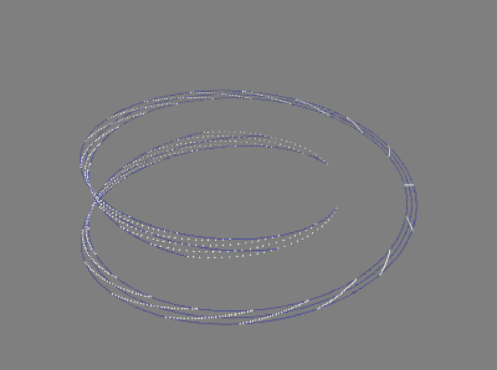
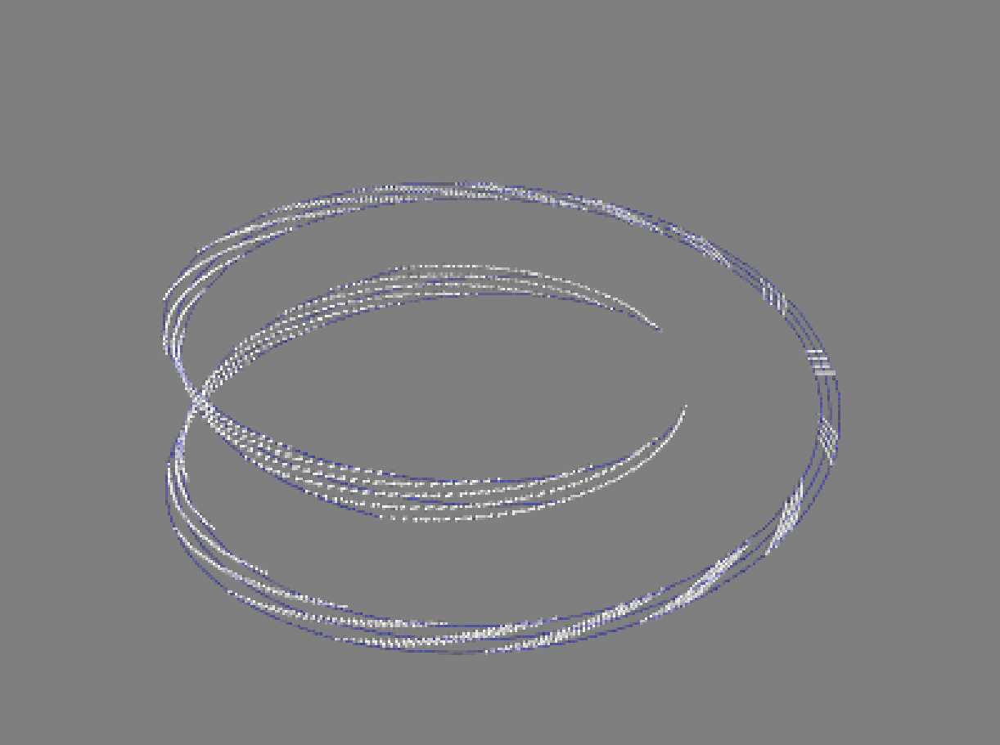
The above grid is often called “flux-tube”, since it is created by following field lines, and it looks like a tube if the field lines are very near to each other (e.g., when we choose a very narrow radial and toroidal region to start from). Since no magnetic field line passes through the sides of the tube, the flux through any cross section of the tube is equal. The term “flux tube” is often used in astrophysics.
Most gyrokinetic simulation codes use field-line-following coordinates in constructing spatial mesh. The mesh is conceptually generated by the following three steps: (1) selecting some initial points; (2) tracing out magnetic-field-lines passing through these points; (3) choose the intersecting points of these field-lines with a series of chosen surfaces as the final grid-points. The initial points and the chosen surfaces differ among various codes and thus the resulting grid differs. Next, let us discuss some examples.
Given the definition of (ψ,𝜃) coordinates, choose toroidally symmetrical points (can be a toroidal wedge) in 𝜃 = 0 plane (𝜃 = 0 plane is usually chosen to be the low-field-side midplane). Then trace out the magnetic-field-lines passing through these points for one poloidal circuit (usually chosen in the range 𝜃 ∈ [−π,π]) and record the intersection points of these field-lines with various 𝜃 = const planes. Note that the gridpoints in 𝜃 = −π plane usually do not coincide those in 𝜃 = +π plane due to the toroidal shift arising when the safety factor is irrational. Interpolation can be used to map physical variables defined on gridpoints in 𝜃 = −π plane to those in 𝜃 = +π plane.
Given the definition of (ψ,𝜃) coordinates, 2D grid-points can be chosen on ϕ = 0 plane based on (ψ,𝜃) coordinates. Then trace out the magnetic-field-lines starting from these points for one toroidal circuit and record the intersection points of these field-lines with ϕj = jΔϕ planes, where j = 1,2,…,Nt − 1, Δϕ = 2π∕(Nt − 1). It is obvious that the resulting mesh are not toroidally symmetrical. And also the grids on ϕ = 0 plane differ from those on ϕ = 2π plane. Interpolation can be used to mapping physical variables defined on grid-points of ϕ = 0 to those of ϕ = 2π plane. In this case, the number of “toroidal grid-points” Nt (i.e., the number of poloidal planes) is actually the number of grid-points in the parallel direction within one toroidal circuit.
XGC1 can handle the region outside of the LCFS. Here we only discuss the region inside the LCFS. At each radial gridpoint on ϕ = 0 plane, follow the magnetic field line starting form this point for one poloidal loop and record the intersection points of this field-line with ϕj = jΔϕ planes, where j = 1,2,…,Nt, Δϕ = 2π∕Nt. For the case q > 1, one magnetic-field-line will have more than one intersection points on some poloidal planes. Repeat tracing the field line for each radial location. Then project (toroidally) all the intersection points on different poloidal planes to a single poloidal plane and rotate (toroidally) these 2D grids to define a 3D grid that are toroidally symmetrical.
The generalized toroidal angle α is numerically calculated in my code. To verify B ⋅∇α = 0 along a magnetic field-line, figure 26 plots the values of α along a magnetic field line, which indicates that α is constant. This indicates the numerical implementation of the field-aligned coordinates is correct.


 d𝜃.
d𝜃.
Let us introduce the binormal wavenumber, which is frequently used in presenting turbulence simulation results. Define the binormal direction s by
s =  , ,
|
which is a unit vector lying on a magnetic surface and perpendicular to B. The binormal wavenumber of a mode is defined by
 | (362) |
where p is the phase of the mode. Consider a mode given by exp(ikψψ + im𝜃 − inζ), then the phase p = kψψ + m𝜃 − nζ. Then kbn is written as

![nB ⋅
kbn = |B-×∇-Ψ|[q∇Ψ × ∇𝜃 − ∇Ψ × ∇ ζ].](tokamak_equilibrium485x.png) | (365) |
Using Eq. (285), i.e., B = −(∇ζ ×∇Ψ + q∇Ψ ×∇𝜃), the above expression is written as

 | (366) |
which indicates the binormal wavenumber generally depends on the poloidal angle. For large aspect-ratio tokamak, we have Bϕ ≈ B, q ≈ Bϕr∕(BpR). Then Eq. (366) is written
 | (367) |
which indicates the binormal wavenumber are approximately independent of the poloidal angle. Since m = nq on a resonant surface, the above equation is written |kbn|≈ m∕r, which is the usual poloidal wave number. Due to this relation, the binormal wavenumber kbn is often called the poloidal wavenumber and denoted by k𝜃 in papers on tokamak turbulence. In the GENE code, y coordinate is defined by y = αr0∕q0. Then the ky of a mode of toroidal mode number n is given by ky = 2π∕λy where λy = λαr0∕q0 and λα = 2π∕n. Then ky is written as ky = nq0∕r0, which is similar to the binormal defined above. For this reason, ky of GENE code is also called binormal wave-vector, which is in fact not reasonable because neither ∂r∕∂y or ∇y is along the binormal direction.
Assume magnetic surfaces of a magnetic configuration are known and given by
 | (368) |
 | (369) |
where (r,𝜃) are two parameters and r is magnetic surface label (i.e., ∂Ψ∕∂𝜃|r = 0). The above parametric equations specify a series of concentric-circular magnetic surfaces.
Assume the toroidal field function g(r) = RBϕ is given. Then the toroidal magnetic field is determined by Bϕ = g∕R. Further assume the safety factor profile q(r) is given, then the magnetic field is fully determined. Next, let us derive the explicit form of the poloidal magnetic field Bp, which is given by
 | (370) |
which involves the poloidal magnetic flux Ψp. Therefore our task is to express Ψp in terms of q and g. Using q(r) = dΨt∕dΨp, we obtain
dΨp =  dΨt, dΨt,
|
Integrate the above equation over r, we obtain
 | (371) |
which an be written as
 | (372) |
where use has been made of Ψt = ∫ 0r ∫ −ππBϕrdrd𝜃. Using Bϕ = g∕R and R = R0 + r cos𝜃, the above equation is written
 | (373) |
Using maxima (an open-source computer algebra system), the above integration over 𝜃 can be performed analytically, giving
 | (374) |
Using this, equation (373) is written as
 | (375) |
which can be simplified as
 | (376) |
This is what we want—the expression of the poloidal magnetic flux in terms of q and g. [Another way of obtaining Eq. (376) is to use Eq. (183), i.e.,
 | (377) |
where 𝒥 is the Jacobian of the (r,𝜃,ϕ) coordinates and is given by 𝒥 = R(R𝜃Zr −RrZ𝜃) = −Rr. Then Eq. (377) is simplified as
 | (378) |
which, after being integrated over r, gives Eq. (376).]
Using Eq. (376), the poloidal magnetic field in Eq. (370) is written as
[Using the formulas ∇r = − (Z𝜃
(Z𝜃 −R𝜃
−R𝜃 ) and 𝒥 = R(R𝜃Zr −RrZ𝜃), where 𝒥 is the Jacobian of the
(r,𝜃,ϕ) coordinates, we obtain 𝒥 = −Rr and ∇r = cos𝜃
) and 𝒥 = R(R𝜃Zr −RrZ𝜃), where 𝒥 is the Jacobian of the
(r,𝜃,ϕ) coordinates, we obtain 𝒥 = −Rr and ∇r = cos𝜃 + sin𝜃
+ sin𝜃 , ∇ϕ =
, ∇ϕ =  ∕R. Then Eq. (379) is
written as
∕R. Then Eq. (379) is
written as
 | (380) |
This is the explicit form of the poloidal magnetic field in terms of g and q. The magnitude of Bp is written as
 | (381) |
Note that both Bp and Bϕ depend on the poloidal angle 𝜃.]
I use Eq. (376) to compute the 2D data of Ψ (Ψ = Ψp∕2π) on the poloidal plane when creating a numerical G-eqdsk file for the above magnetic configuration (Fortran code is at /home/yj/project_new/circular_configuration_with_q_given).
Assume that the poloidal plasma current is zero, then g(r) = RBϕ is a constant independent of r. This is always assumed by the authors who use concentric-circular configuration but is seldom explicitly mentioned.
In analytical work, 1∕R dependence on (r,𝜃) is often approximated as
 = =  = =   ≈ ≈ (1 − 𝜀cos𝜃), (1 − 𝜀cos𝜃),
|
where 𝜀 = r∕R0 is the local inverse aspect ratio.
Since the above field is derived from the general form given by Eq. (10), it is guaranteed that the field is divergence-free. In case of any doubt, let us directly verify this. Write B as
 | (382) |
where 𝒥 is the Jacobian of (r,𝜃,ϕ) coordinates; B(1), B(2), and B(3) are given by
 | (383) |
 | (384) |
 | (385) |
Use Bp given by (379), then B(1), B(2), and B(3) are written as
 | (386) |
 | (387) |
and
 | (388) |
respectively. Then, by using the divergence formula in (r,𝜃,ϕ) coordinates, ∇⋅ B is written as

The answer is no. It is ready to verify that the poloidal magnetic flux function Ψ = Ψp∕2π given by Eq. (376) is not a solution to the GS equation (617) even if the plasma pressure in the GS equation is set to zero. The above expression is a solution to the GS equation in the limit of infinite aspect ratio and zero plasma pressure. The finite aspect ratio and plasma pressure requires the magnetic surfaces to have the Shafranov shift in order to satisfy the GS equation (see Sec. A.17).
For the above magnetic field, the toroidal shift involved in the definition of the generalized toroidal angle can be expressed in simple analytical form. The toroidal shift is given by
 | (390) |
where the local safety factor  can be written as
can be written as
 | (391) |
Using 𝒥 = −Rr and
 | (392) |
The local safety factor  in Eq. (391) is written as
in Eq. (391) is written as
 | (393) |
Using this, expression (390) is written
 | (394) |
Assume 𝜃 ∈ (−π,π), then the integration ∫ 0𝜃1∕Rd𝜃 can be analytically performed (using maxima), yielding
 | (395) |
Then expression (394) is written
 | (396) |
where use has been made of sin𝜃∕(cos𝜃 + 1) = tan(𝜃∕2). Using this, the generalized toroidal angle can be written as
The results given by the formula (396) are compared with the results from my code that assumes a general numerical configuration. The results from the two methods agree with each other, as is shown in Fig. 27, which provides confidence in both the analytical formula and the numerical code. 
 d𝜃 computed by using formula (396) and the numerical code
agree with each other. The different lines correspond to values of δ on different magnetic surfaces.
In the numerical code, two kinds of poloidal angles can be selected: one is the equal-volume
poloidal angle, and another is the equal-arch-length angle. Make sure that the latter is selected
when doing the comparison because the the poloidal angle 𝜃 appearing in the analytical formula
is the equal-arc-length poloidal angle.
d𝜃 computed by using formula (396) and the numerical code
agree with each other. The different lines correspond to values of δ on different magnetic surfaces.
In the numerical code, two kinds of poloidal angles can be selected: one is the equal-volume
poloidal angle, and another is the equal-arch-length angle. Make sure that the latter is selected
when doing the comparison because the the poloidal angle 𝜃 appearing in the analytical formula
is the equal-arc-length poloidal angle.In passing, we note that the straight-field-line poloidal angle 𝜃f can also be considered to be defined by
 | (398) |
i.,e,
 | (399) |
Then using Eq. (397), 𝜃f is written as
 | (400) |
which agrees with Eq. (A2) in Gorler’s paper[13].
Let ψ = r and define hψR = ∇ψ ⋅ , hαR = ∇α⋅
, hαR = ∇α⋅ , etc. Explicit expressions for these elements can be
written as
, etc. Explicit expressions for these elements can be
written as


![h αR = ∇ α ⋅ ˆR
[ ˆ ( - - ) ( - - ) ]
= ϕ-+ -∂δR-Z𝜃 − ∂δR-Zψ Rˆ+ ∂δ-RR ψ − ∂δR-R 𝜃 ˆZ ⋅ ˆR
R ∂ψ 𝒥 ∂𝜃𝒥 ∂𝜃𝒥 ∂ψ𝒥
∂δ R ∂δ R
= ∂ψ𝒥-Z 𝜃 − ∂𝜃-𝒥 Z ψ
- -
= ∂δ-Rr cos𝜃 − ∂δ-R sin𝜃
∂ψ𝒥 ∂𝜃𝒥
∂δ- ∂-δ1
= − ∂ψ cos𝜃+ ∂ 𝜃r sin𝜃
∂δ 1
= − ---cos 𝜃+ ˆq-sin𝜃
∂r r](tokamak_equilibrium545x.png)
![hαZ = ∇[ α ⋅ ˆZ ]
ˆϕ ( ∂δR ∂δ R ) ( ∂δ R ∂δ R )
= R-+ ∂-ψ𝒥-Z 𝜃 − ∂𝜃𝒥-Z ψ ˆR + ∂𝜃-𝒥-Rψ − ∂ψ-𝒥 R 𝜃 Zˆ ⋅ ˆZ
- -
∂δR- ∂-δR-
= ∂𝜃𝒥 R ψ − ∂ψ 𝒥 R𝜃
1 ∂δ
= − ˆq- cos𝜃 − ---sin𝜃
r ∂r](tokamak_equilibrium546x.png)
 | (402) |
Using expression (396), dδ∕dr can be evaluated analytically, yielding
![- ( ( ) ) ( ) [ ]
dδ = 2dqarctan (∘R0-−-r)-tan 𝜃 + 2q---(-----1-------)--tan 𝜃 -d (∘R0-−-r)-
dr dr R20 − r2 2 (√R0−r)- ( 𝜃) 2 2 dr R20 − r2
1+ R20−r2 tan 2
( ( ) )
= 2dqarctan (∘R0-−-r)-tan 𝜃
dr R20 − r2 2
1 ( 𝜃) − R0
+ 2q---(----------(--))2-tan 2 (R--+r)∘R2--−-r2
1+ (√RR02−−rr)2 tan 𝜃2 0 0
0](tokamak_equilibrium548x.png)
 arctan(x) = arctan(x) = 
|
(I did not remember this formula and I use SymPy to obtain this.) These expressions are used to benchmark the numerical code that assume general flux surface shapes. The results show that the code gives correct result when concentric circular flux surfaces are used.
Taking the 𝜃 derivative of δ, equation (396) is written as (using Sympy)
 | (403) |
where
 | (404) |
Equation (393) should be equal to  given by Eq. (393). This was verified numerically.
given by Eq. (393). This was verified numerically.
Taking the r derivative of Eq. (376), we obtain
 | (405) |
i.e.,
 | (406) |
 | (407) |


 . Note that ∂δ∕∂ψ is discontinuous at the 𝜃 cut, which in this case is on the high-field-side.
. Note that ∂δ∕∂ψ is discontinuous at the 𝜃 cut, which in this case is on the high-field-side.The magnetic shear for a concentric-circular configuration is defined by
 | (408) |
where r is the minor radius of a magnetic surface. The above expression can be re-arranged as
 | (409) |
Integrating the above equation over r and assuming ŝ is a constant, we obtain
 | (410) |
Performing the integration, the above equation is written as
 | (411) |
where q0 = q(r0). Equation (411) can be finally written as
 | (412) |
This is a profile with a constant magnetic shear s. In Ben’s toroidal ITG simulation, the following q profile is used:
 | (413) |
with q′(r0) = ŝq0∕r0. This is a linear profile over r, with the values of q and the shear at r = r0 being q0 and ŝ, respectively.
The fixed boundary equilibrium problem (also called the “inverse equilibrium problem” by some authors) refers to the case where the shape of a boundary magnetic surface is given and one is asked to solve the equilibrium within this magnetic surface. To make it convenient to deal with the shape of the boundary, one usually uses a general coordinates system which has one coordinate surface coinciding with the given magnetic surface. This makes it trivial to deal with the irregular boundary. To obtain the equilibrium, one needs to solve the GS equation in the general coordinate system.
Next we derive the form of the GS equation in a general coordinate system. The main task is to derive the form of the toroidal elliptic operator in the general coordinate system. The toroidal elliptic operator takes the form
 | (414) |
For an arbitrary general coordinate system (ψ,𝜃,ϕ) (the (ψ,𝜃,ϕ) coordinate system here is an arbitrary general coordinate system except that ∇ϕ is perpendicular to both ∇ψ and ∇𝜃), the toroidal elliptic operator is written
![2 {[ ] [ ] [ ] [ ] }
△ ⋆Ψ = R-- Ψ ψ 𝒥2|∇ ψ|2 + Ψ𝜃 𝒥2-|∇ 𝜃|2 + Ψψ 𝒥2(∇ ψ⋅∇ 𝜃) + Ψ𝜃 𝒥-2∇𝜃 ⋅∇ψ ,
𝒥 R ψ R 𝜃 R 𝜃 R ψ](tokamak_equilibrium565x.png) | (415) |
where the subscripts denotes partial derivatives, 𝒥 is the Jacobian of the coordinate system (ψ,𝜃,ϕ). [Next, we provide the proof of Eq. (415). The gradient of Ψ is written as (note that Ψ is independent of ϕ)
 | (416) |
Using this expression and the divergence formula (133), the elliptic operator in Eq. (414) is written
![( )
△ ∗Ψ = R2 ∇ ⋅ -1-∂Ψ-∇ψ + -1-∂Ψ-∇𝜃
R2 ∂ψ R2 ∂𝜃
2 1-∂-( -1-∂Ψ- -1-∂Ψ- )
= R 𝒥 ∂ψ 𝒥 R2 ∂ψ ∇ψ ⋅∇ ψ+ 𝒥 R2 ∂𝜃 ∇𝜃 ⋅∇ ψ
1 ∂ ( 1 ∂Ψ 1 ∂Ψ )
+ R2 ----- 𝒥 -2---∇ ψ ⋅∇𝜃 +𝒥 --2---∇𝜃 ⋅∇𝜃
𝒥[ ∂(𝜃 R ∂ψ) ( R ∂𝜃 ) ( ) ( ) ]
R2- -𝒥- 2 -𝒥- 𝒥-- -𝒥- 2
= 𝒥 ΨψR2 |∇ψ| ψ + Ψ𝜃R2 ∇ ψ⋅∇ 𝜃 ψ + Ψψ R2∇ ψ⋅∇ 𝜃 𝜃 + Ψ𝜃R2 |∇ 𝜃| (𝜃41,7)](tokamak_equilibrium567x.png)
Using Eq. (415), the GS equation (53) is written
![[( ) ( ) ( ) ( ) ]
R2- 𝒥-- 2 𝒥-- 2 𝒥-- -𝒥- 2 dP- dg-
𝒥 Ψ ψR2|∇ ψ| ψ + Ψ𝜃R2|∇𝜃| 𝜃 + Ψ𝜃R2 ∇ψ ⋅∇𝜃 ψ + ΨψR2 ∇ψ ⋅∇ 𝜃 𝜃 = − μ0R dΨ− dΨ g,](tokamak_equilibrium568x.png) | (418) |
which is the form of the GS equation in (ψ,𝜃,ϕ) coordinate system.
The toroidal elliptic operator in Eq. (415) can be written
![∗ R2- ψψ 𝜃𝜃 ψ𝜃 ψ𝜃
△ Ψ = 𝒥 [(h Ψψ)ψ + (h Ψ𝜃)𝜃 + (h Ψ𝜃)ψ + (h Ψψ)𝜃],](tokamak_equilibrium569x.png) | (419) |
where haβ is defined by Eq. (174), i.e.,
 | (420) |
Next, we derive the finite difference form of the toroidal elliptic operator. The finite difference form of the term (hψψΨψ)ψ is written
![ψψ 1 [ ψψ ( Ψi,j+1 − Ψi,j) ψψ ( Ψi,j − Ψi,j−1) ]
(h Ψψ)ψ|i,j = δψ hi,j+1∕2 ----δψ------ − hi,j− 1∕2 ----δψ-----
ψψ ψψ
= H i,j+1∕2(Ψi,j+1 − Ψi,j)− H i,j− 1∕2(Ψi,j − Ψi,j−1), (421)](tokamak_equilibrium571x.png)
 | (422) |
The finite difference form of (h𝜃𝜃Ψ𝜃)𝜃 is written
![[ ( ) ( )]
(h𝜃𝜃Ψ ) | = 1- h 𝜃𝜃 Ψi+1,j −-Ψi,j − h𝜃𝜃 Ψi,j-−-Ψi−1,j
𝜃 𝜃i,j δ𝜃 i+1∕2,j δ𝜃 i−1∕2,j δ𝜃
= H 𝜃𝜃 (Ψi+1,j − Ψi,j)− H𝜃𝜃 (Ψi,j − Ψi−1,j), (423)
i+1∕2,j i−1∕2,j](tokamak_equilibrium573x.png)
 | (424) |
The finite difference form of (hψ𝜃Ψ𝜃)ψ is written as
![[ ( ) ( )]
(Ψ hψ𝜃) || = -1- hψ𝜃 Ψi+1,j+1∕2 −-Ψi−1,j+1∕2 − hψ𝜃 Ψi+1,j−-1∕2 −-Ψi−1,j−1∕2 .
𝜃 ψ i,j δψ i,j+1∕2 2δ𝜃 i,j−1∕2 2δ𝜃](tokamak_equilibrium575x.png) | (425) |
Approximating the value of Ψ at the grid centers by the average of the value of Ψ at the neighbor grid points, Eq. (425) is written as
 | (426) |
where
 | (427) |
Similarly, the finite difference form of (hψ𝜃Ψψ)𝜃 is written as
![[ ( ) ( )]
(Ψ hψ𝜃)| = 1- hψ𝜃 Ψi+1∕2,j+1 −-Ψi+1∕2,j−1 − hψ𝜃 Ψi−-1∕2,j+1 −-Ψi−1∕2,j−1-
ψ 𝜃i,j δ𝜃 i+1∕2,j 2δψ i−1∕2,j 2δψ
= H ψ𝜃 (Ψi+1,j+1 + Ψi,j+1 − Ψi+1,j−1 − Ψi,j−1) − H ψ𝜃 (Ψi,j+1 + Ψi−1,j+1 − Ψi,j−1 − Ψi− 1,(j−4218).)
i+1∕2,j i−1∕2,j](tokamak_equilibrium578x.png)
![𝒥 ||
R2-△∗Ψ || = (h ψ𝜃Ψ 𝜃)ψ + (h ψψΨψ)ψ + (h𝜃𝜃Ψ𝜃)𝜃 + (h ψ𝜃Ψ ψ)𝜃
i,j
= Hψiψ,j+1∕2(Ψi,j+1 − Ψi,j) − Hψiψ,j−1∕2(Ψi,j − Ψi,j−1)
+ H𝜃𝜃 (Ψ − Ψ ) − H𝜃𝜃 (Ψ − Ψ )
i+1∕2,j i+1,j i,j i−1∕2,j i,j i−1,j
+ Hψi𝜃,j+1∕2(Ψi+1,j + Ψi+1,j+1 − Ψi− 1,j − Ψi−1,j+1)− Hiψ,j𝜃−1∕2(Ψi+1,j−1 + Ψi+1,j − Ψi− 1,j−1 − Ψi−1,j)
ψ𝜃 ψ𝜃
+ Hi+1∕2,j(Ψi+1,j+1 +Ψi,j+1 − Ψi+1,j− 1 − Ψi,j−1)− Hi−1∕2,j(Ψi,j+1 + Ψi− 1,j+1 − Ψi− 1,j−1 − Ψi,j−1)
= Ψi,j(− Hiψ,jψ+1∕2 − H ψi,ψj− 1∕2 − H 𝜃i+𝜃1∕2,j − H 𝜃i𝜃−1∕2,j)
ψ𝜃 ψ𝜃 ψψ ψ𝜃 ψ𝜃
+ Ψi− 1,j−1(H i,j−1∕2 +H i−1∕2,j) +Ψi,j−1(H i,j− 1∕2 − H i+1∕2,j +H i−1∕2,j)
+ Ψi+1,j− 1(− H ψ𝜃 − H ψ𝜃 )+ Ψi−1,j(H𝜃i𝜃−1∕2,j − Hψ 𝜃 + H ψ𝜃 )
𝜃𝜃 i,j−1∕2ψ𝜃 i+1∕2,jψ𝜃 iψ,j𝜃+1∕2 i,jψ−𝜃1∕2
+ Ψi+1,j(H i+1∕2,j + Hi,j+1∕2 − Hi,j−1∕2)+ Ψi− 1,j+1(− Hi,j+1∕2 − Hi−1∕2,j)
+ Ψ (H ψψ + Hψ𝜃 − Hψ𝜃 )+ Ψ (H ψ𝜃 + H ψ𝜃 )
i,j+1 i,j+1∕2 i+1∕2,j i−1∕2,j i+1,j+1 i,j+1∕2 i+1∕2,j](tokamak_equilibrium579x.png)
 | (429) |
 | (430) |
and
 | (431) |
where the Jacobian
 | (432) |
The partial derivatives, R𝜃, Rψ, Z𝜃, and Zψ, appearing in Eqs. (429)-(432) are calculated by using the central difference scheme. The values of hψψ, h𝜃𝜃, hψ𝜃 and 𝒥 at the middle points are approximated by the linear average of their values at the neighbor grid points.
 | (433) |
 | (434) |
 | (435) |

Ψ = d0 + d1 cos𝜃 + d2 cos𝜃 + d2 sin𝜃 sin𝜃
|
 | (436) |
 | (437) |
The function p(Ψ) and g(Ψ) in the GS equation are free functions which must be specified by users before solving the GS equation. Next, we discuss one way to specify the free functions. Following Ref. [16], we take P(Ψ) and g(Ψ) to be of the forms
 | (438) |
 | (439) |
with  and ĝ chosen to be of polynomial form:
and ĝ chosen to be of polynomial form:
 | (440) |
 | (441) |
where
 | (442) |
with Ψb the value of Ψ on the boundary, Ψa the value of Ψ on the magnetic axis, α, β, γ, P0, Pb, and g0 are free parameters. Using the profiles of P and g given by Eqs. (438) and (439), we obtain
 | (443) |
where Δ = Ψb − Ψa, and
 | (444) |
Then the term on the r.h.s (nonlinear source term) of the GS equation is written
![[ -- ] --
− μ0R2dP- − dgg = μ0R2 1-(P0 − Pb)α Ψα−1 + 1g20γ 1-βΨβ−1.
dΨ dΨ Δ 2 Δ](tokamak_equilibrium600x.png) | (445) |
The value of parameters P0, Pb, and g0 in Eqs. (438) and (439), and the value of α and β in Eqs. (440) and (441) can be chosen arbitrarily. The parameter γ is used to set the value of the total toroidal current. The toroidal current density is given by Eq. (575), i.e.,
 | (446) |
which can be integrated over the poloidal cross section within the boundary magnetic surface to give the total toroidal current,
Using
 | (448) |
Eq. (447) is written as
![[( ) ]
∫ -1 ′-- -1--1 2 1- ′--
Iϕ = −Δ (P0 − Pb)ˆp(Ψ)− μ0R22 g0γ Δ ˆg(Ψ) 𝒥 dψd𝜃,](tokamak_equilibrium604x.png) | (449) |
from which we solve for γ, giving
![− ΔIϕ − (P0 − Pb)∫[pˆ′(Ψ)]𝒥 dψd𝜃
γ = -----1-2-∫ [-1-′--]---------.
2μ0g0 R2ˆg (Ψ) 𝒥dψd 𝜃](tokamak_equilibrium605x.png) | (450) |
If the total toroidal current Iϕ is given, Eq. (450) can be used to determine the value of γ.
In the fixed boundary equilibrium problem, the shape of the boundary magnetic surface (it is also the boundary of the computational region) is given while the shape of the inner flux surface is to be solved. A simple analytical expression for a D-shaped magnetic surface takes the form
 | (451) |
 | (452) |
with 𝜃 changing from 0 to 2π. According to the definition in Eqs. (517), (518), and (520) we can readily verify that the parameters a, R0, κ appearing in Eqs. (451) and (452) are indeed the minor radius, major radius, and ellipticity, respectively. According to the definition of triangularity Eq. (519), the triangularity δ for the magnetic surface defined by Eqs. (451) and (452) is written as
 | (453) |
Another common expression for the shape of a magnetic surface was given by Miller[8, 22], which is written as
![R = R0 + acos[𝜃+ arcsin(Δ sin𝜃)],](tokamak_equilibrium609x.png) | (454) |
 | (455) |
Note that Miller’s formula is only slightly different from the formula (451). For Miller’s formula, it is easy to prove that the triangularity δ is equal to Δ (instead of δ = sinΔ as given in Eq. (453)).
In the iterative metric method[11] for solving the fixed boundary equilibrium problem, we need to provide an initial guess of the shape of the inner flux surface (this initial guess is used to construct a initial generalized coordinates system). A common guess of the inner flux surfaces is given by
 | (456) |
 | (457) |
where α is a parameter, ψ is a label parameter of flux surface. If the shape of the LCFS is given by Eqs. (451) and (452), then Eqs. (456) and (457) are written as
 | (458) |
 | (459) |
Fig. 29 plots the shape given by Eqs. (458) and (459) for a =0.4, R0 = 1.7, κ = 1.7, Δ = arcsin(0.6), and α = 1 with ψ varying from zero to one.


The tokamak equilibrium problem where the shape of the LCFS is given is called fixed boundary equilibrium problem. I wrote a numerical code that uses the iterative metric method[11] to solve this kind of equilibrium problem. Figure 30 describes the steps involved in the iterative metric method.


To benchmark the numerical code, I set the profile of P and g according to Eqs. (527) and (528) with the parameters c2 = 0, c1 = B0(κ02 + 1)∕(R02κ0q0), κ0 = 1.5, and q0 = 1.5. The comparison of the analytic and numerical results are shown in Fig. 31.

Note that the parameter c0 in the Solovev equilibrium seems to be not needed in the numerical calculation. In fact this impression is wrong: the c0 parameter is actually needed in determining the boundary magnetic surface of the numerical equilibrium (in the case considered here c0 is chosen as c0 = B0∕(R02κ0q0)).
With the pressure increasing, the magnetic axis usually shifts to the low-field-side of the device, as is shown in Fig. 32.


Consider the Jacobian of the form
 | (460) |
where m and n are arbitrary integers which can be appropriately chosen by users, μ0 and R0 are constants included for normalization. In the iterative metric method of solving fixed boundary equilibrium problem, we first construct a coordinates transformation (𝜃,ψ) → (R(𝜃,ψ),Z(𝜃,ψ)) (this transformation is arbitrary except for that surface ψ = 1 coincides with the last closed flux surface), then solve the GS equation in (𝜃,ψ) coordinate system to get the value of Ψ at grid points, and finally adjust the value of (R(𝜃,ψ),Z(𝜃,ψ)) to make surface ψ = const lies on a magnetic surface. It is obvious the Jacobian of the final transformation we obtained usually does not satisfy the constraint given by Eq. (460) since we do not use any information of Eq. (460) in the above steps. Now comes the question: how to make the transformation obtained above satisfy the constraint Eq. (460) through adjusting the values of 𝜃? To make the constraint Eq. (460) satisfied, 𝜃 and ψ should satisfy the relation
![[R (𝜃,ψ )]m
𝒥 (𝜃,ψ) = μ ------- ψn,
R0](tokamak_equilibrium616x.png) | (461) |
which
Using Eq. (), we obtain
∫
0𝜃d𝜃 = ∫
0𝜃d𝜃   m m
|
 | (462) |
normalized to 2π, the normalized 𝜃 is written as
 | (463) |
In the GS equation, g(Ψ) is one of the two free functions which can be prescribed by users. In some cases, we want to specify the safety factor profile q(Ψ), instead of g(Ψ), in solving the GS equation. Next, we derive the form of the GS equation that contains q(Ψ), rather than g(Ψ), as a free function. The safety factor defined in Eq. (183) can be written
Equation (466) gives the relation between the safety factor q and the toroidal field function g. This relation can be used in the GS equation to eliminate g in favor of q, which gives
 | (467) |
![[ ]
-dg -(2π)2-- --(2π-)2-- ′
⇒ dΨ g = V′⟨R −2⟩q V ′⟨R −2⟩qΨ ψ.](tokamak_equilibrium624x.png) | (468) |
Note that this expression involves the flux surface average, which depends on the flux surface shape and the shape is unknown before Ψ is determined.
Multiplying Eq. (600) by R−2 gives
![[ ]
1 ( 𝒥 ) ( 𝒥 ) dp dg
𝒥- Ψ′R2|∇ψ |2 + Ψ ′R2(∇ψ ⋅∇ 𝜃) + μ0dΨ-+ R −2dΨ-g = 0.
ψ 𝜃](tokamak_equilibrium625x.png) | (469) |
Surface-averaging the above equation, we obtain
![[ ]
2π∫ ( ′ 𝒥 2) ( ′ 𝒥 ) dp −2 dg
V′- d𝜃 Ψ R2-|∇ψ| + Ψ R2-(∇ψ ⋅∇𝜃) + μ0dΨ-+ ⟨R ⟩dΨ-g = 0,
ψ 𝜃](tokamak_equilibrium626x.png) | (470) |
|
| (471) |
![2π[ ∫ ( |∇ψ |2) ] dp dg
⇒ -′-Ψ ′ d𝜃 𝒥 ---2- + μ0---+ ⟨R −2⟩--g = 0,
V R ψ dΨ dΨ](tokamak_equilibrium628x.png) | (472) |
![[ ⟨ ⟩ ]
1-- ′ ′ |∇ψ-|2 -dp −2 dg-
⇒ V′ V Ψ R2 ψ + μ0dΨ + ⟨R ⟩dΨg = 0.](tokamak_equilibrium629x.png) | (473) |
![[ ⟨ 2⟩]
⇒ V′Ψ′ |∇-ψ2|- + μ0V′ dp-+ ⟨R−2⟩V′ dg-g = 0,
R ψ dΨ dΨ](tokamak_equilibrium630x.png) | (474) |
Substitute Eq. (468) into the above equation to eliminate gdg∕dΨ, we obtain
![[ ⟨ ⟩ ] [ ]
′ ′ |∇ψ|2 ′dp- 4 --qΨ-′--
⇒ V Ψ R2 ψ + μ0V dΨ + q(2π) V ′⟨R− 2⟩ ψ = 0,](tokamak_equilibrium631x.png) | (475) |
Eq. (475) agrees with Eq. (5.55) in Ref. [16].
![⟨ ⟩ [ ⟨ ⟩] [ ] [ ]
⇒ V ′ |∇ψ-|2 Ψ′′+ V′ |∇-ψ|2 Ψ′+μ V ′ dp+q (2π)4 ---q----Ψ ′′+q (2π)4 ---q---- Ψ′ = 0
R2 R2 ψ 0 dΨ V′⟨R −2⟩ V′⟨R−2⟩ ψ](tokamak_equilibrium632x.png) | (476) |
![{ }
′′ 1 [ ′⟨|∇ψ |2⟩ ] ′ 4[ q ] ′ ′ dp
⇒ Ψ = −V-′D V --R2- Ψ +q(2π) V-′⟨R-−2⟩ Ψ + μ0V dΨ-
ψ ψ](tokamak_equilibrium633x.png) | (477) |
where
 | (478) |
The GS equation is
 | (479) |
![4 [ ′ ]
⇒ △ ⋆Ψ = − μ0R2-dp− q(2π)-----qΨ----
dΨ V′⟨R −2⟩ V ′⟨R −2⟩ ψ](tokamak_equilibrium636x.png) | (480) |
![4 { [ ] [ ] }
⇒ △ ⋆Ψ = − μ0R2-dp− q(2π)--- ---q---- Ψ′ + ---q---- Ψ′′
dΨ V′⟨R −2⟩ V ′⟨R−2⟩ ψ V ′⟨R− 2⟩](tokamak_equilibrium637x.png) | (481) |
Using Eq. (477) to eliminate Ψ′′ in the above equation, the coefficients before (−μ0dp∕dΨ) is written as
![{ [ ] }
B = R2 − -q(2π)4-- ---q---- -1--V′
V′⟨R −2⟩ V′⟨R−2⟩ V′D
1 { 2 ( q )2 (2π)4 }
= D- R D − V-′ ⟨R−-2⟩2 . (482)](tokamak_equilibrium638x.png)
A = − ![{[ ] [ ] [( ⟨ 2⟩ ) [ ] ]}
-′-q−2-- − -′-q−2----1′- V ′ |∇ψ2| + q(2π)4 -′-q−2--
V ⟨R ⟩ ψ V ⟨R ⟩ V D R ψ V ⟨R ⟩ ψ](tokamak_equilibrium641x.png)
|
Define
α =  , ,
|
β =  . .
|
A = −(2π)4β![{ }
βψ − β--1-[(V′α)ψ + q(2π)4βψ ]
V ′D](tokamak_equilibrium644x.png)
|
![D 1 ′ 4
=⇒ −-(2π)4β-A = Dβψ − βV-′[(V α)ψ +q(2π) βψ]](tokamak_equilibrium645x.png) | (484) |
![= ⇒ ---D----A = D β − β-1[V′′α + V ′α + q(2π )4β ]
− β(2π)4 ψ V ′ ψ ψ](tokamak_equilibrium646x.png) | (485) |
Using
 | (486) |
Eq. () is written as
![]
=⇒ ---D---A = αβ + (2π)4⟨R −2⟩β2β − β-1-V′′α − β-1V ′α − β 1-q(2π )4β
− β(2π)4 ψ ψ V ′ V ′ ψ V′ ψ](tokamak_equilibrium648x.png) | (487) |
![D 4 −2 2 1 ′′ 1 4 ]
=⇒ −-β(2π-)4A = α βψ + (2π) ⟨R ⟩β βψ − β V′V α − βαψ − βV-′q(2π) βψ](tokamak_equilibrium649x.png) | (488) |
 | (489) |
 | (490) |
 | (491) |
|
| (492) |
|
| (493) |
|
| (494) |
|
| (495) |
|
| (496) |
But the expression of A is slightly different from that given in Ref. [16] [Eq. (5.57)]. Using the above coefficients, the GS equation with the q-profile held fixed is written as
|
| (497) |
Let us derive the contravariant expression for the current density. Using
| μ0J = ∇× B, |
along with magnetic field expression (177) and the curl formula (139), we obtain
which is the contravariant form of the current density vector. Next, for later use, calculate the parallel current. By using Eqs. (177) and (498), the parallel current density is written as![[( ) ( ) ] ( )
μ0J⋅B = − Ψ′ 𝒥-|∇ ψ|2 + Ψ ′ 𝒥-∇ ψ⋅∇ 𝜃 g∇ψ × ∇𝜃 ⋅∇ϕ − g′ − Ψ′ 𝒥-|∇ψ |2 ∇ϕ × ∇ψ ⋅∇ 𝜃
R2 ψ R2 𝜃 R2
[( 𝒥 ) ( 𝒥 ) ] 𝒥
= − Ψ′-2|∇ ψ|2 + Ψ ′-2∇ ψ⋅∇ 𝜃 g𝒥−1 + g′𝒥 −1Ψ′-2-|∇ ψ|2
R{ ψ R 𝜃 R }
1 ( 𝒥 ) 1 ( 𝒥 ) g′ 𝒥
= − g2𝒥− 1 g Ψ ′R2|∇ψ |2 + g Ψ′R2-∇ψ ⋅∇𝜃 − g2Ψ ′R2-|∇ψ|2
[ ψ ] 𝜃
2 − 1 (Ψ-′𝒥-- 2) ( Ψ′𝒥-- )
= − g 𝒥 g R2|∇ψ | + g R2 ∇ψ ⋅∇𝜃 . (499)
ψ 𝜃](tokamak_equilibrium660x.png)
For a large aspect-ratio, circular cross section tokamak, the R on a magnetic surface is nearly constant, R ≈ R0. The poloidal angle dependence of the magnetic field can be neglected, i.e., Bϕ(r,𝜃) ≈ Bϕ(r), and Bp(r,𝜃) ≈ Bp(r), where r is the minor radius of the relavent magnetic surface. Using these, the safety factor in Eq. (91) is approximated to
|
| (500) |
EAST has 14 superconducting poloidal field (PF) coils (only 12 of them are independently powered). The layout is shown in Fig. 33.

All the PF coils can be considered as shaping coils since they all have effects in shaping the plasmas. In practice, they are further classified according to their main roles. PF1 to PF6 form a solenoid in the center of the torus and thus called Central Solenoide (CS) coils. Their main role is to induce electric field to drive current in the plasma and heat the plasma. As a result, they are often called “Ohm heating coils”. PF13 and PF14 are mainly used to control (slow) vertical plasma displacement and thus are often called “vertical field coils” or “position control coils”. PF11 and PF12 are used to triangularize the plasma and thus is called “shaping coils”. In order to squeeze the plasma to form desied triangularity, their currents need to be in the opposite direction of plamsa current (since two opposite currents repel each other). PF7+PF9 and PF8+PF10 are often called (by EAST operators) as “big coils” or “divertor coils” since they have the largest number of turns and current and are used to elongate the plasma to diverter configurations.
Besides the 16 superconducting PF coils outside vaccum vessel, EAST has two small copper coils within the vaccum vessel (2turn/coil), which are connected in anti-series and thus have opposite currents. They are closer to the plasma (than other PF coils) and are used to control fast plasma displacements, specifically VDEs (vertical displacement events). They are often called “fast control coils”.
Using Ampere’s circuital law
|
| (501) |
along the toroidal direction and assuming perfect toroidal symmetry, we obtain
|
| (502) |
i.e.,
|
| (503) |
Neglecting the poloidal current contributed by the plasma, the poloidal current is determined solely by the current in the TF coils. The EAST tokamak has 16 groups of TF coils with 132turns/coil (I got to know the number of turns from ZhaoLiang Wang: φ × R = 12 × 11 = 132). Denote the current in a single turn by Is, then Eq. (503) is written
|
| (504) |
Using this formula, the strength of the toroidal magnetic field at R = 1.8m for Is = 104A is calculated to be Bϕ = 2.34T. This was one of the two scenarios often used in EAST experiments (another scenario is Is = 8 × 103A). (The limit of the current in a single turn of the TF coils is 14.5kA (from B. J. Xiao’s paper [31]).
Note that the exact equilibrium toroidal magnetic field Bϕ is given by Bϕ = g(Ψ)∕R. Compare this with Eq. (503), we know that the approximation made to obtain Eq. (504) is equivalent to g(Ψ) ≈ μ0ITF∕2π, i.e. assuming g is a constant. The poloidal plasma current density jpol is related to g by jpol = g′(Ψ)Bp∕μ0. The constant g corresponds to zero plasma poloidal current, which is consistent to the assumption used to obtain Eq. (504).
Let us estimate the safety factor value near the plasma edge using the total plasma current and the current in a single turn of TF coils Is. For divertor magnetic configuration, the plasma edge is at the saperatrix, where q →∞. To get a characteristic safety factor value that is finite, one often chooses the edge to be the magnetic surface that encloses 95% of the poloidal magnetic flux. Denote this surface by S95 and the value of q at this surface by q95, which is given by
 | (505) |
where a is the minor radius of the surface S95, and Raxis the major radius of the magnetic axis, Bϕ,axis is the the magnitude of toroidal magnetic field at the magnetic axis, and Bp is the average poloidal magnetic field on the surface, Bp ≈ μ0Ip∕(2πa). Using Eq. (504), Eq. (505) is written as
 | (506) |
For EAST, tipically Raxis = 1.85m and a = 0.45m. Using this, we obtain
 | (507) |
The so-called resonant magnetic perturbation (RMP) coils are 3D coils that are used to suppress or mitigate edge localized modes. The shape and location of RMP coils of EAST tokamak are plotted in Fig. 34.
The size of EAST is similar to that of DIII-D tokamak. The main parameters are summarized in Table. 1. A significant difference between EAST and DIII-D is that DIII-D has a larger minor radius, which makes DIII-D able to operate with a larger toroidal current than that EAST can do for the same current density. Another significant difference between EAST and DIII-D is that the coils of EAST are supper-conducting while the coils of DIII-D are not. The supper-conducting coils enable EAST to operate at longer pulse.
| EAST | DIII-D[21] | KSTAR[19] | SPARC | WEST | JET | |
| Major radius R0 | 1.85m | 1.67m | 1.8m | 1.85m | 2.5m | 2.96m |
| minor radius a | 0.45m | 0.67m | 0.5m | 0.57m | 0.5m | 0.9m |
| elongation | ||||||
| Plasma volume | 20m3 | |||||
| No. of TF coils, turns, current | 16, 130, 14.5kA | 24, 6, 126kA | 16, 56, 35.2kA | |||
| Bt at R0 | 3.26T | 2.17T | 3.5T | 12.2T | 3.7T | 3.45T |
| CS coil module×turn×current | 6×120×14.5kA | |||||
| No. of independent PF coils | 6+6 | ?+18 | ||||
| Available solenoid magnetic flux | 12Vs | 10.5Vs | 17Vs | |||
| Maximum plasma current | 1.0MA | 3.0MA | 2MA | 8.7MA | 1MA | 5MA |
| Pulse length | 400s | 10s | 300s | |||
| superconducting? | Yes | No | Yes | Yes | No | |
| ITER[1] | CFETR(old version) | CFETR (new) | BEST | |
| Major radius R0 | 6.2m | 5.7m | 7.2m | 3.6m |
| minor radius a | 2.0m | 1.6m | 2.2m | |
| elongation | ||||
| No. of TF coils, turns, current | 18, 134, 68kA | 16, 132, 67.5kA | 16, ?, ? | 16, 152, 45.6kA |
| Bt at R0 | 5.29T | 5.00T | 6.5T | |
| CS coil module×turn×current | ||||
| No. of independent PF coils | ||||
| Available solenoid magnetic flux | ||||
| Maximum plasma current | 15MA | 10MA | 14MA | |
| Pulse length | 400s | |||
| superconducting? | Yes | Yes | Yes | Yes |
| ASDEX-U | HL-2M | NSTX | MAST | |
| Major radius R 0 | 1.65m | 1.78m | 0.85m | 0.9m |
| minor radius a | 0.7m | 0.65m | 0.68m | 0.6m |
| elongation | ||||
| No. of TF coils, turns, current | 16,?,? | 20,7,190kA | ||
| Bt at R0 | 2.99T | 0.3T | 0.55T | |
| CS coil module×turn×current | 1,?,? | |||
| No. of independent PF coils | 1+16 | |||
| Available solenoid magnetic flux | 14Vs | |||
| typical plasma current | 1.6MA | 2.5MA | ||
| Pulse length | 5s | |||
| superconducting? | No | No | No | |
DIII-D has 24 groups of TF coils with 6turns/coil, i.e., total turns are 24 × 6 = 144, with a maximum current of Is = 126kA in a single turn[21]. Using formula (503), the toroidal filed at R = 1.67m can be calculated, giving 2.17T.
DIII-D is special in that its poloidal field (PF) coils are located inside of the TF-coils, which makes the PF-coils more close to the plasma and thus more efficient in shaping the plasma. However, this nested structure is difficult to assemble. In superconducting tokamaks (e.g., EAST, KSTAR, ITER), PF coils are all placed outside of the TF-coils.
I noticed that HL-2M also has the PF coils located within the TF-coils, similar to DIII-D. This remind me that this layout may apply to all non-superconducting tokamaks (to be confirmed, No, non-superconducting tokamak ASDEX-U has PF coils outside of TF coils).
KSTAR has 16 TF coils and 14 PF coils. Both of the TF and PF coil system use internally cooled superconductors. The nominal current in TF coils is 35.2kA∕turn with 56turns∕coil and all coils connected in series[25]. Using these information and formula (503), the toroidal filed at R = 1.8m can be calculated, giving 3.5T. The PF coil system consists of 8 Central Solenoide (CS) coils and 6 outer PF coils and can provide 17 V-sec.
ITER has 18 TF coils with number of turns in one coil being 134 and current per turn 68kA[5]. Using these information and formula (503), the toroidal filed at R = 6.2m can be calculated, giving 5.29T
According to Refs. [8, 22], Miller’s formula for a series of shaped flux surfaces is given by
![R = R0(r)+ rcos{𝜃+ arcsin[δ(r)sin𝜃]},](tokamak_equilibrium669x.png) | (508) |
|
| (509) |
where κ(r) and δ(r) are elongation and triangularity profile, R0(r) is the Shafranov shift profile, which is given by
![′[ ( )2]
R0(r) = R0 (a)− aR0-1 − r- ,
2 a](tokamak_equilibrium671x.png) | (510) |
where R0′ is a constant, R0(a) is the major radius of the center of the boundary flux surface. The triangularity profile is
 | (511) |
and the elongation profile is
 | (512) |
The nominal ITER parameters are κ0 = 1.8, δ0 = 0.5 and R0′ = −0.16. I wrote a code to plot the shapes of the flux surface (/home/yj/project/miller_flux_surface). An example of the results is given in Fig. 35.
An analytic expression for the pressure profile of double (inner and external) transport barriers is given by
 | (513) |
where ψ is the normalized poloidal flux, wi and we are the width of the inner and external barriers, ψi and ψe are the locations of the barriers, ai and ae is the height of the barriers, c is a constant to ensure P(ψ) = 0 at ψ = 1.
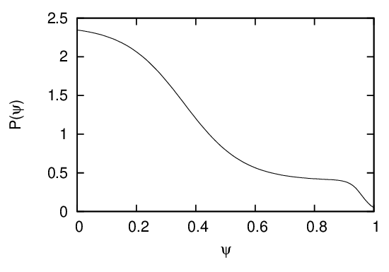
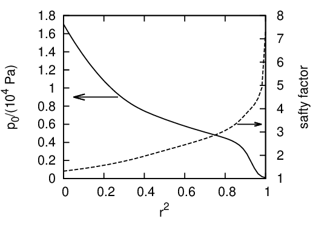
To construct a periodic function about 𝜃, we introduces a function z(𝜃) which is defined over −∞ < 𝜃 < ∞ and vanishes sufficiently fast as |𝜃|→∞ so that the following infinite summation converge:
 | (514) |
If we use the above sum to define a function
 | (515) |
then it is obvious that
 | (516) |
i.e., z(𝜃) is a periodic function about 𝜃 with period of 2π.
If we use the right-hand-side of Eq. (515) to represent z(𝜃), then we do not need to worry about the periodic property of z(𝜃) (the periodic property is guaranteed by the representation)
Let us introduce parameters characterizing the shape of a magnetic surface in the poloidal plane. The “midplane” is defined as the plane that passes through the magnetic axis and is perpendicular to the symmetric axis (Z axis). For a up-down symmetric (about the midplane) magnetic surface, its shape can be roughly characterized by four parameters, namely, the R coordinate of the innermost and outermost points in the midplane, Rin and Rout; the (R,Z) coordinators of the highest point of the magnetic surface, (Rtop,Ztop). These four parameters are indicated in Fig. 38.

In terms of these four parameters, we can define the major radius of a magnetic surface
 | (517) |
(which is the R coordinate of the geometric center of the magnetic surface), the minor radius of a magnetic surface
 | (518) |
the triangularity of a magnetic surface
 | (519) |
and, the ellipticity (elongation) of a magnetic surface
 | (520) |
Usually, we specify the value of R0, a, δt, and κ, instead of (Rin,Rout,Rtop,Ztop), to characterize the shape of a magnetic surface. The value of the triangularity δt is usually positive in traditional tokamak operations, but negative triangularity is achievable and potentially useful, which is under active investigation.
Besides, using a and R0, we can define another useful parameter 𝜀 ≡ a∕R0, which is called the inverse aspect ratio. Note that the major radius R0 of the LCFS is usually different from Raxis (the R coordinate of the magnetic axis). Usually we have Raxis > R0 due to the so-called Shafranov shift.
We note that Ψ ≡ AϕR is the covariant toroidal component of A in cylindrical coordinates (R,ϕ,Z). The proof is as follows. Note that the covariant form of A should be expressed in terms of the contravariant basis vector (∇R, ∇ϕ, and ∇Z), i.e.,
 | (521) |
where A2 is the covariant toroidal component of A. To obtain A2, we take scalar product of Eq. (521) with ∂r∕∂ϕ and use the orthogonality relation (103), which gives
 | (522) |
In cylindrical coordinates (R,ϕ,Z), the position vector is written as
 | (523) |
where  ,
,  , and
, and  are unit vectors along ∂r∕∂R, ∂r∕∂Z, and ∂r∕∂ϕ, respectively, i.e.
are unit vectors along ∂r∕∂R, ∂r∕∂Z, and ∂r∕∂ϕ, respectively, i.e.
 | (524) |
Using this, we obtain
 | (525) |
Use Eq. (525) in Eq. (522) giving
 | (526) |
with Aϕ defined by Aϕ = A ⋅ . Equation (526) indicates that Ψ = AϕR is the covariant toroidal
component of the vector potential.
. Equation (526) indicates that Ψ = AϕR is the covariant toroidal
component of the vector potential.
For most choices of P(Ψ) and g(Ψ), the GS equation (53) has to be solved numerically. For the specific choice of P and g profiles given by
 | (527) |
 | (528) |
where c1, c2, and R0 are constants, there is an analytical solution, which is given by[16]
 | (529) |
where c0 is an constant. [Proof: By direct substitution, we can verify Ψ of this form is indeed a solution to the GS equation (53).] A useful choice for tokamak application is to set c0 = B0∕(R02κ0q0), c1 = B0(κ02 + 1)∕(R02κ0q0), and c2 = 0. Then Eq. (529) is written
![[ 2 ]
Ψ = ---B20-- R2Z2 + κ0(R2 − R20)2 .
2R 0κ0q0 4](tokamak_equilibrium695x.png) | (530) |
For this case, the toroidal field function g is a constant. (For the Solovev equilibrium (530), I found numerically that the value of the safety factor at the magnetic axis (R = R0,Z = 0) is equal to q0g∕(R0B0). This result should be able to be proved analytically. I will do this later. In calculating the safety factor, we also need the expression of |∇Ψ|, which is given analytically by
![∘ (---)----(---)--
∂-Ψ 2 ∂-Ψ 2
|∇Ψ | = ∂R + ∂Z
B ∘ -------------------------------
= ---20-- [2RZ2 + κ20(R2 − R20)R ]2 + (2R2Z )2. (531)
2R 0κ0q0](tokamak_equilibrium696x.png)
Define Ψ0 = B0R02, and Ψ = Ψ∕Ψ0, then Eq. (530) is written as
where R = R∕R0, Z = Z∕R0. From Eq. (532), we obtain
 | (533) |
Given the value of κ0, q0, for each value of Ψ, we can plot a magnetic surface on (R,Z) plane. An example of the nested magnetic surfaces is shown in Fig. 39.
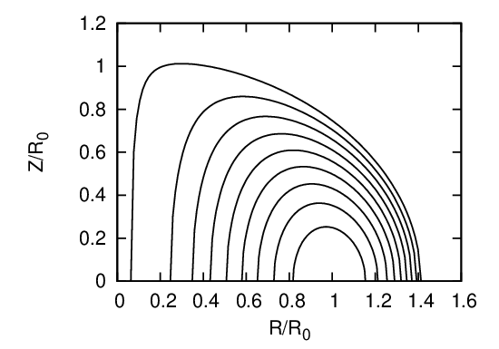
Equation (530) can be solved to give explicit form of the contour of Ψ in (R,Z) plane:
 | (534) |
The minor radius of a magnetic surface of the Solovev equilibrium can be calculated by using Eq. (534), which gives
 | (535) |
 | (536) |
and thus
 | (537) |
where A = 8R02q0∕(B0κ0). In my code of constructing Solovev magnetic surface, the value of a is specified by users, and then Eq. (537) is solved numerically to obtain the value of Ψ of the flux surface. Note that the case Ψ = 0 corresponds to Rin = Rout = R0, i.e., the magnetic axis, while the case Ψ = R02B0κ0∕(8q0) corresponds to Rin = 0. Therefore, the reasonable value of Ψ of a magnetic surface should be in the range 0 ≤ Ψ < R02B0κ0∕(8q0). This range is used as the interval bracketing a root in the bisection root finder.
Using Eq. (537), the inverse aspect ratio of a magnetic surface labeled by Ψ can be approximated as[16]
 | (538) |
Therefore, the value of Ψ of a magnetic surface with the inverse aspect ratio 𝜀 is approximately given by
 | (539) |
In deriving the Grad-Shafranov equation, we have assumed that there is no plasma flow. Next, let us examine whether this assumption is justified for plasmas in EAST tokamak.
The complete momentum equation is given by
![[∂U ]
ρm -∂t + U ⋅∇U = ρqE + J ×B − ∇ ⋅ℙ,](tokamak_equilibrium705x.png) | (540) |
where ρqE term can be usually neglected due to either ρq ≈ 0 or E ≈ 0, ℙ is a pressure tensor, which is different from the scalar pressure considered in this note. The equilibrium with pressure tensor can be important for neutral beam heating plasma, where pressure contributed by NBI fast ions can be a tensor. With plasma flow and scalar pressure and neglecting electric force term, the steady state momentum equation is written
 | (541) |
where the term on the left-hand side is the contribution of plasma flow to the force balance. Let us estimate the magnitude of this term. Macroscopic flows in tokamak are usually along the toroidal direction (the poloidal flow is usually heavily damped). The toroidal flow usually has the same toroidal angular frequency on a magnetic surface, i.e., the flow can be written as
 | (542) |
where ωT = ωT(ψ) is the toroidal angular frequency of the flow, which can have radial variation. Using this expression, the left-hand side of Eq. (541) is written as

As is discussed in Sec. (), to satisfy the force balance, g ≡ RBϕ must be a magnetic surface function, i.e., g = g(Ψ). Using this, expression (36) and (37) are written
 | (544) |
and
 | (545) |
respectively. The above two equations imply that
 | (546) |
which implies that the projections of B lines and J lines in the poloidal plane are identical to each other. This indicates that the J surfaces coincide with the magnetic surfaces.
The poloidal plasma current density is usually small (compared with the toroidal plasma current density) but is important for some cases of interest and thus could not be safely neglected. Many model equilibria (e.g., Solovev equilibria, DIII-D cyclone base cases) frequently used in simulations assume that g is a spatial constant, i.e., neglecting the poloidal plasmas current. The conclusions drawn from these simulations could be misleading.
Using this and ∇⋅ J = 0, and following the same steps in Sec. 2.7, we obtain
![I = 1-2π[g(Ψ ) − g(Ψ )],
pol μ0 2 1](tokamak_equilibrium712x.png) | (547) |
where Ipol is the poloidal current enclosed by the two magnetic surfaces, the positive direction of Ipol is
chosen to be in the clockwise direction when observers look along  . Equation (547) indicates that the
difference of g between two magnetic surface is proportional to the poloidal current. For this reason, g
is usually call the “poloidal current function”.
. Equation (547) indicates that the
difference of g between two magnetic surface is proportional to the poloidal current. For this reason, g
is usually call the “poloidal current function”.
In the above, we see that the relation of g with the poloidal electric current is similar to that of Ψ with the poloidal magnetic flux. This similarity is due to the following differential relations:

|

|
The poloidal plasma current density Jp can be further written as
Using g = g(Ψ), Eq. (548) can also be written as
Plasma β is is the ratio of thermal pressure to magnetic pressure, i.e.,
 | (550) |
Since pressure in tokamak plasmas is not uniform, volume averaged pressure is used to define the beta. The toroidal beta βt and the poloidal beta βp are defined, respectively, by
 | (551) |
 | (552) |
where ⟨…⟩ is the volume average, Bt0 is the vacuum toroidal magnetic field at the magnetic axis (or geometrical center of the plasma), Ba = μ0Ip∕l is the flux surface averaged poloidal magnetic fied, l = ∮ dl is the length of the poloidal perimeter of the boundary flux surface. Then βp can be written as
 | (553) |
An alternative defintion of βp use the LCFS cross-sectional average of p rather than the volume average p (Wesson tokamaks). This definition is adopted in many codes, including HEQ code I developed.
Beta can be considered as a quantity characterizing the efficiency of the magnetic field of tokamaks in confining plasmas.
In tokamaks, the toroidal magnetic field is dominant and thus the the toroidal beta βt (not βp) is the usual way to characterize the the efficiency of the magnetic field in confining plasmas. (Why do we need βp? The short answer is that βp is proportional to an important current, the bootstrap current, which is important for tokamak steady state operation.)
Tokamak experiments have found that it is easier to achieve higher βt in low Bt plasmas than in higher Bt plasmas, which indicates that the efficiency of the magnetic field in confining plasma is a decreasing function of the magnitude of the magnetic field.
Beta limit means there is a limit for the value of beta beyond which the plasma will encounter a serious disruption. Early calculation of the beta limit on JET shows that the maximal βt obtained is proportional to Ip∕(106aBt0), where all quantities are in SI units. This scaling relation βt max = CTIp∕(106aBt0) is often called Troyon scaling, where the coefficient CT was determined numerically by Troyon to 0.028. Often CT is expressed in percent, in which case CT = 2.8. This motivates us to define
 | (554) |
which is called “normalized beta”. The normalized beta βN is an operational parameter indicating how close the plasma is to reach destabilizing major MHD activities. Its typical value is of order unit. As mentioned above, βN calculated by Troyon is 2.8. Empirical evaluation from the data of different tokamaks raises this value slightly to 3.5, although significantly higher values, e.g., βN = 7.2, have been achieved in the low aspect ratio tokamak NSTX[24].
The value of βN indicates how close one is to the onset of deleterious instability . The ability to increase the value of βN can be considered as the ability of controlling the major MHD instabilities, and thus can be used to characterize how well a tokamak device is operated. One goal of EAST tokamak during 2015-2016 is to sustain a plasma with βN ≥ 2 for at least 10 seconds.
(check** The tearing mode, specifically the neoclassical tearing mode (NTM) is expected to set the beta limit in a reactor.)
(**check: Tokamak experiments have found that it is easier to achieve high βN in large Ip plasmas than in small Ip plasmas. However, experiments found it is easier to achieve high βp in small Ip plasmas than in large Ip plasmas. Examining the expression of βN and βp given by Eqs. (553) and Eq. (), respectively, we recognize that pressure limit should have a scaling of ⟨p⟩∝ Ipα with 1 < α < 2. )
βp is the ratio of the pressure to the squre of plasma current, and thus characterizes the efficiency of the plasma current in confining the plasma. Is there a limit for βp?
As is mentioned in Sec. A.6, the beta limit study on JET tokamak shows that the maximal βt obtained is proportional to Ip∕aBt0. This means the maximal plasmas pressure obtained is proportional to Ip∕a, i.e.,
 | (555) |
The total plasma energy is given by E ≈⟨p⟩2πRπa2, where R is the major radius of the device. Using Eq. (555), we obtain
 | (556) |
Since fusion power is proportional to the plasma energy, the above relation indicates, to obtain larger fusion power, we need bigger tokamaks with larger plasma current.
The reason why larger plasma current is desired can also be appreciated by examining an empirical scaling of the the energy confinement time τE given by
 | (557) |
which is proportional to I2.
Another fundamental reason for building larger tokamaks is that the energy confinement time τE ∼ a2∕χ increases with the machine size, where χ is the heat diffusitivity. In addition, the heat diffusitivity χ decreases with increasing machine size if the diffusitivity satisfies the gyro-Bohm scaling, which is given by
 | (558) |
which is inverse proportional to the machine size a. However, if the diffusitivity satisfies the Bohm scaling, which is given by
 | (559) |
then, the diffusitivity is independent of the machine size. The Bohm diffusitivity χB is a∕ρs times larger than the gyro-Bohm diffusitivity χGB, where ρs is the gyro-radius. Heat diffusitivity scaling in the low confinement operation (L mode) in present-day tokamaks is observed to be Bohm or worse than Bohm.
The maximum density that can be obtained in stable plasma operations (without disruption) is empirically given by
 | (560) |
where nG is the Greenwalt density, which is given by
 | (561) |
where Ip is the plasma current, a is the minor radius, all physical quantities are in SI units. The 1.5nG gives the density limit that can be achieved for a tokamak operation scenario with plasma current Ip and plasma minor radius a. The Greenwalt density limit is an empirical one, which, like other empirical limits, can be exceeded in practice. Equation (561) indicates that the Greenwalt density is proportional to the current density. Therefore the ability to operate in large plasma current density means the ability to operate with high plasma density.
Note that neither the pressure limit nor the density limit is determined by the force-balance constraints. They are determined by the stability of the equilibrium. On the other hand, since the stability of the equilibrium is determined by the equilibrium itself, the pressure and density limit is determined by the equilibrium.
The self-inductance of a current loop is defined as the ratio of the magnetic flux Φ traversing the loop and its current I:
 | (562) |
where
 | (563) |
It can be proved that L is independent of the current I in the loop, i.e., L is fully determined by the shape of the loop.
On the other hand, the energy contained in the magnetic field produced by the loop current is given by
 | (564) |
where the volume includes all space where B is not negligible. It can be proved that (to be proved) W, L, and I are related to each other by:
 | (565) |
i.e.,
 | (566) |
which can be considered an equivalent definition of the self-inductance.
The internal inductance Li of tokamak plasma is defined in such a way that W only includes the magnetic energy within the plasma. Specifically, Li is defined by
 | (567) |
where the integration over the plasma volume P and only the poloidal field B𝜃 appears in the integration since plasma current produces only the poloidal magnetic field.
The normalized internal inductance li is defined as
 | (568) |
where R is the surface averaged major radius. Using Eq. (567), expression (568) is written as
 | (569) |
which is the definition of li used in the ITER design. Using the defintion of R, i.e.,
 | (570) |
where A is the cross section of boundary flux surface, expression (569) is written as
 | (571) |
Another way of defining the normalized internal inductance is
 | (572) |
where ⟨…⟩s is the surface average over the plasma boundary. Using Ampere’s law, we obtain
 | (573) |
Using this Eq. (572) is written as
 | (574) |
For circular cross section, l2 = 4πA. Then the above expression is written as
li =  ⟨B𝜃2⟩, ⟨B𝜃2⟩,
|
which agrees with Eq. (571).
The normalized internal inductance reflects the peakness of the current density profile in the toroidal plasma: smaller value of li corresponds to broader current profile.
Due to the force balance condition, the plasma current is related to the plasma pressure gradient:
The parallel (to the magnetic field) current density is written as![J∥ ≡ J-⋅B-
B
= JϕB-ϕ +-Jp ⋅Bp
( B ) ( )2
R ddPΨ + μ10R-ddgΨg gR-+ 1μ0 ddgΨ ∇RΨ
= --------------B---------------
dP 1 dg [(g )2 (∇Ψ )2]
gdΨ-+-μ0dΨ---R--+---R----
= B
gdP + 1-dgB2
= -dΨ---μ0dΨ---.
B
= gdP-1-+ -1-dgB. (576)
dΨ B μ0 dΨ](tokamak_equilibrium745x.png)
![σps ≡ σ − ⟨σ[⟩ ⟨ ⟩ ]
= g dP- -1-− 1-- (578)
dΨ B2 B2
Jps
≡ -∥-, (579)
B](tokamak_equilibrium747x.png)

![[1-− B ⟨-1 ⟩]
B B2](tokamak_equilibrium749x.png) is called Pfirsch-Schluter (PS) current. In cylindrical geometry, due to
the poloidal symmetry, the Pfiersch-Schluter current is zero. In toroidal geometry, due to the poloidal
asymmetry, the PS current is generally nonzero. Thus, this quantity characterizes a toroidal
effect.
is called Pfirsch-Schluter (PS) current. In cylindrical geometry, due to
the poloidal symmetry, the Pfiersch-Schluter current is zero. In toroidal geometry, due to the poloidal
asymmetry, the PS current is generally nonzero. Thus, this quantity characterizes a toroidal
effect.
Another useful quantity is μ0⟨J ⋅ B⟩, which is written as

In the vacuum region that is between the plasma and the first wall, there is no current, i.e.,
 | (581) |
Next, let us examine what constraint this condition imposes on the magnetic field. Using expression (10), the above equation is written as
 | (582) |
It is not obvious how to draw useful information from the above equation.
In the above, we use the vector potential approach. Next, let us try the scalar potential approach:
 | (583) |
then the constraint ∇⋅ B = 0 is written as
 | (584) |
[check***As discussed in Sec. (), the force balance equation of axisymmetric plasma requires that B ⋅∇g = 0. From this and the fact B ⋅∇Ψ = 0, we conclude that g is a function of Ψ, i.e., g = g(Ψ). However, this reasoning is not rigorous. Note the concept of a function requires that a function can not be a one-to-more map. This means that g = g(Ψ) indicates that the values of g must be equal on two different magnetic field lines that have the same value of Ψ. However, the two equations B⋅∇g = 0 and B⋅∇Ψ = 0 do not require this constraint. To examine whether this constraint removes some equilibria from all the possible ones, we consider a system with an X point. Inside one of the magnetic islands, we use
 | (585) |
and inside the another, we use
 | (586) |
Then solve the two GS equations respectively within the boundary of the two islands. It is easy to obtain two magnetic surfaces that have the same value of Ψ respectively inside the two islands. Equations (585) and (586) indicate that the values of g on the two magnetic surfaces are different from each other. It is obvious the resulting equilibrium that contain the two islands can not be recovered by directly solving a single GS equation with a given function g(Ψ).**check]
Note that, on both an irrational surface and a rational surface, there are infinite number of
magnetic field lines that are not connected with each other (it is wrong to say there is only one
magnetic field line on a irrational surface). Consider a field f that satisfies B⋅∇f = 0, the value f is a
constant along any one of the magnetic field lines. Now comes the question: whether the
values of f on different field lines are equal to each other? To answer this question, we
can choose a direction different from B on the magnetic surface and examine whether Ψ
is constant or not along this direction, i.e, whether k ⋅∇f equals zero or not, where k is
the chosen direction. For axsiymmetric magnetic surfaces, it is ready to see that k =  is a direction in the magnetic surface and it is usually not identical with B∕B. Then we
obtain
is a direction in the magnetic surface and it is usually not identical with B∕B. Then we
obtain
 | (587) |
If f is independent of ϕ, then k ⋅∇Ψ = 0. Then the fact that B ⋅∇f = 0 and the fact that B and k are two different directions on the magnetic surface, indicates that f is constant on the surface, i.e., the values of f on different field lines are equal to each other. If f is non-axisymmetric, then we know the values of f on different magnetic field lines on the same magnetic surface are not equal to each other. This is the case for the α coordinates discussed in Sec. ().
This reasoning is for the case of axsiymmetric magnetic surfaces. It is ready to do the same reasoning for non-axisymmetrica magnetic surface after we find a convenient direction k on the magnetic surface.
(In practice, I choose the positive direction of 𝜃 and ϕ along the direction of toroidal and poloidal magnetic field (i.e., B ⋅∇ϕ and B ⋅∇𝜃 are always positive in (ψ,𝜃,ϕ) coordinates system). Then, the qlocal defined by Eq. (178) is always positive. It follows that qglobal should be also positive. Next, let us examine whether this property is correctly preserved by Eq. (184). Case 1: The radial coordinate ψ is chosen as Ψ′≡ dΨ∕dψ > 0. Then the factor before the integration in Eq. (184) is negative. We can further verify that 𝒥 is always negative for either the case that ∇Ψ is pointing inward or outward. Therefore the .r.h.s. of Eq. (184) is always positive for this case. Case 2: The radial coordinate ψ is chosen as Ψ′≡ dΨ∕dψ < 0. Then the factor before the integration in Eq. (184) is positive. We can further verify that 𝒥 is always positive for either the case that ∇Ψ is pointing inward or outward. The above two cases include all possibilities. Therefore, the positivity of qglobal is always guaranteed)
a magnetic surface forms a central hole around Z axis. Using Gauss’s theorem in the volume within
the central hole, and noting that no magnetic field line point-intersects a magnetic surface, we know
that the magnetic flux through any cross section of the hole is equal to each other. Next we calculate
this magnetic flux. To make the calculation easy, we select a plane cross section perpendicular to the Z
axis, as is shown by the dash line in Fig. 1. In this case, only BZ contribute to the magnetic flux,
which is written (the positive direction of the cross section is chosen in the direction of  Z)
Z)
![∫
Rc
Ψp1 = 0 Bz(R,Zc )2πRdR
∫ Rc 1∂Ψ
= R-∂R-2πRdR
0∫ Rc
= 2π ∂Ψ-dR
0 ∂R
= 2π[Ψ(Rc,Zc)− Ψ(0,Zc)].](tokamak_equilibrium760x.png)
 | (588) |
be generalized to any revolution surface that is generated by rotating a curve segment on the poloidal plane around Z axis. For instance, a curve on the poloidal plane that connects the magnetic axis and a point on a flux surface can form a toroidal surface (e.g., surface S2 in Fig. 53). The magnetic flux through the toroidal surface S2 is given by
i.e.
 | (589) |
which indicates that the difference of Ψ between the Z axis and a magnetic surface is the poloidal magnetic flux per radian through the central hole, Ψp1∕2π.
The magnetic surface forms a central hole around Z axis. The magnetic flux through any cross section of the central hole is equal to each other and is given by Ψp = 2π(Ψb − Ψa), where Ψa and Ψb are the value of Ψ at the Z axis and the magnetic surface, respectively.
The conclusion in Eq. (588) can be generalized to any revolution surface that is generated by rotating a curve on the poloidal plane about Z axis. For instance, a curve on the poloidal plane that connects the magnetic axis and a point on a flux surface can form a toroidal surface (e.g., surface S2 in Fig. 53).
Also note the difference between Ψp and Ψp1 defined in Sec. 2.7: Ψp1 is the magnetic flux through the central hole of a torus and thus includes the flux in the center transformer, and Ψp is the magnetic flux through the ribbon between the magnetic axis and the magnetic surface.
We know that the toroidal flux ψt, safety factor q, and the Ψ in the GS equation are related by the following equations:
 | (590) |
 | (591) |
Define:
 | (592) |
(In the Toray_ga code, the radial coordinate ρ is defined as
 | (593) |
where Bt0 is a constant factor.ρ defined this way is of length dimension, which is an effective geometry radius obtained by approximating the flux surface as circular.)
I use Eq. (592) to define ρ. Then we have
 | (594) |
 | (595) |
 | (596) |
 | (597) |
 | (598) |
Eq. (598) is used to transform between ψ and ρ.
dρ =    dΦ = dΦ =    2πqdψ = 2πqdψ =   qdψ qdψ
|
⇒ dψ =  dρ(πa2) dρ(πa2)
|

If (ψ,𝜃,ϕ) are magnetic surface coordinates, i.e., ∂Ψ∕∂𝜃 = 0, then the toroidal elliptic operator in Eq. (415) is reduced to
![[( ) ( ) ]
⋆ R2- 𝒥-- 2 -𝒥-
△ Ψ = 𝒥 ΨψR2 |∇ ψ| ψ + ΨψR2 ∇ψ ⋅∇ 𝜃 𝜃 ,](tokamak_equilibrium781x.png) | (599) |
and the GS equation, Eq. (418), is reduced to
![R2 [( 𝒥 ) ( 𝒥 ) ] dP dg
--- Ψψ -2|∇ψ |2 + Ψ ψ-2-∇ψ ⋅∇𝜃 = − μ0R2---− --g(Ψ).
𝒥 R ψ R 𝜃 dΨ dΨ](tokamak_equilibrium782x.png) | (600) |
Define (r,𝜃,ϕ) coordinates by
 | (601) |
 | (602) |
where (R,ϕ,Z) are the cylindrical coordinates and R0 is a constant. The above transformation is shown graphically in Fig. 41.
The Jacobian of (r,𝜃,ϕ) coordinates can be calculated using the definition. Using x = R cosϕ, y = R sinϕ, and z = Z, the Jacobian (with respect to the Cartesian coordinates (x,y,z)) is written as

Next, we transform the GS equation from (R,Z) coordinates to (r,𝜃) coordinates. Using the relations R = R0 + r cos𝜃 and Z = r sin𝜃, we have
 | (604) |
 | (605) |
 | (606) |
 | (607) |
The GS equation in (R,Z) coordinates is given by
 | (608) |
The term ∂Ψ∕∂Z is written as
Using Eq. (609), ∂2Ψ∕∂Z2 is written as
 | (611) |
sin𝜃 =  . .
|
cos𝜃 = −Z = −Z
|
 | (612) |
cos𝜃 = 
|
 | (613) |
Summing the the right-hand-side of Eq. (610) and the expression on line (614) yields
 | (616) |
Using these, the GS equation is written as
 + +  + +  − −  = −μ0(R0+r cos𝜃)2 = −μ0(R0+r cos𝜃)2 − − g(Ψ), g(Ψ),
|
which can be arranged in the form
|
| (617) |
which agrees with Eq. (3.6.2) in Wessson’s book[29], where f is defined by f = RBϕ∕μ0, which is different from g ≡ RBϕ by a 1∕μ0 factor.
Consider the case that the boundary flux surface is circular with radius r = a and the center of the cirle at (R = R0,Z = 0). Consider the case 𝜀 = r∕R0 → 0. Expanding Ψ in the small parameter 𝜀,
|
| (618) |
where Ψ0 ∼ O(𝜀0), Ψ1 ∼ O(𝜀1). Substituting Eq. (618) into Eq. (617), we obtain
| 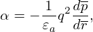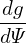r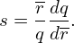+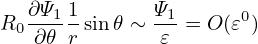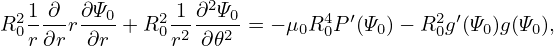r+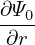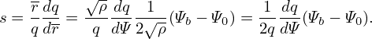+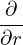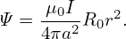−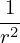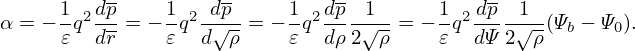−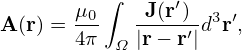 = −μ0(R0+r cos𝜃)2P′(Ψ 0+Ψ1)−g′(Ψ0+Ψ1)g(Ψ0+Ψ1) |
Multiplying the above equation by R02, we obtain
|
| (619) |
Further assume the following orderings (why?)
|
| (620) |
and
 | (621) |
Using these orderings, the order of the terms in Eq. (619) can be estimated as
 | (622) |
 | (623) |
 | (624) |
 | (625) |
 | (626) |
 | (627) |
 | (628) |
 | (629) |
 | (630) |
The leading order (𝜀−2 order) balance is given by the following equation:
 | (631) |
It is reasonable to assume that Ψ0 is independent of 𝜃 since Ψ0 corresponds to the limit a∕R → 0. (The limit a∕R → 0 can have two cases, one is r → 0, another is R →∞. In the former case, Ψ must be independent of 𝜃 since Ψ should be single-valued. The latter case corresponds to a cylinder, for which it is reasonable (really?) to assume that Ψ0 is independent of 𝜃.) Then Eq. (631) is written
 | (632) |
(My remarks: The leading order equation (632) does not corresponds strictly to a cylinder equilibrium because the magnetic field B = ∇Ψ0 ×∇ϕ + g∇ϕ depends on 𝜃.) The next order (𝜀−1 order) equation is
R02  r r +R02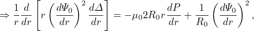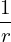−R0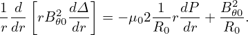cos𝜃 = −μ0R022R
0r cos𝜃P′(Ψ0)−μ0R04P′′(Ψ
0)Ψ1−R02[g′(Ψ
0)g(Ψ0)]′Ψ1 +R02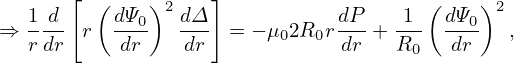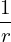−R0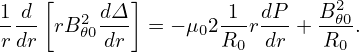cos𝜃 = −μ0R022R
0r cos𝜃P′(Ψ0)−μ0R04P′′(Ψ
0)Ψ1−R02[g′(Ψ
0)g(Ψ0)]′Ψ1
|
|
| (633) |
|
| (634) |
It is obvious that the simple poloidal dependence of cos𝜃 will satisfy the above equation. Therefore, we consider Ψ1 of the form
|
| (635) |
where Δ(r) is a new function to be determined. Substitute this into the Eq. (), we obtain an equation for Δ(r),
|
| (636) |
|
| (637) |
|
| (638) |
|
| (639) |
Using the identity
| 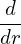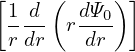 = 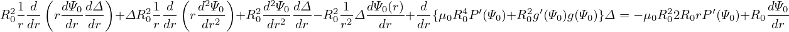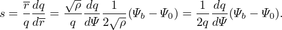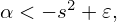−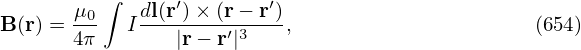, |
equation () is written as
|
| (640) |
Using the leading order equation (), we know that the second and fourth term on the l.h.s of the above equation cancel each other, giving
|
| (641) |
|
| (642) |
Using the identity
|
| (643) |
equation (642) is written
|
| (644) |
|
| (645) |
Using
|
| (646) |
equation (645) is written
|
| (647) |
|
| (648) |
which agrees with equation (3.6.7) in Wessson’s book[29].
The normalized pressure gradient, α, which appears frequently in tokamak literature, is defined by[3]
 | (649) |
which can be further written
|
| (650) |
where p = p∕(B02∕2μ0). Equation (650) can be further written as
|
| (651) |
where 𝜀a = a∕R0, r = r∕a, and a is the minor radius of the boundary flux surface. (Why is there a q2 factor in the definition of α?)
The global magnetic shear s is defined by
|
| (652) |
which can be written
|
| (653) |
In the case of large aspect ratio and circular flux surface, the leading order equation of the Grad-Shafranov equation in (r,𝜃) coordinates is written
 | (654) |
which gives concentric circular flux surfaces centered at (R = R0,Z = 0). Assume that Jϕ is uniform distributed, i.e., |Jϕ| = I∕(πa2), where I is the total current within the flux surface r = a. Further assume the current is in the opposite direction of ∇ϕ, then Jϕ = −I∕(πa2). Using this, Eq. (654) can be solved to give
|
| (655) |
Then it follows that the normalized radial coordinate ρ ≡ (Ψ − Ψ0)∕(Ψb − Ψ0) relates to r by r = (I check this numerically for the case of EAST discharge #38300). Sine in my code, the radial coordinate is Ψ, I need to transform the derivative with respect to r to one with respect to Ψ, which gives
|
| (656) |
|
| (657) |
The necessary condition for the existence of TAEs with frequency near the upper tip of the gap is given by[3]
 | (658) |
which is used in my paper on Alfvén eigenmodes on EAST tokamak[15]. Equations (656) and (657) are used in the GTAW code to calculate s and α.
Magnetic field (e.g., equilibrium poloidal field, RMP field, ripple field) and vector potential generated by coils can be calculated in the following way.
The Biot-Savart law for a zero-thinkness wire is given by
Given a current source J(r,t), the vector potential can be calculated using
|
| (660) |
where
 | (661) |
is called the retarded time. For a steady-state source, J(r′,t′) = J(r). Then Eq. (660) is simplified as
|
| (662) |
For a current flowing in a thin wire, the above equation is written as
|
| (663) |
where dS is a surface element perpendicular to the wire and dl is a line element along the wire. Using J(r′)dS(r′) = I(r′), the above eqaution is written as
|
| (665) |
(Aϕ is needed in several applications. In solving the free-boundy equilibrium problem, we need to calculate Aϕ generated by the PF coils. In studying the effects of RMP on particles, we need to calculate Pϕ, the canonical toroidal angular momentum, whose defintion involves Aϕ. Then we need to calculate Aϕ generated by the RMP coils.)
For a curve along the toroidal direction, the line element dl in terms of the cylindrical basis is written
as dl′ = R′dϕ′ ϕ′. Using Cartesian coordinate basis vectors, dl′ is written as
ϕ′. Using Cartesian coordinate basis vectors, dl′ is written as
|
| (666) |
and
|
| (667) |
where a global Cartesian coordinates with x axis in ϕ = 0 plane is assumed.
Let us consider a full toroidal coil at (R′,Z′)with current I (a filamentary current loop). Since the problem is symmetric, the magnetic field/potential is independent of ϕ. For calculation ease, we select ϕ = 0 plane and calculate A and B values in this plane. Then
|
| (668) |
|
| (669) |
Using these, we obtain
|
| (670) |
and Eq. (665) is written as
|
| (671) |
Sine Aϕ is axsymmetric, the above formula applies to all values of ϕ. Multiply Aϕ by R and set I = 1, we get Green’s function of Ψ:
This expression can be directly used in numerical codes to compute the Green function table. One can also write the above integration to the elipitic integrals and use library to compute these inegreals. Let us write the above expresion in this form. Define 𝜃 = (π − ϕ)∕2, then cosϕ′ = cos(π − 2𝜃) = −cos(2𝜃) = 2sin2𝜃 − 1. Using this Eq. (672) is written as|
| (674) |
Then
![G (R ′,Z ′,R,Z )
∫ π∕2 ′ 2
= μ0- ∘-------4RR-(2sin--𝜃−∘1)d𝜃--------
4π 0 (Z − Z ′)2 + (R + R′)2 1 − k2sin2𝜃
√----∫ π∕2 2
= μ0- RR ′ k(∘2sin--𝜃−-1)d𝜃
2π [0 1− k2sin2𝜃 ]
μ0 √RR- ∫ π∕2 2 − k2 ∫ π∕2 2− 2k2sin2𝜃
= 2π---k-- ∘-----2---2-d𝜃 − ∘------2--2- d𝜃
√--- [ 0 1− k sin 𝜃 0 1 − k sin 𝜃 ]
μ0--RR-- ∫ π∕2---2-−-k2--- ∫ π∕2∘ -----2--2-
= 2π k 0 ∘1-−-k2sin2𝜃d𝜃 − 2 0 1 − k sin 𝜃d𝜃
√----
= μ0--RR-′[(2 − k2)K (k)− 2E(k)]. (675)
2π k](tokamak_equilibrium898x.png)
| E(k) = ∫ 0π∕2d𝜃, |
| K(k) = ∫ 0π∕2d𝜃 |
are the eliptic integrals of the first and second kind.
Similarly, we can calculate the magnetic field:
where the cross product is written as| R ⋅ dl′× (r − r′) = R′(Z − Z′)cosϕ′dϕ′ |
| Z ⋅ dl′× (r − r′) = dϕ′ |
Using these in Eq. (676), BR(r) and BZ(r) are written as
One can also try to write the above formula to eliplicity integral form. The ressult is not compact as the above formula. So I directly use Eqs. (677) and (678) in HEQ code. Alternatively, one can directly take the finite difference of G to get GBR and GBZ in a numerical code.
For a curve in the poloidal plane, the line element dl in terms of the cylindrical basis is written as dl = dRR(ϕ) + dZz. Using Cartesian coordinate basis vectors, dl is written as
|
| (679) |
Using Eq. (679) and (), we obtain
|
| (680) |
This document initially contains notes I took when learning tokamak equilibrium theory. As a result of the on-going learning, the document is evolving. I enjoy seeing the continuous improvement of this document over a long time scale (10 years). Most of the content is elementary but I still found I got something totally wrong in the first version. Let me know if you spot something specious.
This document was written by using TeXmacs[27], a structured wysiwyw (what you see is what you want) editor for scientists. The HTML version is generated by first converting the TeXmacs file to TeX format and then using htlatex to convert the TeX to HTML.
[1] R Aymar, P Barabaschi, and Y Shimomura. The ITER design. Plasma Physics and Controlled Fusion, 44(5):519–565, apr 2002.
[2] M. A. Beer, S. C. Cowley, and G. W. Hammett. Field-aligned coordinates for nonlinear simulations of tokamak turbulence. Phys. Plasmas (1994-present), 2(7):2687–2700, 1995.
[3] H. L. Berk, J. W. Van Dam, D. Borba, J. Candy, G. T. A. Huysmans, and S. Sharapov. More on core localized toroidal alfvén eigenmodes. Phys. Plasmas, 2(9):3401–3406, 1995.
[4] Allen H. Boozer. Physics of magnetically confined plasmas. Rev. Mod. Phys., 76:1071–1141, Jan 2005.
[5] R. Gallix, C. Jong, J. Knaster, N. Mitchell C. Sborchia, Y. Fu. Design and specifications of the iter tf coils. IEEE TRANSACTIONS ON APPLIED SUPERCONDUCTIVITY,, 18(2):463, 2008.
[6] Yang Chen and Scott E. Parker. A delta-f particle method for gyrokinetic simulations with kinetic electrons and electromagnetic perturbations. Journal of Computational Physics, 189(2):463–475, 2003.
[7] Yang Chen and Scott E. Parker. Electromagnetic gyrokinetic δf particle-in-cell turbulence simulation with realistic equilibrium profiles and geometry. Journal of Computational Physics, 220(2):839–855, 2007.
[8] Yang Chen, Scott E. Parker, J. Lang, and G.-Y. Fu. Linear gyrokinetic simulation of high-n toroidal alfvén eigenmodes in a burning plasma. Phys. Plasmas, 17(10):102504, 2010.
[9] Fu Peng, Gao Ge Chen Yuan-Yang, Bao Xiao-Hua. Plasma shape optimization for east tokamak using orthogonal method. Chinese Physics B, 28(1):15201, 2019.
[10] C.Z Cheng and M.S Chance. Nova: a nonvariational code for solving the mhd stability of axisymmetric toroidal plasmas. J. of Comput. Phys., 71(1):124–146, 1987.
[11] J DeLucia, S.C Jardin, and A.M.M Todd. An iterative metric method for solving the inverse tokamak equilibrium problem. Journal of Computational Physics, 37(2):183–204, 1980.
[12] A. M. Dimits. Fluid simulations of tokamak turbulence in quasiballooning coordinates. Phys. Rev. E, 48:4070–4079, Nov 1993.
[13] T. Görler, N. Tronko, W. A. Hornsby, A. Bottino, R. Kleiber, C. Norscini, V. Grandgirard, F. Jenko, and E. Sonnendrücker. Intercode comparison of gyrokinetic global electromagnetic modes. Physics of Plasmas, 23(7):72503, 2016.
[14] J. van der Hoeven et al. GNU TeXmacs. https://www.texmacs.org, 1998.
[15] Youjun Hu, Guoqiang Li, N. N. Gorelenkov, Huishan Cai, Wenjun Yang, Deng Zhou, and Qilong Ren. Numerical study of alfvén eigenmodes in the experimental advanced superconducting tokamak. Phys. Plasmas, 21(5):0, 2014.
[16] Stephen C. Jardin. Computational methods in plasma physics. CRC Press, 2010.
[17] Young Mu Jeon. Development of a Free-boundary Tokamak Equilibrium Solver for Advanced Study of Tokamak Equilibria. Journal of the Korean Physical Society, 67(5):843–853, 09 2015.
[18] L.L. Lao, H. St. John, R.D. Stambaugh, A.G. Kellman, and W. Pfeiffer. Reconstruction of current profile parameters and plasma shapes in tokamaks. Nucl. Fusion, 25(11):1611, 1985.
[19] G.S. Lee, M. Kwon, C.J. Doh, B.G. Hong, K. Kim, M.H. Cho, W. Namkung, C.S. Chang, Y.C. Kim, J.Y. Kim, H.G. Jhang, D.K. Lee, K.I. You, J.H. Han, M.C. Kyum, J.W. Choi, J. Hong, W.C. Kim, B.C. Kim, J.H. Choi, S.H. Seo, H.K. Na, H.G. Lee, S.G. Lee, S.J. Yoo, B.J. Lee, Y.S. Jung, J.G. Bak, H.L. Yang, S.Y. Cho, K.H. Im, N.I. Hur, I.K. Yoo, J.W. Sa, K.H. Hong, G.H. Kim, B.J. Yoo, H.C. Ri, Y.K. Oh, Y.S. Kim, C.H. Choi, D.L. Kim, Y.M. Park, K.W. Cho, T.H. Ha, S.M. Hwang, Y.J. Kim, S. Baang, S.I. Lee, H.Y. Chang, W. Choe, S.G. Jeong, S.S. Oh, H.J. Lee, B.H. Oh, B.H. Choi, C.K. Hwang, S.R. In, S.H. Jeong, I.S. Ko, Y.S. Bae, H.S. Kang, J.B. Kim, H.J. Ahn, D.S. Kim, C.H. Choi, J.H. Lee, Y.W. Lee, Y.S. Hwang, S.H. Hong, K.-H. Chung, D.-I. Choi, and KSTAR Team. Design and construction of the KSTAR tokamak. Nuclear Fusion, 41(10):1515–1523, oct 2001.
[20] G Q Li, Q L Ren, J P Qian, L L Lao, S Y Ding, Y J Chen, Z X Liu, B Lu, and Q Zang. Kinetic equilibrium reconstruction on east tokamak. Plasma Phys. Controlled Fusion, 55(12):125008, 2013.
[21] J.L. Luxon. A design retrospective of the DIII-D tokamak. Nuclear Fusion, 42(5):614–633, may 2002.
[22] R. L. Miller, M. S. Chu, J. M. Greene, Y. R. Lin-Liu, and R. E. Waltz. Noncircular, finite aspect ratio, local equilibrium model. Phys. Plasmas, 5(4):973–978, 1998.
[23] M. Ottaviani. An alternative approach to field-aligned coordinates for plasma turbulence simulations. Physics Letters A, 375(15):1677–1685, 2011.
[24] S.A. Sabbagh, A.C. Sontag, J.M. Bialek, D.A. Gates, A.H. Glasser, J.E. Menard, W. Zhu, M.G. Bell, R.E. Bell, A. Bondeson, C.E. Bush, J.D. Callen, M.S. Chu, C.C. Hegna, S.M. Kaye, L.L. Lao, B.P. LeBlanc, Y.Q. Liu, R. Maingi, D. Mueller, K.C. Shaing, D. Stutman, K. Tritz, and C. Zhang. Resistive wall stabilized operation in rotating high beta nstx plasmas. Nucl. Fusion, 46(5):635, 2006.
[25] I. Song, C. Choi, and M. Cho. Quench protection system for the superconducting coil of the kstar tokamak. IEEE Transactions on Applied Superconductivity, 17(1):1–6, March 2007.
[26] Youwen Sun. Tokamak geometry and equilibrium. http://theory.ipp.ac.cn/~yj/other/TOKAMAK_geometry_and_equilibrium_Youwen_Sun_201208.pdf, 2012. [Online; Institute of Plasma Physics, Chinese Academy of Sciences].
[27] Joris van der Hoeven. Gnu texmacs, a structured wysiwyw (what you see is what you want) editor for scientists. http://www.texmacs.org/, 2007. [Online].
[28] W. X. Wang, Z. Lin, W. M. Tang, W. W. Lee, S. Ethier, J. L. V. Lewandowski, G. Rewoldt, T. S. Hahm, and J. Manickam. Gyro-kinetic simulation of global turbulent transport properties in tokamak experiments. Physics of Plasmas, 13(9):92505, 2006.
[29] John Wesson. Tokamaks. Oxford University Press, 2004.
[30] R. B. White and M. S. Chance. Hamiltonian guiding center drift orbit calculation for plasmas of arbitrary cross section. The Physics of Fluids, 27(10):2455–2467, 1984.
[31] B J Xiao, D A Humphreys, and M L Walker. East plasma control system. Fusion Engineering and Design, 83:181, 2008.
[32] B. J. Xiao. The first diverted plasma on east tokamak. 34th EPS Conference on Plasma Phys, 2007.


![∫
R2
Ψp = R1 Bz (R, Z)2πRdR
∫ R2 1∂ Ψ
= -----2πRdR
R1∫ R ∂R
R2 ∂Ψ-
= 2π R1 ∂R dR
= 2π[Ψ2 − Ψ1]. (20)](tokamak_equilibrium21x.png)


 =
= 


 =
= 


 =
= 


![[( ) ( ) ( ) ] [ ]
∇x ⋅ ∂r-= ∂xi ˆx+ ∂xi ˆy+ ∂xi ˆz ⋅ -∂x-ˆx+ x-∂ˆx-+ -∂yyˆ+ y ∂-ˆy-+ ∂z-ˆz +z ∂ˆz-
i ∂xj ∂x ∂y ∂z ∂xj ∂xj ∂xj ∂xj ∂xj ∂xj
[( ∂xi) ( ∂xi) ( ∂xi) ] [ ∂x ∂y ∂z ]
= ∂x- ˆx+ ∂y- ˆy+ ∂z- ˆz ⋅ ∂xj-ˆx+ 0+ ∂xj ˆy+ 0 + ∂xjˆz+ 0 (104)
∂x ∂x ∂x ∂y ∂x ∂z
= --i----+ --i----+ --i----
∂x ∂xj ∂y ∂xj ∂z ∂xj
= ∂xi- (105)
∂xj
= δij,](tokamak_equilibrium173x.png)


![------1-------
𝒥new ≡ (∇ ψ × ∇𝜃)⋅∇ ϕ
1
= {∇ψ-×-∇[s(ψ)𝜃]}⋅∇-ϕ-
= -1--------1-------
s(ψ )(∇ψ × ∇𝜃)⋅∇ ϕ
= -1--𝒥′
s(ψ )
-1--
= ± s(ψ)𝒥 (197)](tokamak_equilibrium279x.png)


![1 ∫
Ψp = 2π- B ⋅∇ 𝜃|𝒥 |d𝜃dϕd ψ
∫ ψ V ∫ 2π
= dψ B ⋅∇𝜃|𝒥|d𝜃
∫0 ∫0
ψ 2π ′
= 0 dψ 0 Ψ ∇ψ × ∇ϕ ⋅∇ 𝜃|𝒥 |d𝜃
∫ ψ ∫ 2π
= − sign(𝒥) dψ Ψ ′(ψ)d𝜃
0∫ 0
= − 2π sign(𝒥) ψ Ψ′(ψ )dψ
0
= − 2π sign(𝒥)[Ψ(ψ)− Ψ(0)]. (260)](tokamak_equilibrium361x.png)
![∫
Ψt =-1- B ⋅∇ ϕ|𝒥 |d𝜃dϕdψ
2∫π ∫
ψ 2π -1-
= 0 dψ 0 gR2 |𝒥 |d𝜃
∫ ψ[ V ′⟨ 1 ⟩ ]
= g--- -2- dψ. (264)
0 2π R](tokamak_equilibrium365x.png)

![∫
Iϕ(ψ) =-1- J ⋅∇ϕ 𝒥d𝜃dϕdψ
2π [ ]
1 ∫ ( ′ 𝒥 2) ( ′ 𝒥 )
= − 2πμ-- Ψ R2-|∇ψ| + Ψ R2-∇ψ ⋅∇ 𝜃 ∇ ψ × ∇𝜃⋅∇ ϕ𝒥 d𝜃dϕdψ
0 [( ) ψ ( ) ]𝜃
1--∫ ′ 𝒥 2 ′ 𝒥-
= − μ0 Ψ R2 |∇ ψ| ψ + Ψ R2 ∇ψ ⋅∇ 𝜃 𝜃 d𝜃dψ
∫ [( ) ]
= − 1-- Ψ ′ 𝒥-|∇ ψ|2 d𝜃dψ
μ0 R2 ψ
∫ 2π ∫ ψ ( )
= − 1-- d𝜃 dψ Ψ ′ 𝒥-|∇ ψ|2
μ0 0 0 R2 ψ
1 ∫ 2π ( ′ 𝒥 2 )
= − μ0- d𝜃 Ψ R2-|∇ ψ| − 0 . (269)
0](tokamak_equilibrium376x.png)


![∇ ψ ⋅∇f = |∇ ψ|2∂f-+ (∇𝜃 ⋅∇ ψ)∂f-+ (∇ζ ⋅∇ψ )∂f-
∂ψ ∂ 𝜃 ∂ζ
2∂f- ∂f- ∂f-
= |∇ ψ| ∂ψ + (∇𝜃 ⋅∇ ψ)∂ 𝜃 + {∇ [ϕ − qδ(ψ,𝜃)]⋅∇ ψ}∂ζ
∂f ∂f ∂f
= |∇ ψ|2∂ψ-+ (∇𝜃 ⋅∇ ψ)∂-𝜃 − ∇ [qδ]⋅∇ ψ∂ζ
= |∇ ψ|2∂f-+ (∇𝜃 ⋅∇ ψ)∂f-− [q∇δ +δ∇q ]⋅∇ψ ∂f-
∂ψ ∂ 𝜃 [ ( ∂ζ) ]
= |∇ ψ|2∂f-+ (∇𝜃 ⋅∇ ψ)∂f-− q ∂δ-∇ψ + ∂δ∇ 𝜃 + δq′∇ ψ ⋅∇ ψ∂f-
∂ψ ∂ 𝜃 ∂ψ ∂𝜃 ∂ζ
2∂f ∂f [∂ (qδ) 2 ∂δ ] ∂f
= |∇ ψ| ∂ψ-+ (∇𝜃 ⋅∇ ψ)∂-𝜃 − -∂-ψ-|∇ψ| + q∂𝜃-∇𝜃 ⋅∇ψ ∂ζ, (313)](tokamak_equilibrium426x.png)


![kbn =----1--- [mB × ∇Ψ ⋅∇ 𝜃− nB × ∇Ψ ⋅∇ ζ]
|B × ∇Ψ |
----1---
= |B × ∇Ψ |[mB ⋅∇Ψ × ∇ 𝜃− nB ⋅∇Ψ × ∇ ζ]
nB⋅ [m ]
= |B-×-∇Ψ-| n-∇Ψ × ∇ 𝜃− ∇ Ψ × ∇ ζ . (364)](tokamak_equilibrium484x.png)


![∫
I = J dS
ϕ ϕ
∫ ( dP- 1--dgg-)
= R dΨ + μ0dΨ R dRdZ
∫ [ ( 1) -- 1 1 1 --]
= R −-- (P0 − Pb)ˆp′(Ψ) −-----g20γ--ˆg′(Ψ) dRdZ (447)
Δ μ0R 2 Δ](tokamak_equilibrium602x.png)


![-- 1 [--2-2 κ2 --2 ]
Ψ = ----- R Z + -0(R − 1)2 , (532)
2κ0q0 4](tokamak_equilibrium697x.png)


![( ) [ ( )]
R-∂- 1-∂Ψ- = R ∂-- 1- ∂Ψ-∂r-+ ∂Ψ-∂𝜃-
∂R R ∂R ∂R [R ( ∂r ∂R ∂𝜃 ∂R )]
= R ∂-- 1- ∂Ψ-cos𝜃 − ∂Ψ-Z-
∂R R ∂r ∂𝜃 r2
∂ ( ∂Ψ ∂Ψ Z ) (∂Ψ ∂Ψ Z )( 1 )
= ∂R- ∂r-cos𝜃− -∂𝜃r2 + R -∂r cos𝜃 − ∂𝜃-r2 − R2-
( 2 2 ) ( 2 2 ) ( ) ( )
= ∂-Ψ2-∂r + ∂-Ψ--∂𝜃 cos𝜃+ ∂Ψ--∂-cos𝜃− ∂-Ψ--∂r-+ ∂-Ψ2-∂𝜃- -Z2 − ∂Ψ--∂- Z2 − 1- ∂Ψ-cos𝜃 − ∂Ψ-Z2
( ∂r ∂R ∂r∂𝜃∂R ) ∂r ∂R ( ∂𝜃∂r ∂R ∂𝜃 ∂R) r ∂𝜃 ∂R r R( ∂r ∂𝜃 r)
∂2Ψ- ∂2Ψ--Z ∂-Ψsin2𝜃 ∂2Ψ-- ∂2Ψ-Z- Z- ∂Ψ- 1- -1 ∂Ψ- ∂-Ψ-Z
= ∂r2 cos𝜃 − ∂r∂𝜃r2 cos𝜃+ ∂r r − ∂𝜃∂r cos 𝜃− ∂𝜃2 r2 r2 + ∂𝜃Z r32cos𝜃− R ∂r cos𝜃− ∂𝜃r2
∂2Ψ ∂2Ψ sin2 𝜃 ∂2Ψ Z ∂ Ψsin2𝜃 ∂Ψ 1
= --2-cos2𝜃+ ---2--2--− 2------2 cos𝜃+-------- + --Z -32cos𝜃 (614)
∂r( ∂ 𝜃 r ) ∂r∂𝜃 r ∂r r ∂𝜃 r
− 1- ∂Ψ-cos𝜃− ∂Ψ-1 sin𝜃 (615)
R ∂r ∂ 𝜃r](tokamak_equilibrium800x.png)